PAPERBANK · 论文少走弯路指南
论文怎么写？先粗写，再精挑。
先用 Codex 拉草稿和图，再由人审逻辑、精修正文。
1. 一天拉完草稿 · 2. 光速出美图 · 3. Refine · 4. Rebuttal · 5. AI 工具
1. 一天拉完草稿：Codex 快速成型
先把故事、图和结构立住，再磨英语。实验材料齐了，就让 Codex 先拉一版可讨论的粗稿；你负责挑贡献、审逻辑。第一天别和一个形容词决斗。
1.1 下载会议官方模板
去目标会议官网拿当年的模板，确认正文几页、参考文献和附录算不算。先编译原模板，再开始填内容。
中英例子
可以这样说：请读取官方作者指南，保留模板的字号、栏宽和间距，先把空模板编译通。
Try: Read the official author guide, preserve the template font size, column width, and spacing, and compile the unchanged template first.
Download the current template from the venue website. Check the body page limit and whether references and appendices count. Compile the unchanged template before adding content.
1.2 Overleaf 同步到本地，用 Codex 拉粗稿
Overleaf 会员支持 Git 同步：Integrations → Git 取地址，让 Codex 拉到本地，改完再同步回去。没有 Git 权限就下载源文件 ZIP。读入 PaperBank 写作 skill，填好下面的提示词，先出提纲和粗稿。
中英例子
填贡献：针对【具体问题】，我们用【关键设计】，在【比较条件】下发现【主要结果】。
Fill in the contribution: To address [concrete problem], we use [key design] and find [main result] under [comparison conditions].
With Overleaf Git access, get the address from Integrations → Git and ask Codex to clone and sync the project locally. Without Git access, use File → Download → Download as source (.zip). Add the PaperBank writing skill, fill in the prompt below, and request an outline and rough draft.
填什么：把【】换成自己的材料；结果贴表格，参考贴原段落。大文件直接附上，说明可以改哪些文件。
复制这个提示词，填空就能用
请使用 paperbank-writing skill，先帮我拉完可讨论的粗稿，再按我的中文审核精修。
会议／模板／篇幅：【】
先按投稿目标选写作体系：CS 会议使用本页模板；Nature 系列使用独立的 Nature 写作 skill，不套本页章节结构。
一句话贡献：【具体问题、关键设计、主要发现】
已有方法与局限：【原文依据；在哪些条件下不够】
方法流程：【输入、操作、输出；每个设计解决什么】
已有结果：【表格、指标、基线、消融与比较条件】
参考写法与图：【原文段落／图片及来源】
本地目录与修改范围：【】
先列论文提纲、各节目的和预计篇幅，再填粗稿。引言按背景、已有路线、具体局限、对应设计、主要发现、贡献组织。方法讲真实流程，实验回答引言的问题；缺结果单列要检验什么，不编数字和引用。
先做引言图、方法图和关键结果图，再精修正文。每次把一节译成中文给我审核；按我确认的逻辑定下全部正文 section 标题，再整理英文写回去。专业名词就近解释，名称和符号前后一致。贡献措辞准确、正面、有记忆点，一个修饰词换一个，不堆词加长。
沿用官方模板，编译检查页数；超页先删重复，不缩字号、间距和栏宽。English prompt
Use the paperbank-writing skill to prepare a rough draft for discussion, then refine it through my Chinese review.
Venue / template / page limit: [ ]
Select the writing system for the venue first. Use these section templates for CS conferences; use independent Nature writing skills for Nature-family journals.
Contribution in one sentence: [Concrete problem, key design, and main finding]
Existing methods and limitations: [Original sources and conditions where the methods fall short]
Method flow: [Inputs, operations, outputs, and the problem each design addresses]
Available results: [Tables, metrics, baselines, ablations, and comparison conditions]
Writing and figure references: [Original passages or images with sources]
Local working directory and files you may edit: [ ]
First list the outline, each section's purpose, and its planned length, then write the rough draft. Organize the Introduction around context, existing approaches, concrete limitations, corresponding designs, main findings, and contributions. Explain the actual Method process and use Experiments to answer the Introduction. List the questions that missing results should test separately; do not invent numbers or citations.
Make the introduction figure, method figure, and key result plots before polishing the prose. Translate one section at a time into Chinese for my review. Settle all body section titles from the argument I confirm, then organize the English and write it back. Explain technical names nearby and use consistent names and symbols. Use accurate, positive, memorable contribution wording; replace one modifier with one, without piling up words.
Preserve the official template and compile to check the page count. If the paper is too long, remove repetition before changing any font size, spacing, or column width.Overleaf Cloud 的 Git 同步属于 Premium 功能，按项目拥有者的订阅或授权开放；下载的源文件 ZIP 不含编译好的 PDF。 Git 同步说明 · ZIP 下载说明
1.3 先做图，给合作者看
引言图讲为什么要做，方法图讲怎么做，结果图讲发现了什么。先把图定下来，方便合作者审故事；正文跟着图写。曲线用真实数据画，精修见第二章「光速出美图」。
中英例子
可以这样说：先给引言图和方法图各一个草案，用同一个案例串起问题、操作和输出；我确认后再精修。
Try: Propose one introduction figure and one method figure. Use the same case to connect the problem, operations, and output; refine the figures after I confirm the drafts.
The introduction figure explains why the work is needed, the method figure shows how it works, and result plots show what was found. Settle the figures so coauthors can review the story, then refine the prose around them. Plot curves from actual data; see Chapter 2 for figure refinement.
1.4 控篇幅、审逻辑，定下全部章节标题
让 Codex 按页数分配各节篇幅，每次把一节译成中文，你来审逻辑。讲通后定下全部正文 section 标题，再组织英文写回去。同级小节别一边两行、一边两页。逐段精修放到第三章。
中英例子
可以这样说：先列正文 section 标题、每节目的和预计篇幅；本轮只给 Introduction 的中文，等我确认后再整理英文。
Try: List the body section titles, each section's purpose, and its planned length. For this round, show only the Chinese Introduction; organize the English after I confirm the argument.
Ask Codex to allocate space within the page limit and translate one section at a time into Chinese for your logic review. Once the argument works, settle every body section title, then organize the English and write it back. Keep comparable subsections reasonably balanced. Paragraph-level refinement belongs in Chapter 3.
起草与协作：补充清单与例子
起草与协作
3 条用提纲和证据推进写作，保护原始记录与他人修改。
检查清单和真实论文例子（3 项）
提纲与篇幅
说明、例子与参考
方法和实验先说清，引言据此调整，摘要最后压缩。顺序可以变；概念图可先画，结果图必须等实际结果。
边界：顺序不是规定。概念图可以先画，结果图得等真实结果出来。
PlanCraft：先写清能落地的数据与任务
论文原文 · English
Three automated pipelines produce paired inputs (graph-plus-block inputs or incomplete vectors) and complete floor plans for training PlanCraft-Diff.
中文翻译 · 本指南翻译
三条自动化流水线生成配对数据：输入为图与块组合或不完整矢量，目标为完整平面图，用于训练 PlanCraft-Diff。
逐句拆解
- 这句话已给出训练数据的输入和目标，可以先作为方法骨架，再核对后文实验是否真的检验两类输入。
- 这是根据成稿演示一种起草顺序，不是作者写作过程的记录；还没取得的比较不能提前写成结果。
教学改写 · English（非论文原文）
Start with the paired input and target, outline how each pair is built, and place the corresponding evaluation beside it. Refine the contribution sentence only after checking the available evidence.
教学改写 · 中文（非论文原文）
先写清配对输入与目标，再列它们怎样构建，并放上相应评价。核对已有证据后，再调整贡献句。
来源：Zeng, Dai et al. (2026 预印本) · PlanCraft: Sketch, Refine, and Furnish for Architect-Inspired Progressive 3D Residential Scene Generation；Method / SketchPlan Dataset，开头第 2 句；PDF 第 3 页；arXiv:2607.23491v3，2026-09-05；短引对照作者源稿及公开 v3 正文；公开预印本；教学改写不是论文原文或新增实测结果
原文／图片许可：Pengyu Zeng et al., arXiv:2607.23491v3 (2026). arXiv 为非独占分发许可，原文版权由权利人保留；作者授权的教学短引，不随本指南转授全文或原图再版许可。中文翻译、拆解及教学改写为本指南新增。
来源与延伸阅读：作者提供的写作、绘图与进阶笔记；Mensh & Kording (2017) · Ten simple rules for structuring papers；Zeng, Dai et al. (2026 预印本) · PlanCraft: Sketch, Refine, and Furnish for Architect-Inspired Progressive 3D Residential Scene Generation
说明、例子与参考
标题写实际动作或对象。不同任务分开，过碎的小节合并，不用固定子节数代替判断。
边界：不用死守每节最多几个子节。太碎就合并，确实有不同任务就分开。
PlanCraft：标题直接写出对象怎样变化
论文原文 · English
From Image to Vector: Rule-Based Post-Processing
中文翻译 · 本指南翻译
从图像到矢量：基于规则的后处理
逐句拆解
- 标题给出输入、输出和处理方式，读者还没进小节就知道这里把生成图像变成可用的矢量几何。
- 同层还有 Progressive Floor Plan Refinement 和 Grounded 3D Scene Assembly，依次对应平面图细化、格式转换与场景装配；这些名字与 Overview 的步骤一致。
教学改写 · English（非论文原文）
Organize the method around floor-plan refinement, image-to-vector conversion, and grounded scene assembly. Use these same names in the overview and framework figure.
教学改写 · 中文（非论文原文）
按平面图细化、图像转矢量与几何约束下的场景装配组织方法。总览与框架图使用同一组名称。
来源：Zeng, Dai et al. (2026 预印本) · PlanCraft: Sketch, Refine, and Furnish for Architect-Inspired Progressive 3D Residential Scene Generation；Method，同层小节标题；PDF 第 4 页；arXiv:2607.23491v3，2026-09-05；短引对照作者源稿及公开 v3 正文；公开预印本；教学改写不是论文原文或新增实测结果
原文／图片许可：Pengyu Zeng et al., arXiv:2607.23491v3 (2026). arXiv 为非独占分发许可，原文版权由权利人保留；作者授权的教学短引，不随本指南转授全文或原图再版许可。中文翻译、拆解及教学改写为本指南新增。
来源与延伸阅读：作者提供的写作、绘图与进阶笔记；Zeng, Dai et al. (2026 预印本) · PlanCraft: Sketch, Refine, and Furnish for Architect-Inspired Progressive 3D Residential Scene Generation
说明、例子与参考
先列每章必须讲清的内容，再安排页数。最后看 PDF，确认背景没有挤掉关键比较和结果解释。
边界：写满不是目标，每页硬放一个实验也没必要。信息够了就停，格式按投稿要求来。
GreenPlanner：篇幅先留给贯穿贡献的四个环节
论文原文 · English
GreenPlanner integrates four key components to unify evaluation and generation.
中文翻译 · 本指南翻译
GreenPlanner 整合四个关键组成部分，将评价与生成连接起来。
逐句拆解
- 引言按 DesignFD、PDE、GreenPD、GreenFlow 的顺序解释标签数据、评价器、筛选后的数据与生成器；每一项都对后续环节有用途。
- 省篇幅时保留这条贡献链，以及数据合规与生成质量的区别。可以减少背景和全称的重复，不能把四个环节压成一个无法解释的“智能系统”。
教学改写 · English（非论文原文）
Teaching rewrite: Reserve space for the four-part argument: feasibility labels train the evaluator, evaluator guidance builds compliant demand–plan pairs, and those pairs support constrained generation. Shorten repeated background before removing a necessary link.
教学改写 · 中文（非论文原文）
教学改写：给四部分的论证留位置：可行性标签训练评价器，评价器指导构建合规的需求与平面图配对，再用这些配对支持约束下的生成。先压缩重复背景，再处理理解这条论证所必需的环节。
来源：Pengyu Zeng et al. (CVPR Findings 2026) · GreenPlanner: Practical Floorplan Layout Generation via an Energy-Aware and Function-Feasible Generative Framework；§1 Introduction，四组件总览开头；PDF p.2，proceedings p.8597；CVF Open Access 作者接受版；正式发表元数据已由 CVF 条目核对；该工作已发表；引文版本单独标明；教学改写与模拟回复不属于论文原文
原文／图片许可：原权利人保留版权；CVF Open Access 未声明 CC BY。本指南仅作署名教学短引，不重新发布全文或原图，不向第三方转授原论文版权。
来源与延伸阅读：作者提供的写作、绘图与进阶笔记；Mensh & Kording (2017) · Ten simple rules for structuring papers；NeurIPS · Paper Checklist；Pengyu Zeng et al. (CVPR Findings 2026) · GreenPlanner: Practical Floorplan Layout Generation via an Energy-Aware and Function-Feasible Generative Framework
AI 辅助：补充清单与例子
AI辅助
5 条给AI准确材料和明确任务，由作者核对事实和责任。
检查清单和真实论文例子（5 项）
材料与任务
说明、例子与参考
把输入组织成“具体缺口→对应设计→支持结果”；让AI解释这些材料的关系，别让它从标题猜实验。
边界：材料还不够就先补材料。顺口的段落不能当作实验记录。
EviNoteRAG：先给 AI 精确的监督范围
论文原文 · English
To reduce computational overhead, EQR is applied only to the final SEN in each output sequence.
中文翻译 · 本指南翻译
为减少计算开销，每条输出序列只对最后一条支持性证据笔记（SEN）施加证据质量奖励（EQR）。
逐句拆解
- 这是给 AI 的材料里必须冻结的事实：奖励应用于每条输出中的最后一条笔记，不是每一步或每个 token。
- 输入材料还应交代奖励比较最后的 SEN 与由问题及正确答案构成的命题，区分训练可见真值与推理时可见证据。
- 下面的教学提示只提供已核验方法约束，不替论文添加新的逐步奖励或训练实验。
教学改写 · English（非论文原文）
Teaching prompt: Write the EQR paragraph using these verified facts: a lightweight NLI judge compares the final SEN with a claim constructed from the query and ground-truth answer; EQR is applied only to the final SEN in each output sequence. Preserve the reported reward definition and do not introduce per-note or token-level supervision.
教学改写 · 中文（非论文原文）
教学提示：按以下已核验事实写 EQR 段落：轻量 NLI 评判模型比较最后一条 SEN 与由问题及正确答案构成的命题；每条输出序列只对最后一条 SEN 计算 EQR。保留原奖励定义，不增添逐条笔记或 token 级监督。
来源：Yuqin Dai et al. · EviNoteRAG: Enhancing RAG Models via Quality-Augmented Evidence Notes；§ 3.3 Evidence Quality Reward，公式后计算开销句，PDF 第 3 页；content/03_method.tex 第 34 行；EMNLP 2026 revised 作者终稿；公开链接为 arXiv v3；作者终稿短引；公开链接为不同版本预印本；下方教学改写或模拟回复不属于论文原文
原文／图片许可：作者终稿教学短引，保留原论文版权；不随 PaperBank 原创内容转授原论文再版许可。公开 arXiv v3 为 non-exclusive distribution，并非 CC 授权；代码 Apache 2.0 不作为论文许可。
来源与延伸阅读：作者提供的写作、绘图与进阶笔记；Yuqin Dai et al. · EviNoteRAG: Enhancing RAG Models via Quality-Augmented Evidence Notes
说明、例子与参考
先把引言中的困难、方法中的改动、实验中的验证对应起来；这条线通了，再展开句子。
边界：模板里写得再严格，作者还是要核对事实和引用。
TCDiff++：先给一节的实际设置，再让 AI 起草
论文原文 · English
Following the protocol in (Le et al, 2023b), videos are partitioned into training (80%), validation (10%), and test (10%) sets.
中文翻译 · 本指南翻译
依照 Le 等人（2023b）的协议，将视频划分为训练集（80%）、验证集（10%）和测试集（10%）。
逐句拆解
- 实验设置段落交代划分单位、比例与先例。单位是视频，不能让工具擅自改成人数、帧数或舞者互不重叠划分。
- 将同节模型结构、数据来源与基线适配记录交给工具，再约束篇幅。原句未给具体视频数或随机种子，不能凭比例补造。
教学改写 · English（非论文原文）
Teaching prompt: Draft only the dataset paragraph using the provided video-level split, source, and proportions. Do not infer sample counts, dancer-disjoint partitions, or a random seed that the material does not report.
教学改写 · 中文（非论文原文）
教学提示词：仅依据给出的按视频划分、来源和比例，起草数据段落。不要推断材料未报告的样本数、舞者互不重叠划分或随机种子。
来源：Yuqin Dai et al. (IJCV 2026；引文为 arXiv v4) · TCDiff++: An End-to-end Trajectory-Controllable Diffusion Model for Harmonious Music-Driven Group Choreography；§5.1 Experimental Settings，Dataset，最后一句；arXiv v4 PDF p.10；短引来自 arXiv:2506.18671v4，2025-10-05；正式期刊元数据已核对，不将作者稿等同于期刊排版终版；该工作已发表；引文版本单独标明；教学改写与模拟回复不属于论文原文
原文／图片许可：arXiv 作者稿采用 non-exclusive distribution 许可，非 CC BY。正式期刊版权按 Springer 出版协议保留；本指南不向第三方转授原论文版权。
复制用的提示词
请根据以下材料撰写【章节名称】，面向【领域与读者】。 材料：【研究问题、真实方法、已核验结果、引用来源】。 先列出本节主张与证据的对应关系，缺少依据的内容单独列出，不写入正文。随后给出正文：先交代目的，再解释具体对象、机制及证据。术语与【术语表】一致，符号首次出现时定义。每段围绕一个主要判断，相邻句有真实衔接。 保留实验范围、数值和不确定性；不要编造引文、补做实验、夸大新颖性或把计划写成结果。输出正文与简短核对清单。
来源与延伸阅读：作者提供的写作、绘图与进阶笔记；Yuqin Dai et al. (IJCV 2026；引文为 arXiv v4) · TCDiff++: An End-to-end Trajectory-Controllable Diffusion Model for Harmonious Music-Driven Group Choreography
润色与绘图
说明、例子与参考
先修结构和指代，再修句子。影响含义的改动单独指出；原始输出、提示词和代码字段不能当普通正文润色。
边界：原始输出、实验提示词和代码字段，不按普通正文处理。
EviNoteRAG：润色不能把可选步骤改成强制步骤
论文原文 · English
SEN generation is optional after each retrieval step, allowing the model to dynamically determine whether summarization is necessary based on retrieval outcomes.
中文翻译 · 本指南翻译
每次检索后是否生成支持性证据笔记（SEN）是可选的，模型根据检索结果动态决定是否需要摘要。
逐句拆解
- optional 是方法约束；润色成“每次检索后必须生成笔记”，就把动态工作流改成了不同实验条件。
- 每次检索不强制生成，不等于奖励格式允许整条输出完全没有笔记。Training Strategy 的格式条件仍要求至少一个 <summary>。
- 原提示词、标签、奖励条件和消融配置都是研究协议，润色时应保护这些内容并检查差异。
来源：Yuqin Dai et al. · EviNoteRAG: Enhancing RAG Models via Quality-Augmented Evidence Notes；§ 3.2 Supportive-Evidence Note / Dynamic SEN Workflow，首句，PDF 第 3 页；§ 3.4 Training Strategy 的格式条件，PDF 第 4 页；EMNLP 2026 revised 作者终稿；公开链接为 arXiv v3；作者终稿短引；公开链接为不同版本预印本
原文／图片许可：作者终稿教学短引，保留原论文版权；不随 PaperBank 原创内容转授原论文再版许可。公开 arXiv v3 为 non-exclusive distribution，并非 CC 授权；代码 Apache 2.0 不作为论文许可。
复制用的提示词
请精修【指定范围】，保持数据、公式含义、引文、模型设定和结论边界不变。 先检查论证顺序，再修改句子。每段一个主要判断；解释必要术语；消除歧义指代；只有真实转折或因果关系才使用相应连接词。正文、图注和附录沿用同一术语。 不要增加未经证实的机制、新颖性或显著性。保护原始提示词、模型原话和代码字段。输出修订稿及会改变理解的主要修改；材料不足的问题单列说明。
来源与延伸阅读：写作技能与检查方法；NeurIPS · Paper Checklist；ACL Rolling Review · Responsible NLP Research；Yuqin Dai et al. · EviNoteRAG: Enhancing RAG Models via Quality-Augmented Evidence Notes
说明、例子与参考
给实际模块、连线和参考风格，避免照搬受保护的表达。结果面板留给真实数据，生成工具只辅助示意与构图。
边界：结果面板留给真实数据。工具不能替你生成实验成绩。
GreenPlanner：画图先讲清数据和反馈从哪里来
论文原文 · English
Together, these components form an end-to-end pipeline from data construction to constraint-driven generative design.
中文翻译 · 本指南翻译
这些组成部分共同形成一条从数据构建到约束驱动生成设计的端到端流程。
逐句拆解
- 图 2 的四部分不是随意并排的卡片：DesignFD 提供评价标签，PDE 学习快速预测，PDE 指导 GreenPD 重采样，GreenFlow 用 GreenPD 训练并接收 PDE 反馈。
- 绘图说明要区分数据流与训练反馈，不能把 PDE 分数画成用户输入。原图保留来源；教学重绘另标为理解示意，不改原论文。
教学改写 · English（非论文原文）
Teaching diagram prompt: Show DesignFD labels training PDE, PDE-guided resampling creating GreenPD, GreenPD training GreenFlow, and PDE feedback refining the generator. Label dataset outputs and feedback arrows separately.
教学改写 · 中文（非论文原文）
教学绘图提示词：画出 DesignFD 标签训练 PDE，PDE 指导重采样得到 GreenPD，GreenPD 训练 GreenFlow，PDE 反馈进一步优化生成器。分别标出数据产物与反馈箭头。
来源：Pengyu Zeng et al. (CVPR Findings 2026) · GreenPlanner: Practical Floorplan Layout Generation via an Energy-Aware and Function-Feasible Generative Framework；Figure 2 caption，最后一句；PDF p.3，proceedings p.8598；对应§3 Method；CVF Open Access 作者接受版；正式发表元数据已由 CVF 条目核对；该工作已发表；引文版本单独标明；教学改写与模拟回复不属于论文原文
原文／图片许可：原权利人保留版权；CVF Open Access 未声明 CC BY。本指南仅作署名教学短引，不重新发布全文或原图，不向第三方转授原论文版权。
复制用的提示词
为【研究问题】设计一张【方法图或动机图】的概念草图。读者看完应理解【唯一主要信息】。 真实内容：【输入、模块、输出、依赖关系】。模块和术语严格沿用正文，不添加不存在的步骤、结果或能力。并行与先后关系必须准确。 参考【自己制作、已获授权或许可允许使用的风格图】的留白、层级与少量协调色，保留清晰标签位置，避免复制受保护的具体表达。不要生成曲线、柱状图、表格数值、性能对比或误差条；需要结果面板时只预留位置，由真实数据另行绘制。 先给布局说明和信息检查清单，再给绘图提示词。
来源与延伸阅读：作者提供的写作、绘图与进阶笔记；Pengyu Zeng et al. (CVPR Findings 2026) · GreenPlanner: Practical Floorplan Layout Generation via an Energy-Aware and Function-Feasible Generative Framework
核对与责任
说明、例子与参考
模型说“已确认”不算核验。打开关键来源，检查数字、图片和改动，再按实际使用情况披露。
边界：不要上传没有授权交给外部服务的材料。参考论文可以学写法，不能拼成自己的正文。
TCDiff++：公开声明不能替代许可与 AI 政策检查
论文原文 · English
This work does not propose any new dataset.
中文翻译 · 本指南翻译
本工作未提出任何新数据集。
逐句拆解
- Data availability 随后指向既有 AIOZ-GDance 数据集，让新增方法与既有数据来源分开，不把公开数据写成自己新建的数据集。
- 该声明未说明可以把整篇稿件或数据上传到任意外部 AI 服务。公开可访问、数据许可和投稿当年的 AI 规则要各自核对，不能由一个链接推断全部授权。
教学改写 · English（非论文原文）
Teaching rewrite: Verify the cited dataset source and its reuse terms, then check the venue’s current AI policy. Disclose permitted AI assistance as required and retain responsibility for the final claims and citations.
教学改写 · 中文（非论文原文）
教学改写：核对被引数据集来源与复用条款，再核对会议或期刊当前 AI 政策。按要求披露允许的 AI 辅助，并对最终主张与引用负责。
来源：Yuqin Dai et al. (IJCV 2026；引文为 arXiv v4) · TCDiff++: An End-to-end Trajectory-Controllable Diffusion Model for Harmonious Music-Driven Group Choreography；Declarations，Data availability，第1句；arXiv v4 PDF p.17；正式期刊页Data Availability可交叉核对；短引来自 arXiv:2506.18671v4，2025-10-05；正式期刊元数据已核对，不将作者稿等同于期刊排版终版；该工作已发表；引文版本单独标明；教学改写与模拟回复不属于论文原文
原文／图片许可：arXiv 作者稿采用 non-exclusive distribution 许可，非 CC BY。正式期刊版权按 Springer 出版协议保留；本指南不向第三方转授原论文版权。
来源与延伸阅读：ACL Rolling Review · Responsible NLP Research；NeurIPS · Paper Checklist；Yuqin Dai et al. (IJCV 2026；引文为 arXiv v4) · TCDiff++: An End-to-end Trajectory-Controllable Diffusion Model for Harmonious Music-Driven Group Choreography
给 Codex 用：下载 PaperBank 写作 skill
把这份指南交给 Codex，按当前任务选规则；研究事实仍要回到原文、数据和实验记录。
下载写作 skill ZIP · 查看 SKILL.md · 写作规则索引
下载、解压，保留整个 paperbank-writing/ 文件夹，把它交给 Codex 读取。下面提示词可直接用，再补上你的文件、任务和允许修改的范围。
中文使用提示词
请读取我提供的 paperbank-writing/SKILL.md。按本次任务选择 references/checklist.md 中适用的规则。先核对当前稿件的研究问题、贡献和证据；区分事实、推测与未完成工作，再检查术语、输入输出、图表和必要的审稿回复。保持原始数据、实验设置与记录不变。只处理我指定的文件与范围；如果本次只允许阅读，就给建议和摘录，不修改文件。缺少证据时说明缺口，不编造引用、结果或完成状态。先给主要问题、依据和最小改法，再执行已获授权的修改。English usage prompt
Read the supplied paperbank-writing/SKILL.md and select the rules in references/checklist.md that apply to this task. Check the current manuscript's research questions, contributions, and evidence first. Distinguish facts, hypotheses, and unfinished work; then check terminology, inputs and outputs, figures, and reviewer responses when relevant. Preserve the original data, experimental settings, and records. Work only within the files and scope I specify. For a reading-only task, provide advice and excerpts without editing files. Identify missing evidence rather than inventing citations, results, or completion status. Explain the main issues, supporting evidence, and minimal fixes, then make authorized changes.2. 光速出美图
Less is more。画了半天还讲不清，先删东西。先用粗图定问题和论证，再调配色、字号、留白。
这些是本指南的绘图默认，按数据关系和会议模板调整。论文原图保留出处与许可；标为教学图的只含模拟数据。
先定规则，再画
- 先写一句图的任务：动机图讲缺口，框架图讲输入、操作和输出，结果图讲比较。删掉不服务这句话的元素。
中英例子
Show where the existing pipeline fails and which step our method changes.
画清旧流程在哪一步出问题，我们改了哪一步。
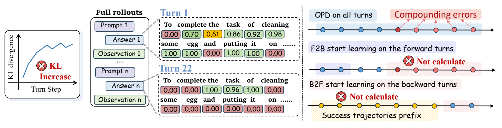
问题和解法放在同一张图 · 点开原图与拆解 ↗ - 图先于正文精修：先用粗图和真实数据定论证，给合作者看；图讲不清，正文先别忙着抛光。
中英例子
Panel (a) shows the observed gap; panel (b) tests the proposed repair.
(a) 展示实际缺口；(b) 检验我们的修补。
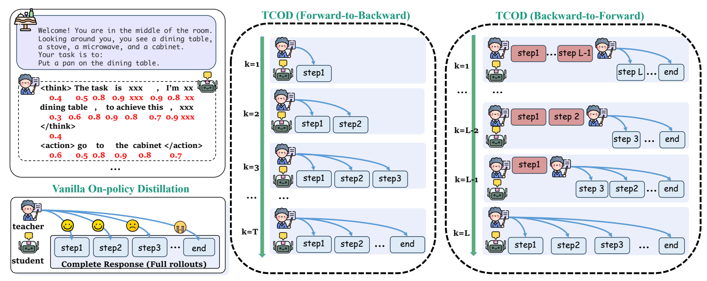
对照图要对齐改动 · 点开原图与拆解 ↗ - 统计图用 Python，概念图用 imagegen：曲线、柱图、散点、热图从真实数据绘制；框架、动机、案例图用 imagegen。别让生成模型自由发挥实验点。
中英例子
Draw the recorded success rates with Python. Generate only the workflow illustration with imagegen.
成功率用 Python 按记录画；imagegen 只生成流程示意。
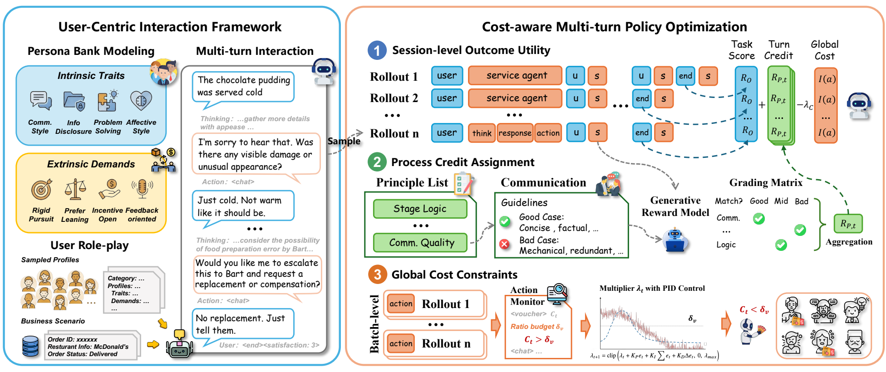
大框先分两块，小框再编号 · 点开原图与拆解 ↗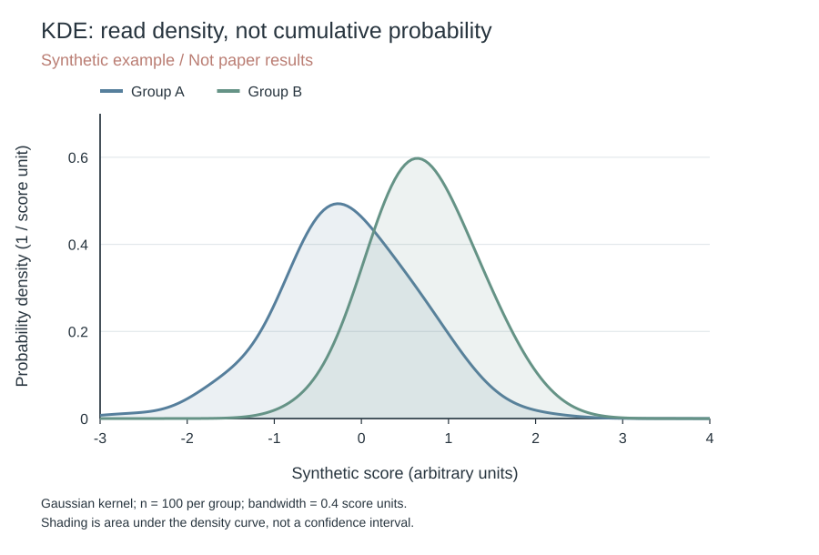
KDE：看哪里密集，不是已经累计了多少 · 点开原图与拆解 ↗ - 先定最终宽度和字号：按会议栏宽起稿；图内同一字体、同一字号，正文至小 2 pt。通栏约 16:9，单栏约 4:3；附录长图可纵排。对照图要对齐改动 · 点开原图与拆解 ↗
中英例子
Use the paper’s column width and body font; remove repeated labels rather than shrinking text.
用论文栏宽和正文字体；删重复标签，不把字缩成蚂蚁。
- 位置就是阅读顺序：主方向统一；同层成组，并行流程按真实依赖分支或汇合，反馈单列支路。每条箭头都能说清谁给谁什么。大框先分两块，小框再编号 · 点开原图与拆解 ↗
中英例子
Retrieved passages enter the generator; the evaluator receives the generated answer.
检索段落送给生成器；生成的回答交给评价器。
- 输入、输出和评分分清：用不同边框或线型区分；评分只供评价时，不要连成模型输入。同类对象全文同色、同样式。大框先分两块，小框再编号 · 点开原图与拆解 ↗
中英例子
Dashed boxes contain model inputs; solid boxes contain responses; dotted boxes contain evaluator-only criteria.
虚线框是模型输入，实线框是回复，点线框是只供评价的判据。
- 白底，少色，颜色有含义：面板尽量白；低饱和色用于分组与关键对照。颜色再配文字、形状或纹理，黑白打印也能认。
中英例子
Blue circles denote the baseline; orange triangles denote our method in every panel.
每个面板都用蓝圆点表示基线，橙三角表示我们的方法。
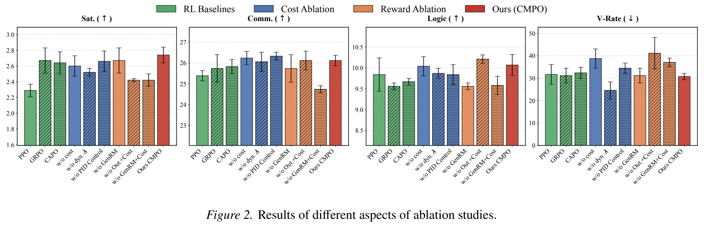
消融：颜色分组，纹理分方法 · 点开原图与拆解 ↗ - 字多就分组，别开彩虹派对：案例按背景、证据、动作、结果排；同类文本同框，重点才高亮。图标就近写对象名。
中英例子
The left column contains evidence; the right column shows the model response and its evaluation.
左栏放证据；右栏放模型回复和评价。
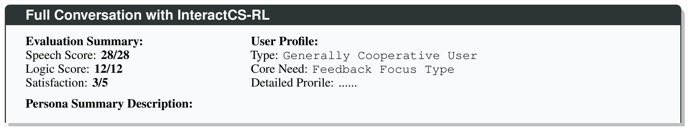
案例：相同信息同框 · 点开原图与拆解 ↗ - 同一内容别反复贴：同一段对话别在动机、方法、附录反复贴；新增分析可复用案例，写清区别。案例解释怎么运行，不替代总体实验。案例：相同信息同框 · 点开原图与拆解 ↗
中英例子
Figure 1 presents the case; Section 4 refers back to Figure 1 without repeating the dialogue.
案例放图 1；第 4 节回引图 1，不再抄一遍对话。
- 多子图必须组成论证：现象、诊断、对照、稳健性按任务排；同对象同颜色，同条件同顺序，相关横轴对齐。
中英例子
The first panel identifies the gap, the second locates it, and the third tests whether it persists.
第一图找差距，第二图找发生位置，第三图检验差距是否仍在。
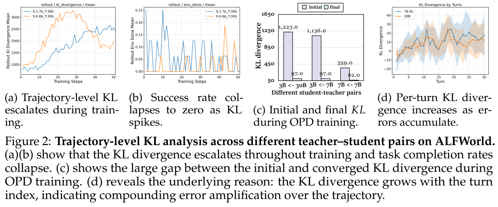
TCOD：四幅图围着一个诊断 · 点开原图与拆解 ↗ - 数据和几何一起核对：查数值、分母、单位、方向、坐标起点、误差含义。相对增益同时给绝对值；均值最高不等于差异显著。
中英例子
Accuracy rises from 60% to 66%: 6 percentage points, or a 10% relative increase.
准确率从 60% 到 66%：增加 6 个百分点，相对提高 10%。
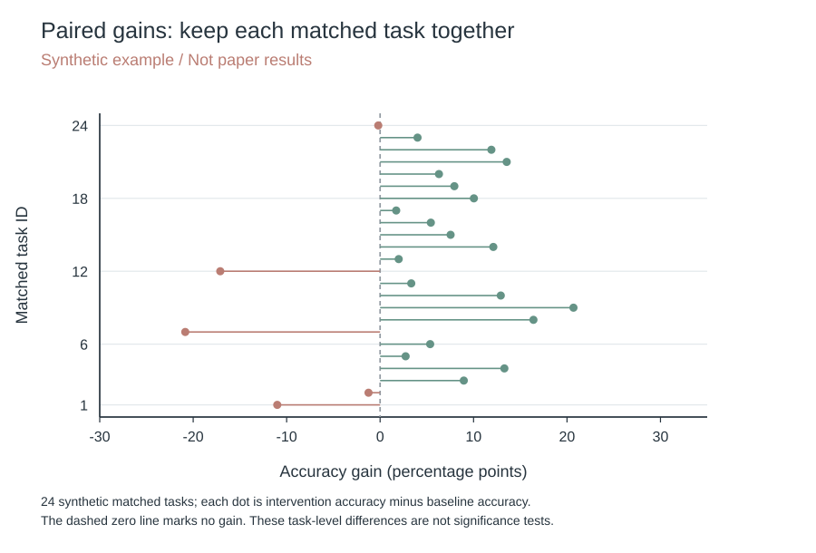
配对增益：同一任务，直接看差了多少 · 点开原图与拆解 ↗ - 图注讲读法和发现：主题句、子图含义、必要口径；缩写、误差、参考线讲清。尽量三行，必要信息优先，不复述整段正文。
中英例子
Error bars show 95% question-level bootstrap intervals; the horizontal line marks zero gain.
误差条表示按题目重采样的 95% 区间；水平线表示零增益。
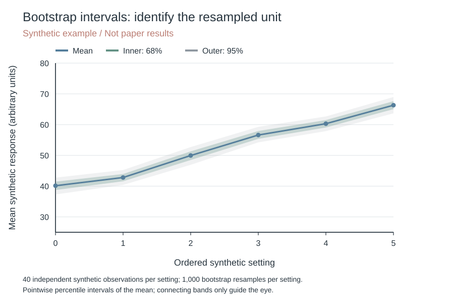
置信带：先认统计单位，再认内外两层 · 点开原图与拆解 ↗ - 交付 PDF，放回论文看：统计图优先矢量；imagegen 图面可配原生 PDF 文字，不能冒充全矢量。最终检查字号、可选文字、裁切、引用顺序与图注。问题和解法放在同一张图 · 点开原图与拆解 ↗
中英例子
Place the figure after its first mention and check all labels at normal reading size.
按首次引用顺序排图，以正常阅读大小检查全部文字。
按图的任务选模板
下面均为教学句式；数值、误差和区间按实际记录填写。
- 摘要图：问题在哪、为什么现有解法不够、我们动哪一步。通常最多 5 个环节，必要对照并排。问题和解法放在同一张图 · 点开原图与拆解 ↗
中英例子
Show the problem, the existing limitation, and the changed step.
展示问题、已有解法的缺口和我们改动的步骤。
- 框架图：输入是什么，经过哪几个模块，每步产物交给谁，输出是什么。旁边走一个可追踪例子。大框先分两块，小框再编号 · 点开原图与拆解 ↗
中英例子
Given a query, retrieve passages, rank evidence, and generate an answer with cited support.
输入问题，检索段落，筛选证据，再生成带来源的回答。
- 案例图：必要背景、有效需求、关键证据、动作、结果、判据；同类信息同框。案例：相同信息同框 · 点开原图与拆解 ↗
中英例子
Separate the request, evidence, response, and evaluation.
把请求、证据、回复和评价分开。
- 主结果与消融：少量方法用点图或柱图；完整方法与删组件版本同顺序、同配色。说明误差的统计单位和计算方法。消融：颜色分组，纹理分方法 · 点开原图与拆解 ↗
中英例子
Compare the complete model with variants that remove one component.
完整方法与只删除一个组件的变体对照。
- 配对增益：同一样本的干预与对照，画差值和零线；写清收益方向与尺度。配对增益：同一任务，直接看差了多少 · 点开原图与拆解 ↗
中英例子
Each point shows the intervention-minus-control accuracy on matched questions.
每个点表示同一批题目上干预相对对照的准确率差。
- 训练或轮次动态：折线只连有序变量；横轴写训练步数或轮次，不把无序方法连成趋势。
中英例子
Track success rate and penalty magnitude against the same training steps.
用相同训练步数同时追踪成功率和惩罚强度。
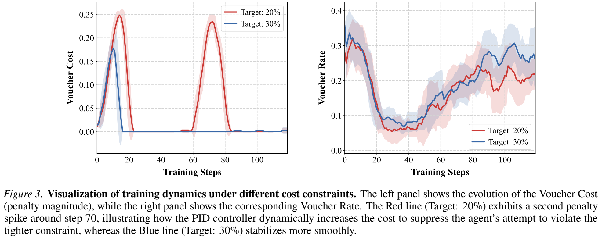
训练动态：控制量和实际行为并排 · 点开原图与拆解 ↗ - KDE：看分布形状：横轴是变量，纵轴是密度；颜色跟组走，均值线补位置，交代样本量和带宽。峰高不是人数，也不是累计比例。KDE：看哪里密集，不是已经累计了多少 · 点开原图与拆解 ↗
中英例子
Compare density shapes with a shared bandwidth; mark sample counts and mean values.
统一带宽比较密度形状，并标样本量与均值。
- ECDF：看阈值以下有多少：横轴取阈值，纵轴直接读累计比例；同一坐标比两组，阶梯从 0 到 1。想读“多少样本低于 10”，别去量 KDE 的峰。
中英例子
At a threshold of 10, the ECDF gives the fraction of observations at or below 10.
阈值取 10 时，ECDF 直接给出不超过 10 的样本比例。
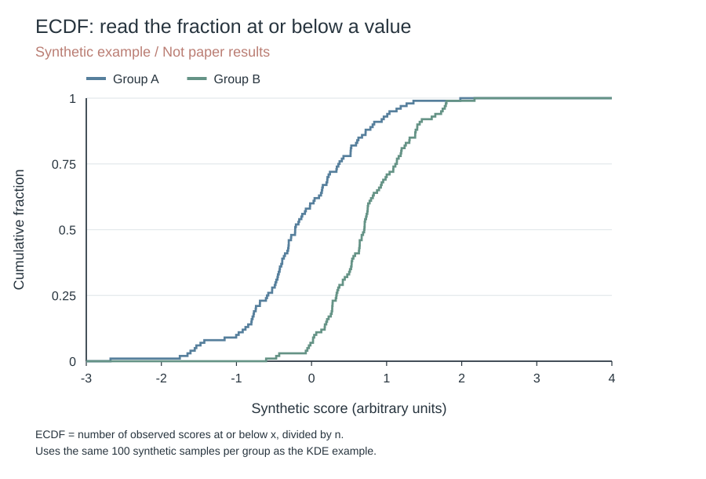
ECDF：直接读有多少样本不超过这个值 · 点开原图与拆解 ↗ - 热图：条件乘方法，统一色标；正负增益以零为中点，缺测留空并说明。
中英例子
Use one shared color scale for all conditions and mark missing cells.
全部条件使用统一色标，缺测单元明确标记。
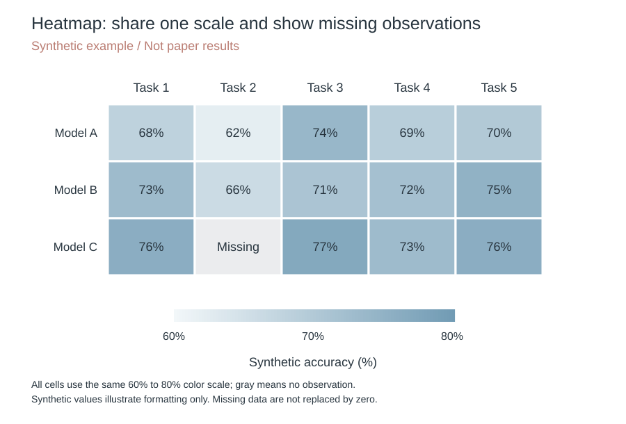
热图：一个色标，缺测直接空出来 · 点开原图与拆解 ↗ - PCA：把高维关系投到二维：说明输入特征、标准化、每轴解释方差。颜色或轨迹分别代表什么写清；分得开不等于泛化好。PaCMAP、t-SNE 也别改名叫 PCA。
中英例子
Project standardized features onto two principal components and report the variance explained by each axis.
把标准化特征投到两个主成分，并报告每根轴的解释方差。
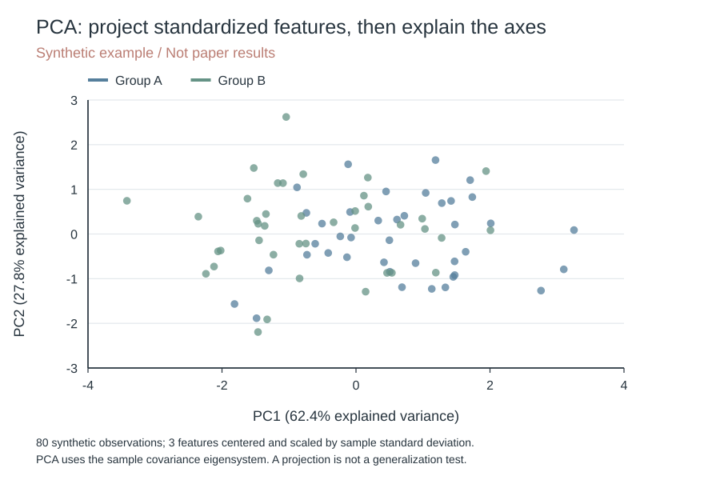
PCA：先定义输入，再看二维投影 · 点开原图与拆解 ↗ - 雷达图：多指标逐轴读：每轴一个指标，写尺度、归一化和好坏方向；颜色再配点形。量纲不同别比面积，轴换个顺序，面积也会换。
中英例子
Compare normalized metrics spoke by spoke; polygon area is not an overall score.
沿每根轴比较归一化指标；多边形面积不是综合分数。
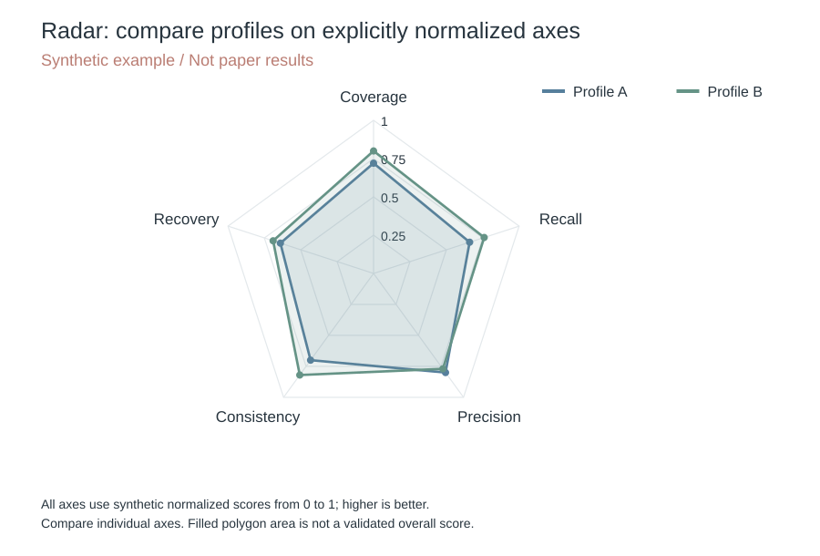
雷达：看各项轮廓，别拿面积当总分 · 点开原图与拆解 ↗ - 成本性能图：每点是一个实际配置；在线与离线成本分开，写单位和好坏方向。连接前沿不意味着有中间配置。
中英例子
Plot measured accuracy against online cost; report one-time training cost separately.
实测准确率对照在线成本；一次性训练成本另报。
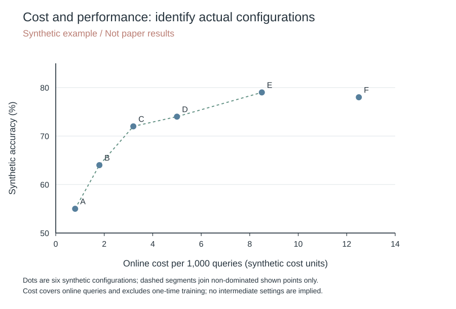
成本性能：每个点对应一项明确配置 · 点开原图与拆解 ↗ - 数据集分布：统计单位、样本量、类别和分母先写清；同一图别混案例数、回复数和判据数。重点是覆盖了什么，不是圆画得多圆。
中英例子
Count unique cases by domain; report response counts separately.
按领域统计独立案例数；回复数量另报。
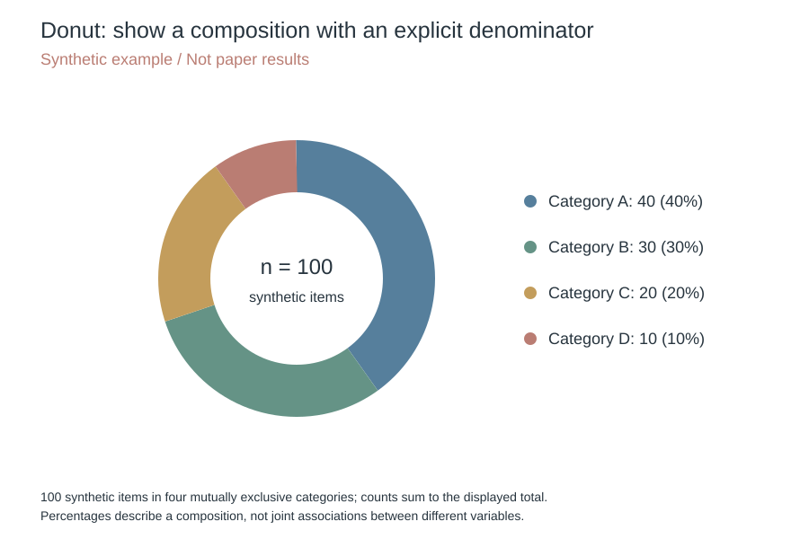
环图：组成比例，先说总数 · 点开原图与拆解 ↗ - 置信带：按实际重采样或模型计算区间，写清区间类型和置信水平。同一估计的嵌套区间才可比较覆盖范围；不同样本量、方差也会改变带宽。置信带：先认统计单位，再认内外两层 · 点开原图与拆解 ↗
中英例子
Nested bands show the estimated 68% and 95% intervals under the stated procedure.
嵌套色带表示按所述方法估计的 68% 和 95% 区间。
- 饼图、环图与圆环排名：饼图只画互斥且组成整体的比例；圆环柱图可画排名，极值相邻只是环形排序，不是变量关系。要读精确差值，横向条图更方便。环图：组成比例，先说总数 · 点开原图与拆解 ↗
中英例子
Use slices for a composition and ordered bars for a ranking.
组成比例用扇区；排名用有顺序的柱条。
- 二维增益与九宫格：两轴分别写指标、单位和好坏方向；差值图以零线分区。九宫格用于两个有序因素的组合，别为凑九格补数据。
中英例子
With both gains defined as higher is better, the upper-right quadrant shows improvements on both metrics.
两个增益都定义为越高越好时，右上象限表示两项指标都改善。
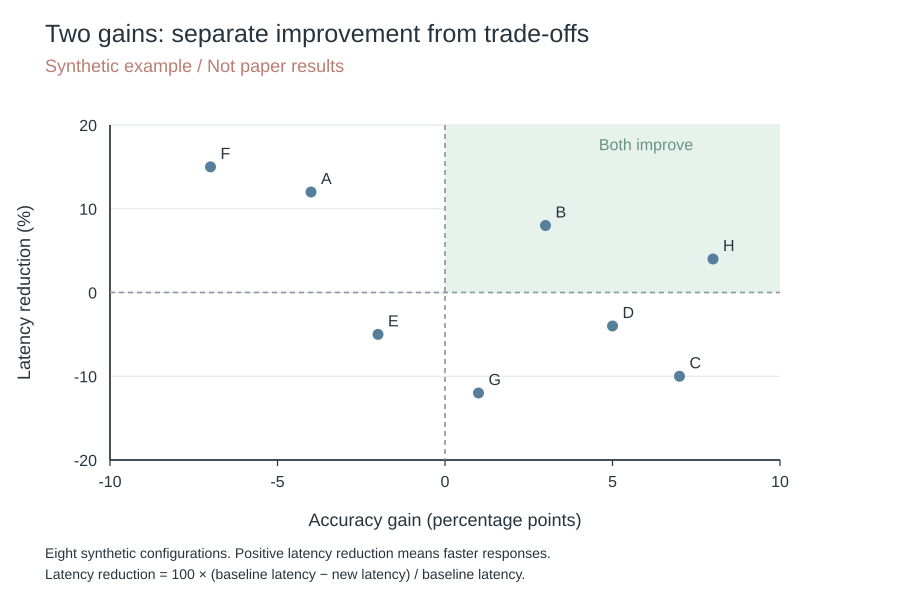
二维增益：右上都改善，其他象限看取舍 · 点开原图与拆解 ↗
图例库：原图与逐图拆解
同类图放一起；点击缩略图或展开目录看原图。
动机与框架 · 3 张图
问题和解法放在同一张图
左边画误差随轮次的示意，中间放大回复细节，右边对照三种训练范围；先看到问题，再看到改哪一步。

English 与拆解
A schematic turn-wise divergence trend appears on the left, enlarged response details in the center, and three training ranges on the right, linking the problem to the changed step.
颜色、文本框和时间线分别承担不同信息，关键对照沿同一个方向阅读。
示意曲线不等于实测数据；数值块代表什么、为什么某些轮次不计算，须回到原图注解释。
对照图要对齐改动
基线和两种课程共用步骤框与师生图标，再沿轮数展开；读者直接看训练覆盖哪一段，不必重读三套流程。

English 与拆解
The baseline and two curricula reuse step boxes and teacher–student icons, then unfold across rounds; aligned structures reveal which segment each training strategy covers.
共享图形语法，只有变动位置需要额外解释；比三个完全不同的布局更容易比较。
步骤色彩与轮数标签要在原图注中定义，图标本身不解释损失或训练目标。
大框先分两块，小框再编号
先分交互生成和策略优化两块，再编号结果、过程、成本三种信号；旁边的对话走一遍流程。

English 与拆解
Group interaction generation and policy optimization first, then number the outcome, process, and cost signals. The dialogue traces an instance through the workflow.
分组讲职责，箭头讲信息流，编号讲步骤。
原图用公开论文中的对话示例；自己的案例须处理身份信息，并区分输入、输出与评分信号。
诊断与训练动态 · 4 张图
效果曲线旁边放机制曲线
成功率和 KL 共用训练步数，效果与诊断可以就近对照；曲线一起变，不等于已经证明因果。

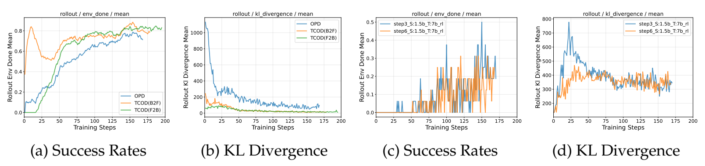
English 与拆解
Performance and KL share a training axis, placing the outcome beside its diagnostic. Co-movement alone does not establish causation.
同一模型配一对面板；不同量各用自己的纵轴。
原图图例用了训练日志简写，自己的论文应换成可直接识别的模型和条件。
辅助指标分开画
轮数、优势、长度、损失各占一格；共用训练步数，不同单位不挤在一根纵轴上。

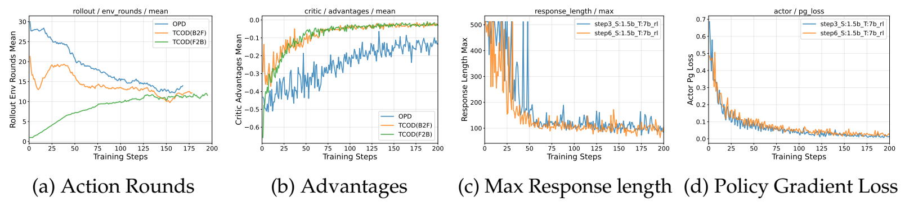
English 与拆解
Turns, advantage, length, and loss use separate panels with a shared training axis. Different units do not compete on one y-axis.
按同一时间点横向核对过程指标。
这是训练诊断；损失下降本身不能替代最终任务实验。
TCOD：四幅图围着一个诊断
每个师生组合紧挨着放 Initial／final 两根柱子，颜色区分阶段，柱顶数字省掉来回读轴。

English 与拆解
Initial and final bars sit together for each student–teacher pair; colors identify stages and value labels reduce axis lookup.
横
轴
箭
头
写
出
配
对
方
向
。
纵
轴
从
5
0
起
而
非
0
，
能
读
标
注
数
值
，
但
不
能
直
接
以
柱
高
判
断
初
始
值
是
最
终
值
的
多
少
倍
。
原
件
含
水
印
。
训练动态：控制量和实际行为并排
左边画成本，右边画使用率，红蓝固定对应两种目标；共用训练步数，把两条动态放到一起读。

English 与拆解
Cost and usage rate appear side by side, with red and blue consistently identifying two targets along the same training-step axis.
图
中
带
半
透
明
色
带
，
但
此
图
面
未
说
明
它
是
方
差
、
标
准
误
还
是
置
信
区
间
，
不
能
自
行
补
名
。
原
件
跨
两
页
并
含
水
印
，
公
开
应
回
到
已
核
对
的
单
独
原
图
。
消融与资源成本 · 2 张图
少量方法，用柱图直接比
两个任务各一幅图，方法顺序一致，柱顶给小时数。想讲省算力，就把时间写出来。

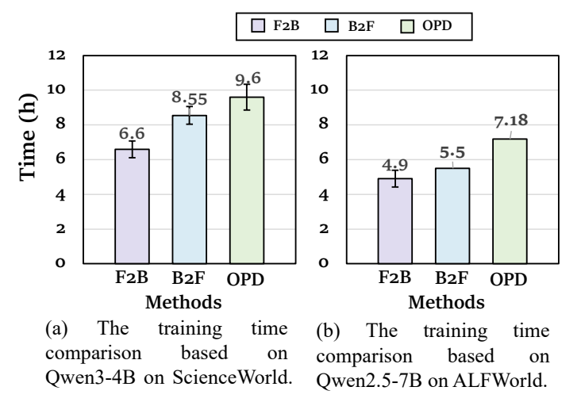
English 与拆解
Use one panel per task, a consistent method order, and measured hours above the bars. An efficiency claim needs a resource measurement.
单位是训练小时，不是在线推理延迟。比较时另交代硬件和训练条件。
原图误差线的含义没有给全，不替作者猜重复次数或置信水平。
消融：颜色分组，纹理分方法
颜色分方法族，实色、斜线和点纹再分组内方案，四个面板共用图例，误差棒也留在柱顶。

English 与拆解
Colors identify method families, solid fills and patterns distinguish variants, and four panels share a legend while retaining error bars.
实
际
图
面
为
I
n
t
e
r
a
c
t
C
S
-
R
L
F
i
g
u
r
e
2
。
指
标
标
题
的
↑
／
↓
提
醒
比
较
方
向
；
图
面
未
定
义
误
差
棒
具
体
含
义
，
不
能
自
行
称
为
标
准
差
或
置
信
区
间
。
前
三
面
板
非
零
起
点
，
不
能
以
柱
高
读
倍
数
。
原
件
含
水
印
。
KDE 密度分布 · 1 张图
KDE：看哪里密集，不是已经累计了多少
同一坐标对照两组模拟分数，曲线越高说明该处更密集；浅色填充只是曲线下面积。

English 与拆解
The two synthetic groups share axes; taller curves indicate greater local density, and shading marks area under the curve.
每组100个模拟样本，使用高斯核和0.4的固定带宽；纵轴是密度。
曲线面积约为1，曲线高度不是累计比例；阴影不代表置信区间。
来源：可复现教学绘图代码
ECDF 累计分布 · 1 张图
ECDF：直接读有多少样本不超过这个值
阶梯线在每个样本处上升，纵轴是已累计的样本比例；不用把平滑密度误认成覆盖率。

English 与拆解
Each observed score raises the step curve, and the vertical axis shows the cumulative sample fraction.
与KDE使用同一批模拟样本，累计比例按样本计数直接计算。
在某个阈值比较两条线，读的是不超过阈值的比例，不是该处密度。
来源：可复现教学绘图代码
PCA / 空间嵌入 · 1 张图
PCA：先定义输入，再看二维投影
两组模拟样本的三个标准化特征投到前两主成分，轴上直接给真实计算的解释方差。

English 与拆解
Three standardized features from two synthetic groups are projected onto the first two principal components, with computed explained variance on the axes.
80个样本，三维特征先中心化，再除以样本标准差；主成分由协方差矩阵求得。
颜色是原分组，PCA没有使用分组训练；分得开不等于分类准确或泛化成立。
来源：可复现教学绘图代码
雷达与多指标 · 1 张图
雷达：看各项轮廓，别拿面积当总分
每根轴都是越高越好的0到1模拟分数，颜色贯穿点和线；逐项比较，比比较整块面积更有意义。

English 与拆解
Every axis is a synthetic 0–1 score with higher values preferred; consistent point and line colors support axis-by-axis comparisons.
各轴同尺度、同方向，中心是0，外圈是1；真实图必须先说明如何归一化。
这张图没有定义综合分数，不能把多边形面积当作经过验证的总能力。
来源：可复现教学绘图代码
置信带 · 1 张图
置信带：先认统计单位，再认内外两层
深线是模拟样本均值，内层是68%、外层是95%的逐点bootstrap区间；宽度有计算依据，不是调个透明度。

English 与拆解
The line shows synthetic sample means; the inner and outer bands are computed 68% and 95% pointwise bootstrap percentile intervals.
每个设置有40个独立模拟观测，按观测有放回重采样1000次，再取均值分位数。
区间针对各个均值，不是覆盖整个函数的同时置信带，也不表示样本本身落在带内。
来源：可复现教学绘图代码
配对增益 · 1 张图
配对增益：同一任务，直接看差了多少
每点是一项模拟任务的干预减基线，零线右侧提高、左侧下降；既显示收益，也留下失败。

English 与拆解
Each point is the intervention-minus-baseline difference for a synthetic matched task; points right of zero improve, while points left of zero decline.
差值单位是百分点，不能写成相对百分比；每个任务保留自己的配对关系。
散点显示任务差异，没有检验显著性，也没有替代总体汇总。
来源：可复现教学绘图代码
热图 · 1 张图
热图：一个色标，缺测直接空出来
模型与任务交叉排，颜色和格内数值用同一尺度；缺测格单独写Missing，别伪装成零分。

English 与拆解
Models and tasks share one color scale with values printed in each cell; the missing observation is labeled separately rather than replaced by zero.
全图同一60%到80%色标，不能每行各自归一化后继续比较颜色。
格内标数值，帮助读者在不辨色时仍能比较；灰色只表示缺测。
来源：可复现教学绘图代码
成本性能图 · 1 张图
成本性能：每个点对应一项明确配置
横轴是模拟在线成本，纵轴是准确率，每个字母是一项配置；虚线只连接已画出的有效取舍点。

English 与拆解
Online cost and accuracy form the axes, and each letter identifies one synthetic configuration; dashed segments only connect the displayed non-dominated points.
成本按每1000次查询计，不混入一次性训练成本；真实图要另外报告后者。
连接点是阅读辅助，不证明中间配置存在，也不代表连续最优函数。
来源：可复现教学绘图代码
饼图与环图 · 1 张图
环图：组成比例，先说总数
中心写100个模拟对象，旁边同时列数量和比例；四类互斥，所有扇区合起来才是一个整体。

English 与拆解
The center states 100 synthetic items and the legend lists counts and percentages; four mutually exclusive categories form the whole.
先给统计单位和分母，数量40、30、20、10真实相加为100。
环图适合看构成；精确比较相近比例，数值或横向条图更直接。
来源：可复现教学绘图代码
二维增益 · 1 张图
二维增益：右上都改善，其他象限看取舍
准确率增益向右更好，延迟减少向上更好；零线分四区，右上是两项同时改善。

English 与拆解
Accuracy gains improve to the right and latency reduction improves upward; zero lines separate the quadrants, with joint improvements in the upper right.
横轴是百分点，纵轴是相对延迟减少百分比，两种单位明确分开。
每个点是构造的配置，不是论文结果；落在哪个象限只说明这两项指标的关系。
来源：可复现教学绘图代码
私藏图：好在哪里，怎么借鉴
先看原图，再看点评。借信息组织，不照搬别人的结果。
像 UI 一样分组；相同信息同框，避免每个字段都开气泡。
案例摘要框：先分信息，再排字
公开论文图例 · 点评为本指南整理
这是原论文案例摘要，不是完整对话，也不是新收集的真实用户记录。

The header names the case; two columns separate evaluation scores from the simulated user profile. The dialogue continues on later pages.
深色标题交代案例，浅底分栏列出评价和用户设定；完整对话接在后页。
看图与点评
- 作者笔记强调像UI一样整洁：相同信息放一起，同类信息用同样的框，颜色只强调重点。
- 左栏是三个评价结果，右栏是用户设定；标题、字段和值分层，不必把每个字段塞进独立气泡。
- 字多时先分组、删重复、留白。放回双栏PDF后仍须检查字号；网页放大看清不等于论文里看清。
来源：Ning Gao et al. · Reinforcing Real-world Service Agents (arXiv v1)；Appendix B.1，PDF 第13页；仅截取案例摘要框；公开 arXiv 版本；图与原 PDF 核对；公开预印本；不以项目笔记中的会议标记认定录用
原文／图片许可：Ning Gao et al., Reinforcing Real-world Service Agents, arXiv:2602.22697v1. CC BY 4.0（https://creativecommons.org/licenses/by/4.0/）。从原 PDF 裁切；图形、标签和数据未改。
更多参考图，带着问题看
原文图页与点评 · 9 项
15-minute cities 图 1：地图、分布、多维散点 ↗
地图定位差异，累计分布看人口覆盖，散点把城市放到同一坐标系。横轴是人口加权平均邻近时间，纵轴是 15 分钟覆盖人口比例；颜色是 Gini，圆大小是人口密度。位置、颜色、大小各讲一件事。灰区是受概率约束的不可达组合，不是“平均不到 15 分钟就人人可达”。
English 与拆解
The map locates local gaps; the cumulative distribution measures population coverage. In the scatter plot, position encodes mean proximity time and 15-minute coverage, color encodes the Gini index, and size encodes population density.
适合“总体分布加个体差异”的多维呈现。四种编码有四种明确含义，再多就该拆图。
Bruno et al., A universal framework for inclusive 15-minute cities, Nature Cities (2024), DOI 10.1038/s44284-024-00119-4; arXiv:2408.03794v1
只链接原图，不重托管。arXiv 非独占分发许可。
15-minute cities 图 2：算法、排名、前后变化 ↗
先画人口导向的 POI 重分配，再给城市迁移比例排名，最后用罗马的地图和直方图看前后变化。POI 是服务设施点；(b) 排的是现有 POI 的迁移比例，不是新增设施数。
English 与拆解
The panels progress from the redistribution rule to relocation rates and then to before–after spatial and distributional changes. Panel (b) ranks relocated existing POIs, not newly built facilities.
三个层次回答“怎么做、改动多大、改到了哪里”。排名负责总体差异，地图负责空间位置，直方图负责分布，谁也不用兼职。
Bruno et al., A universal framework for inclusive 15-minute cities, Nature Cities (2024), DOI 10.1038/s44284-024-00119-4; arXiv:2408.03794v1
只链接原图，不重托管。arXiv 非独占分发许可。
OneReason 图 12：对照策略的改动位置 ↗
相同结构对齐；改动位置突出，符号在图注解释。保留链接读图，不复制整图。
English 与拆解
Align the strategies and highlight where their optimization rules differ.
KDE：OneReason 图 6 ↗
四个领域并排，两个方法保持同色；淡填充保留重叠，虚线与均值标注把位置变化说清，曲线不用自己兼职字幕。
English 与拆解
Four domains use the same method colors. Transparent fills preserve overlap, while dashed mean lines and labels make location shifts explicit.
四个领域沿用同色方法与均值线。横轴是 Margin，纵轴是密度；不是累计概率。是否表示任务收益，另看原文对 Margin 的定义。
OneRec Team, OneReason Technical Report, arXiv:2606.06260v1, Fig. 6
只链接原图，不重托管。该版本采用 arXiv 非独占分发许可。
投影：life2vec 图 4，PaCMAP 与局部放大 ↗
中间给完整嵌入空间，两侧放大选定区域，同一批点分别按性别、年龄、真实标签着色；位置保持，颜色换问题。
English 与拆解
The central embedding provides the full view, while selected regions are enlarged and recolored by sex, age, and true labels. Fixed positions make attribute comparisons traceable.
原图明确使用 PaCMAP；保持点的位置、分别换属性颜色，才能追踪同一批点。投影和 TCAV 是不同证据，不能合成因果结论。
Savcisens et al., Nature Computational Science 4, 43–56 (2024), Fig. 4, DOI 10.1038/s43588-023-00573-5
只链接出版社图页；期刊版本未标明可转载的 CC 许可。
OneReason 图 1：把模型身份和结果放一起 ↗
左侧雷达看多任务表现，右侧成对柱图看推理和训练数据的作用；颜色、纹理、数值分工，提升与下降都直接标出。
English 与拆解
The radar summarizes performance across tasks, while paired bars compare thinking and training-data conditions; colors, hatching, and printed values distinguish the comparisons and expose both gains and declines.
雷达各轴的量纲与归一化必须定义，不能仅凭面积判断综合能力。 柱顶相对增幅与原分数同时保留；百分比不是百分点，下降项不能藏起来。
OneRec Team, OneReason Technical Report, arXiv:2606.06260v1, PDF p. 1
只链接原图，不重托管。该版本采用 arXiv 非独占分发许可。
OneReason 图 7：颜色跟着流程职责走 ↗
两边保持相同网络层次，只换雪花与火焰标记；第一阶段和后续阶段分别更新哪些参数，一眼能对上。
English 与拆解
The two stages keep the same network-layer layout and change snowflake and flame markers to show which parameters are frozen or trained.
图标要有明确图例；颜色是辅助，不能只让读者猜蓝色是冻结。 同一层在两边位置一致，适合解释训练范围变化，不说明阶段间性能差异。
OneRec Team, OneReason Technical Report, arXiv:2606.06260v1, PDF p. 19
只链接原图，不重托管。该版本采用 arXiv 非独占分发许可。
OneReason 图 9：分布与多维特征分开读 ↗
左边堆叠条保留五档评分比例，右边雷达概括五项均分；先看分布，再看轮廓。
English 与拆解
Stacked bars retain the five rating proportions, and the radar chart summarizes the five mean scores: distribution first, profile second.
两 面 板 用 同 一 组 维 度 对 应 。 雷 达 上 的 数 值 标 签 减 少 估 读 ， 堆 叠 条 避 免 均 值 掩 盖 不 同 评 分 构 成 ； 不 要 用 雷 达 面 积 代 替 具 体 分 数 。
OneRec Team, OneReason Technical Report, arXiv:2606.06260v1, PDF p. 29
只链接原图，不重托管。该版本采用 arXiv 非独占分发许可。
ShoppingBench 图 1、2：任务概览与案例层级 ↗
左边按请求、工具调用、观察和结果走流程，右边拆产品、优惠券和预算；高亮颜色贯穿两边，读者能把需求对到检查。 上面分产品采样和字段采样，下面把提示模板与生成指令逐行对齐；同一类任务同色，读者看得出结果从哪来。
English 与拆解
The left side follows the request, tool calls, observations, and result; the right side decomposes product, voucher, and budget constraints, with matching highlights connecting requirements to checks. Product sampling and field sampling occupy the top row; prompt templates align with generated instructions below, and consistent task colors make the construction path traceable.
背景、需求、动作、反馈分层；颜色和高亮有角色，不靠密集箭头补逻辑。
ShoppingBench: A Real-World Intent-Grounded Shopping Benchmark for LLM-based Agents, AAAI 2026, Fig. 1–2
只链接正式论文页，不重托管原图。
让 Codex 开始画图
阅读我的论文、绘图 skill 和参考图。先为每张图写一句任务：它解释哪个问题、比较什么、支持哪项贡献。统计图用真实数据和 Python；概念图用 imagegen，先列清输入、模块、箭头、输出，再成图。按会议最终栏宽起稿，正文同族字体、正文至小 2 pt，白底低饱和，同对象同色，所有符号可解释。保持原数据、语义和拓扑，不改数值、不补误差。先给粗图和图注，核对后精修；统计图交付文字可选 PDF；概念图面叠加原生 PDF 文字，并放回论文检查。Figure prompt · English
Read my paper, figure instructions, and reference images. State one purpose for each figure: the question, comparison, and contribution. Use actual data and Python for quantitative plots; use imagegen for conceptual figures after identifying inputs, operations, arrows, and outputs. Work at the final venue column width, with the paper font and type no larger than body text and at most 2 pt smaller. Use a light background, consistent visual encoding, and explained symbols. Preserve the data and information flow. Show rough figures and captions before refinement, then deliver a PDF with selectable text and inspect the inserted figures in the paper.3. Refine：先审逻辑，再磨句子
全文通用要求放前面，章节要求放各节。模板中的【】填自己的研究；下面的规范来自作者写作 skill，会议硬性格式看官方指南。
全文先守这些要求
下面管整篇文章；章节模板在后面。语言偏好是本指南的默认写法，不能替代会议规定。
语言：短句也得有内容
- 少夸，多写做了什么：把 powerful、comprehensive 这种空评价换成具体动作。优势需要对象和依据，不能全靠气势。
中英改写与拆解
少夸，多写做了什么
把 powerful、comprehensive 这种空评价换成具体动作。优势需要对象和依据，不能全靠气势。
教学改写：假设已有对应设计或比较，非论文原文与实测结果。
通用表达要求
改前 · English
Our method is powerful, comprehensive, and highly innovative.
我们的方法强大、全面，而且高度创新。
改后 · 逐句拆解
The method links source quotes to constraints from earlier dialogue turns.
该方法将来源摘句与前文对话约束关联。
第 1 句：具体操作直接告诉读者改了什么。
- 一句一个主要判断：长句按真实处理拆开，后句继续用前句的产物。短不是碎，主语和动作要完整。
中英改写与拆解
一句一个主要判断
长句按真实处理拆开，后句继续用前句的产物。短不是碎，主语和动作要完整。
教学改写：假设已有对应设计或比较，非论文原文与实测结果。
PaperBank 短句偏好；实际行长按最终 PDF 检查
改前 · English
The retriever selects relevant passages, which are organized into notes that are subsequently supplied to the generator so that the generator can produce cited answers.
检索器选出相关片段，片段被组织成笔记，随后提供给生成器，以便生成器产生带引用的回答。
改后 · 逐句拆解
The retriever selects relevant passages.
检索器选出相关片段。
第 1 句：第一步：对象和动作明确。
We organize these passages into evidence notes.
我们将这些片段组织成证据笔记。
第 2 句：these passages 接住上一句的具体产物。
The generator uses the notes to produce an answer with citations.
生成器使用这些笔记，产生带引用的回答。
第 3 句：继续接住笔记，落到最终输出。
- 别用符号假装写了句话：正文用完整自然语言，别拿加号、箭头或破折号替代关系。公式、代码和图内流程符号按实际用途保留。
中英改写与拆解
别用符号假装写了句话
正文用完整自然语言，别拿加号、箭头或破折号替代关系。公式、代码和图内流程符号按实际用途保留。
教学改写：假设已有对应设计或比较，非论文原文与实测结果。
通用表达要求
改前 · English
Notes + constraints → better answers.
笔记＋约束→更好的回答。
改后 · 逐句拆解
The notes retain earlier constraints.
笔记保留前文约束。
第 1 句：先写实际处理。
We test whether retaining these constraints improves citation support.
我们检验保留这些约束是否提高引用支持率。
第 2 句：把想验证的作用写成问题，不能让箭头替你证明因果。
- 相近小节，篇幅别差太远：任务量相近的小节，解释篇幅尽量接近；明显更长先查重复。确实复杂就按问题分段，不缩字号和间距。
中英改写与拆解
相近小节，篇幅别差太远
任务量相近的小节，解释篇幅尽量接近；明显更长先查重复。确实复杂就按问题分段，不缩字号和间距。
教学句式，非论文原文或实测记录。
PaperBank 篇幅与排版要求；各节内容需要优先
We separate evidence selection from answer generation because the two stages use different inputs.
证据筛选与回答生成使用不同输入，因此分别解释两个阶段。
第 1 句：按真实职责分段，复杂才多写；不用统一字数删除必要解释。
术语：第一次见，就让人看懂
- 术语后面立刻接人话：必要名词第一次出现就解释对象和用途。摘要、引言、实验分别检查，不能指望读者全篇背诵。
中英改写与拆解
术语后面立刻接人话
必要名词第一次出现就解释对象和用途。摘要、引言、实验分别检查，不能指望读者全篇背诵。
教学改写：假设已有对应设计或比较，非论文原文与实测结果。
通用表达要求
改前 · English
We construct evidence notes.
我们构建证据笔记。
改后 · 逐句拆解
We construct evidence notes that link source quotes to active dialogue constraints.
我们构建证据笔记，用于将来源摘句与仍需满足的对话约束关联。
第 1 句：读完这一句就知道笔记里面是什么、为什么要构建。
- 符号写清对象、来源和下标：不是给个字母就叫定义。说明这个量来自哪里、怎么算、给谁用；没用到的符号直接删。
中英改写与拆解
符号写清对象、来源和下标
不是给个字母就叫定义。说明这个量来自哪里、怎么算、给谁用；没用到的符号直接删。
教学改写：假设已有对应设计或比较，非论文原文与实测结果。
通用表达要求
改前 · English
We use r to update the model.
我们用 r 更新模型。
改后 · 逐句拆解
For question q, r_q is the citation-support score of the generated answer.
对问题 q，r_q 是生成回答的引用支持得分。
第 1 句：交代哪个样本、哪个产物、什么指标。
We use this score as the terminal reward for the sampled answer.
我们将该得分用作这条采样回答的终端奖励。
第 2 句：说明信号在哪个阶段作用于哪个对象；真实算法另有条件时补上。
- 对象名字别偷偷换：同一对象全文统一称呼。它、这些、相关信号有多个可能指代时，直接换成对象名。
中英改写与拆解
对象名字别偷偷换
同一对象全文统一称呼。它、这些、相关信号有多个可能指代时，直接换成对象名。
教学改写：假设已有对应设计或比较，非论文原文与实测结果。
通用要求：指代清楚时保留代词，歧义时换成具体对象。
改前 · English
The retriever returns passages and notes. The generator uses them.
检索器返回片段和笔记。生成器使用它们。
改后 · 逐句拆解
The retriever returns passages and evidence notes.
检索器返回片段和证据笔记。
第 1 句：先列清两种不同产物。
The generator uses the evidence notes.
生成器使用证据笔记。
第 2 句：读者不必猜到底是片段、笔记还是两者。
- 好词要有依据，不要全删光：tailored、expert-confirmed、de-identified 这种词，客观又有贡献感，有依据就用。一个换一个，不增词数。
中英改写与拆解
好词要有依据，不要全删光
tailored、expert-confirmed、de-identified 这种词，客观又有贡献感，有依据就用。一个换一个，不增词数。
教学改写：假设已有对应设计或比较，非论文原文与实测结果。
PaperBank 贡献措辞偏好；示例词不是跨论文固定词库
改前 · English
We use personalized prompts for each role.
我们为每个角色使用个性化提示词。
改后 · 逐句拆解
We use tailored prompts for each role.
我们为每个角色使用专门设计的提示词。
第 1 句：如果提示词确实针对角色设计，tailored 简短而直接；没有更好词时保留原词。
- 有记忆点的名字，后面必须解释：有依据的发现可取短名，优先四个英文词以内。名字后直接讲观察，不用另一个陌生术语解释它。
中英改写与拆解
有记忆点的名字，后面必须解释
有依据的发现可取短名，优先四个英文词以内。名字后直接讲观察，不用另一个陌生术语解释它。
教学改写：假设已有对应设计或比较，非论文原文与实测结果。
PaperBank 命名与粗斜体偏好；不为了凑贡献创造标签
改前 · English
We identify a Citation Support Gap.
我们发现引用支持差距。
改后 · 逐句拆解
We identify a Citation Support Gap.
我们发现引用支持差距。
第 1 句：教学名称；确实有该比较才可作为发现，首次可用粗斜体强调。
Answers cite sources, but some answer claims are unsupported by those sources.
回答虽然列出来源，部分断言却得不到这些来源支持。
第 2 句：立即说明差距的两端，不把缺乏支持误写成真实断言必然为假。
逻辑：每句话接住一个具体对象
- 不是加 Therefore 就有逻辑：后一动作要处理前一句留下的问题。每句检查：承接哪个对象，新增什么判断。
中英改写与拆解
不是加 Therefore 就有逻辑
后一动作要处理前一句留下的问题。每句检查：承接哪个对象，新增什么判断。
教学改写：假设已有对应设计或比较，非论文原文与实测结果。
通用表达要求
改前 · English
Retrieved passages are relevant. Therefore, we use evidence notes.
检索片段具有相关性。因此，我们使用证据笔记。
改后 · 逐句拆解
Relevant passages may conflict with constraints stated in earlier turns.
相关片段仍可能与前文提出的约束冲突。
第 1 句：前一句产生实际未解决的问题。
We therefore link each evidence note to the relevant active constraints.
因此，我们将每条证据笔记与相关的有效约束关联。
第 2 句：方案真正接住约束冲突，Therefore 才有前提。
- 连接词按真实关系选：转折写 However；因果有前提才写 Therefore；两个并列事实不必装出冲突。
中英改写与拆解
连接词按真实关系选
转折写 However；因果有前提才写 Therefore；两个并列事实不必装出冲突。
教学改写：假设已有对应设计或比较，非论文原文与实测结果。
通用表达要求
改前 · English
Both systems use the same model. However, both systems use the same evidence-context budget.
两套系统使用同一模型。然而，它们使用同一证据上下文预算。
改后 · 逐句拆解
Both systems use the same model and evidence-context budget.
两套系统使用相同的模型与证据上下文预算。
第 1 句：两个共同条件可以直接并列，However 在这里没有转折。
- 章际衔接要有产物：开头说明本节接哪项输入，结尾说明产物怎样进入下一步。“下面介绍下一节”没有信息。
中英改写与拆解
章际衔接要有产物
开头说明本节接哪项输入，结尾说明产物怎样进入下一步。“下面介绍下一节”没有信息。
教学改写：假设已有对应设计或比较，非论文原文与实测结果。
通用表达要求
改前 · English
Next, we introduce the next module.
接下来，我们介绍下一个模块。
改后 · 逐句拆解
We next organize the selected source quotes into evidence notes.
接下来，我们将已筛选的来源摘句组织成证据笔记。
第 1 句：读者知道下一步针对什么、将产生什么。
- 问题、方案、证据要对上：引言说缺证据，方法就得处理证据，实验也得检查证据。别写到实验突然只谈运行速度。
中英改写与拆解
问题、方案、证据要对上
引言说缺证据，方法就得处理证据，实验也得检查证据。别写到实验突然只谈运行速度。
教学改写：假设已有对应设计或比较，非论文原文与实测结果。
通用表达要求
改前 · English
The problem is missing evidence. The method reformats answers. The experiment reports runtime.
问题是缺少证据。方法调整回答格式。实验只报告运行时间。
改后 · 逐句拆解
The problem is incomplete coverage of supporting evidence.
问题是支持证据覆盖不完整。
第 1 句：困难落到可检验的性质。
The method expands the set of relevant evidence segments.
方法扩大相关证据片段的覆盖。
第 2 句：设计直接处理该困难。
The experiment evaluates evidence recall and citation support, together with inference cost.
实验评价证据召回与引用支持，同时报告推理成本。
第 3 句：效果与代价共同回应贡献。
主张：说到证据支持的地方
- 条件别被润色删了：模型、任务、范围、分母和必要条件决定结论。有限测试不写成所有场景，未测试不写成失败。
中英改写与拆解
条件别被润色删了
模型、任务、范围、分母和必要条件决定结论。有限测试不写成所有场景，未测试不写成失败。
教学改写：假设已有对应设计或比较，非论文原文与实测结果。
通用表达要求
改前 · English
The method improves answers in all languages.
该方法改善所有语言的回答。
改后 · 逐句拆解
On the tested English-manual questions, the method improves citation support.
在已测试的英语手册问题上，该方法提高引用支持率。
第 1 句：只描述实际测过的对象和指标，不能替未测语言盖章。
- 观察、解释、机制分开写：先写看到了什么，再说可能原因；只有匹配对照支持时才归因。一起变化的组件不能一起邀功。
中英改写与拆解
观察、解释、机制分开写
先写看到了什么，再说可能原因；只有匹配对照支持时才归因。一起变化的组件不能一起邀功。
教学改写：假设已有对应设计或比较，非论文原文与实测结果。
通用表达要求
改前 · English
Evidence notes prove that better organization causes the improvement.
证据笔记证明，更好的组织造成了提升。
改后 · 逐句拆解
Citation support is higher with evidence notes in the matched comparison.
在匹配比较中，使用证据笔记的引用支持率更高。
第 1 句：第一句只报告观察。
This comparison does not isolate quote organization from retained constraint information.
该比较尚未区分摘句组织与保留约束信息的各自作用。
第 2 句：机制归因服从控制范围，不用 prove 放大解释。
- 让人记住发现，不是记住表头：结果段首写发现，随后给图表与关键关系，再解释贡献。设置是设置，别把 Metrics 当发现加粗。
中英改写与拆解
让人记住发现，不是记住表头
结果段首写发现，随后给图表与关键关系，再解释贡献。设置是设置，别把 Metrics 当发现加粗。
教学改写：假设已有对应设计或比较，非论文原文与实测结果。
通用表达要求
改前 · English
Table 1 shows the scores of all methods.
表1展示了所有方法的分数。
改后 · 逐句拆解
Retaining earlier constraints improves citation support in this comparison.
保留前文约束在该比较中提高了引用支持率。
第 1 句：第一句就是可判断的主要发现，前提是实际对照支持。
Table 1 reports the matched comparison with and without those constraints.
表1报告保留与移除这些约束的匹配对照。
第 2 句：给出证据入口与比较对象，不逐行念分。
检查清单索引：按当前问题查
- 同一对象用固定术语；代词可能指向多个对象时，换成简短对象名。
- 每个结论写清测试对象与条件；局部结果不推广全部任务，平均提升不保证每例。
- 中间量说明来自哪个样本、阶段和指标，用于哪个对象；必要下标逐一解释。
- 一句承担一项主要判断，一段完成一个任务；必要条件保留，拆句后仍要连贯。
- 分清记录数与独立样本、百分比与百分点；结果使用对应版本和协议。
- 核对来源、书目信息和所支持主张；模型名称、版本与实际使用对应。
- 先说前人已解决什么，再定位当前条件下未解或未测部分；未比较不写成失败。
- 每个关键困难接实际设计，再接检验作用的实验；未验证的设计只写目的。
- 每项贡献写一个主要动作、研究对象和意义；工程步骤与命名不能替代创新。
- 每段解释场景、困难、设计、证据或意义；与贡献无关的领域流水账删掉。
- 转折确有转折，因果有依据；章节承接真实输入输出，并行步骤不能写成串行。
- 写清对象、比较、指标、单位、方向和汇总；颜色、线型、误差条、阈值及缩写有解释。
- 每步写清输入、操作和输出；训练、推理、评价分开，推理输入不含不可见答案或未来信息。
- 按模板插入宽度排字，在最终 PDF 查字号、字形、遮挡、裁切和读序；需可选文字就抽取验证。
- 全文统一颜色、线型与名称；通过、失败、不适用用文字或符号分开，图例说明实际状态。
- 教学例子、模型实测、人工评价与总体实验分开；无记录，不画评分、分歧或修订结果。
- 人数、记录数、任务数与重复次数分开；说明共同样本、协议和无效项，不拿子集冒充全量。
- 先写图表支持的关系，再说明回答哪个问题；保留条件和关键数字，不逐格抄分数。
- 先写观察，再写可能解释；没有排除替代解释的设计，不把相关性写成因果。
- 同指标、同协议下判断最优，交代方向和并列；均值、标准差、区间写清，显著性另给依据。
- 写清固定项和改变项；模型、模块一起变化，只能说明整套配置的差异。
- 按原始数据画图，点位、长度、面积和坐标与数值一致；不假装测过、不生成成绩。
- 核对引用版本、年份与结论；代码、图表数据、原始数据分别查许可与可用性。
- 多问题意见逐项拆开，给结论、证据和位置；未解决照实保留，不用“已改”包办。
- 回答具体担忧，给理由和证据；不用“显然”或“你错了”，不为客气承认不存在的问题。
全文验收：补充清单与例子
全文验收
5 条核对整篇论证、图表及最终交付版本。
检查清单和真实论文例子（5 项）
全文论证与一致性
说明、例子与参考
重复的合并，缺少联系的补上。只检查摘要和引言不能称为全文检查，图注和附录也要核对。
边界：只检查摘要和引言，不能叫全文检查。后面的图注和附录也会藏矛盾。
SAGE：结尾回到前面承诺解决的问题
论文原文 · English
We presented SAGE, a scenario-extensible benchmark that addresses Scenario Silos and Dialogue Dynamics Gap by formalizing SOPs as directed graphs and coupling them with adversarial multi-turn simulation.
中文翻译 · 本指南翻译
我们提出 SAGE 这一可扩展场景的基准，通过将标准操作流程（SOP）形式化为有向图，并结合对抗性多轮模拟，回应场景孤岛和对话动态缺口。
逐句拆解
- 结论没有另起一套故事：Scenario Silos 和 Dialogue Dynamics Gap 对应摘要与引言的问题，图表示和动态模拟对应方法设计。
- 全文检查要沿这条对应关系回查方法与实验；术语一致只是起点，还要确认每项设计实际实现、每项效果有比较证据。
- 这里陈述设计回应了什么问题，不能仅因结论写得连贯，就把所有领域的有效性说成已验证。
来源：Ling Shi, Yuqin Dai et al. · SAGE: An Extensible Benchmark for Service Agent Graph-guided Evaluation；§ Conclusion，首句（作者源稿第 1042–1045 行）；作者终稿 2026-10-04 只读快照；公开链接为 arXiv v1；作者终稿短引；公开链接为不同版本预印本
原文／图片许可：作者终稿教学短引，保留原论文版权；不随 PaperBank 原创内容转授终稿转载权。公开 arXiv v1 的 CC BY 4.0 已核验，该许可不自动延伸到不同版本的作者终稿。
来源与延伸阅读：写作技能与检查方法；Ling Shi, Yuqin Dai et al. · SAGE: An Extensible Benchmark for Service Agent Graph-guided Evaluation
衔接、指代与篇幅
说明、例子与参考
短句要接得上。前一句推不出后一句，就不能写“因此”；加 However 也不能创造原本不存在的转折。
边界：连接词不能替你造因果。前一句推不出后一句，就别硬写“因此”。
UrbanZero：把两个模块写成真实承接关系
教学改写：依据 UrbanZero 公开项目介绍，非论文原文
依据公开项目介绍中的语义简报、地块任务、逐块规划和程序反馈编写。中英示例为本指南教学改写；实验问题和模拟回复方案不代表项目已完成的工作。
改前 · 中文
我们生成任务。因此，我们使用逐块规划。
Before · English
We generate tasks. Therefore, we use patch-wise planning.
改后 · 中文
语义简报先由程序编译为地块任务。求解模型随后逐块分配用途，使每次决策只处理一部分空间信息。
After · English
Semantic briefs are first compiled into parcel-level tasks. The solver then assigns land uses patch by patch, so each decision handles only part of the spatial context.
逐句拆解
- 第二句接住第一句的产物“地块任务”，先后关系自然成立。
- 编译本身不能推出必须逐块；逐块设计回应的是每次处理的空间规模，不要用 therefore 硬造因果。
来源与延伸阅读：写作技能与检查方法；Mensh & Kording (2017) · Ten simple rules for structuring papers；NeurIPS · Paper Checklist；Chaoyang Shi, Yuqin Dai et al. · UrbanZero（公开项目介绍）
说明、例子与参考
一句里出现多个模型或模块，说明每个动作由谁完成。不要靠换近义词制造变化，读者需要知道对象没变。
边界：指向清楚的代词可以留。目标是自然准确，不是把每句话写成重复全称。
TCDiff++：让模块名承担动作，别用“它”包办流程
论文原文 · English
Our end-to-end TCDiff++ framework comprises two key components: the Group Dance Decoder (GDD) and the Footwork Adaptor (FA).
中文翻译 · 本指南翻译
端到端 TCDiff++ 框架包含两个关键组成部分：群舞解码器（GDD）与脚步适配器（FA）。
逐句拆解
- 图注先引入 GDD 与 FA，再分别说明 GDD 产生原始动作，FA 利用位置细化脚步，最后将脚步融入动作；对象不同，动作也不同。
- 教学改写用短模块名区分输入输出。单次训练不等于只有一个模块，也不等于删掉适配器；统称“它”会掩盖这些区别。
教学改写 · English（非论文原文）
Teaching rewrite: GDD generates the raw group motion from music. FA uses positional information from that motion to refine foot movements, which are then incorporated into the final dance sequence.
教学改写 · 中文（非论文原文）
教学改写：GDD 根据音乐生成群舞原始动作。FA 利用这些动作中的位置信息细化脚步，再将细化脚步融入最终舞蹈序列。
来源：Yuqin Dai et al. (IJCV 2026；引文为 arXiv v4) · TCDiff++: An End-to-end Trajectory-Controllable Diffusion Model for Harmonious Music-Driven Group Choreography；Figure 2 caption，第1句及随后模块流程；arXiv v4 PDF p.6；短引来自 arXiv:2506.18671v4，2025-10-05；正式期刊元数据已核对，不将作者稿等同于期刊排版终版；该工作已发表；引文版本单独标明；教学改写与模拟回复不属于论文原文
原文／图片许可：arXiv 作者稿采用 non-exclusive distribution 许可，非 CC BY。正式期刊版权按 Springer 出版协议保留；本指南不向第三方转授原论文版权。
来源与延伸阅读：写作技能与检查方法；Yuqin Dai et al. (IJCV 2026；引文为 arXiv v4) · TCDiff++: An End-to-end Trajectory-Controllable Diffusion Model for Harmonious Music-Driven Group Choreography
说明、例子与参考
长列表和实现细节可放附录。删完回查论证是否完整，不按“永远先删某章”的固定顺序处理。
边界：没有“永远先删 Related Work”的规定。哪一段重复就处理哪一段。
GreenPlanner：压缩效率结论，保留同任务的时间比较
论文原文 · English
Manual design took 24.7 minutes on average, while GreenFlow completed the same task in only 3.2 minutes
中文翻译 · 本指南翻译
人工设计平均用时 24.7 分钟，而 GreenFlow 完成同一任务只需 3.2 分钟。
逐句拆解
- 短引保留原句的时间比较从句。“same task”给出比较对象，24.7 与 3.2 分钟给出绝对耗时，不能只剩“效率提高 87%”。
- 该段来自 13 名参与者的研究，其中 4 名建筑师、9 名研究生。缩短时仍要保留参与者构成与任务范围，不能推广到所有建筑师和设计任务。
教学改写 · English（非论文原文）
Teaching rewrite: In the reported study of four architects and nine graduate students, the same design task took 24.7 minutes manually and 3.2 minutes with GreenFlow. Keep the task and participant scope when shortening the efficiency discussion.
教学改写 · 中文（非论文原文）
教学改写：在包含 4 名建筑师和 9 名研究生的研究中，同一设计任务人工用时 24.7 分钟，GreenFlow 用时 3.2 分钟。缩短效率讨论时，保留任务与参与者范围。
来源：Pengyu Zeng et al. (CVPR Findings 2026) · GreenPlanner: Practical Floorplan Layout Generation via an Energy-Aware and Function-Feasible Generative Framework；§4.6 Human Expert User Study，耗时原句前半句；PDF p.7，proceedings p.8602；CVF Open Access 作者接受版；正式发表元数据已由 CVF 条目核对；该工作已发表；引文版本单独标明；教学改写与模拟回复不属于论文原文
原文／图片许可：原权利人保留版权；CVF Open Access 未声明 CC BY。本指南仅作署名教学短引，不重新发布全文或原图，不向第三方转授原论文版权。
来源与延伸阅读：作者提供的写作、绘图与进阶笔记；Pengyu Zeng et al. (CVPR Findings 2026) · GreenPlanner: Practical Floorplan Layout Generation via an Energy-Aware and Function-Feasible Generative Framework
最终图表与版本
说明、例子与参考
表格的最优标记要有规则，图注要紧邻正确图。拥挤先调结构，空白先查排版，再检查全文是否一致。
边界：没有可靠依据能把美观换算成固定录用率。图的任务是帮助理解，不是制造保证。
TCDiff++：高亮规则写在表旁，再回整页核对
论文原文 · English
The best results are highlighted in bold, the second best results are underlined
中文翻译 · 本指南翻译
最优结果用粗体标出，次优结果用下划线标出。
逐句拆解
- 表 4 包含群舞与单舞指标，箭头说明各列的好坏方向。最优、次优应逐列检查，不能凭整行印象套标记。
- 将表题、指标方向、数值与正文一起放回 PDF p.16 检查。高亮帮助比较，不代表完整模型赢得每列，更不是录用收益证据。
教学改写 · English（非论文原文）
Teaching rewrite: Verify each best and second-best mark against the metric direction in Table 4. Inspect the caption, numeric precision, and surrounding explanation together at the final page size.
教学改写 · 中文（非论文原文）
教学改写：依据表 4 各指标方向逐一检查最优与次优标记。按最终整页尺寸，同时检查表题、数值精度和邻近说明。
来源：Yuqin Dai et al. (IJCV 2026；引文为 arXiv v4) · TCDiff++: An End-to-end Trajectory-Controllable Diffusion Model for Harmonious Music-Driven Group Choreography；Table 4 caption，最后一分句；arXiv v4 PDF p.16；短引来自 arXiv:2506.18671v4，2025-10-05；正式期刊元数据已核对，不将作者稿等同于期刊排版终版；该工作已发表；引文版本单独标明；教学改写与模拟回复不属于论文原文
原文／图片许可：arXiv 作者稿采用 non-exclusive distribution 许可，非 CC BY。正式期刊版权按 Springer 出版协议保留；本指南不向第三方转授原论文版权。
来源与延伸阅读：写作技能与检查方法；Rougier et al. (2014) · Ten Simple Rules for Better Figures；Yuqin Dai et al. (IJCV 2026；引文为 arXiv v4) · TCDiff++: An End-to-end Trajectory-Controllable Diffusion Model for Harmonious Music-Driven Group Choreography
按论文顺序精修
摘要把全文缩成一段；引言提出问题，方法给出做法，实验检查做法，讨论说明边界，结论收尾。下面沿用实证型 CS / AI 论文的常见结构，章节安排按领域和投稿模板调整。
- 标题：让读者看清研究对象、任务和关键改动。
- 摘要：用一段交代问题、缺口、方法、主要结果和范围。
- 引言：背景与已有路线→局限→对应设计→主要结果→贡献列表。
- 相关工作：按问题组织文献，准确说明本文与最相近工作的差别。
- 方法：先定义任务，再按真实依赖说明输入、处理和输出。
- 实验：用公平比较回答研究问题，报告发现、取舍与条件。
- 讨论与局限：解释证据支持的意义，交代未覆盖条件与未证实原因。
- 结论：回到开头的问题，用已报告证据概括主要贡献。
- 参考文献：让每个引用对得到正确原文和实际版本。
- 附录：把补充细节放在容易找到、足以复核的位置。
逐句示范有论文原文短引，也有明确标注的模拟段落。原文例子来自不同论文，不拼接成同一篇完整论文；模拟部分用同一个假设任务串联。
当前浏览器无法保存勾选，关闭页面后进度可能丢失。
3.1 标题
4 条让读者看清研究对象、任务和关键改动。
标题：对象、困难、关键改动
让读者一眼知道研究什么、解决哪种困难。方法名可以有，信息不能只剩方法名。
完整教学句式；方括号换成本文事实，非论文原文。
- 少用 novel、powerful 这类自我评价。冒号、问句或缩写按领域习惯选，不为排成一行删掉研究对象。
推荐骨架
[Method Name]: [Key Design] for [Task under the Specific Difficulty]
[方法名]：用[关键设计]解决[具体困难下的任务]。
第 1 句：冒号前是名字，后半句给出研究对象和实际改动。
[Specific Finding] in [Research Setting]
[研究场景]中的[具体发现]。
第 2 句：发现或 benchmark 论文也能用结果组织标题，不必伪装成方法论文。
更多中英例子：真实论文短引与教学拆解
标题示范
用研究对象和关键改动让读者判断相关性。
WebFilter 教 RAG 模型使用高级网页搜索工具，下面摘录论文标题。
论文原文短引 · 中文为本指南翻译
Careful Queries, Credible Results: Teaching RAG Models Advanced Web Search Tools with Reinforcement Learning
谨慎查询，可信结果：通过强化学习教会 RAG 模型使用高级网页搜索工具。
第 1 句：冒号前给出记忆点，冒号后交代研究对象、搜索工具和强化学习；标题能让读者判断主题。
Yuqin Dai et al. (AAAI 2026) · Careful Queries, Credible Results: Teaching RAG Models Advanced Web Search Tools with Reinforcement Learning · Title，PDF第1页（刊页30458）；AAAI 2026 camera-ready；2026-03-14正式发表
检查清单和真实论文例子（4 项）
对象与贡献
说明、例子与参考
可分别试问题型、方法型和发现型标题。让不熟悉项目的人读一遍，检查读出的内容是否符合真实贡献。
边界：结论型标题尤其要收住范围。只在几种条件下成立的发现，别写得像普遍规律。
标题同时交代工具与训练方式
论文原文 · English
Careful Queries, Credible Results: Teaching RAG Models Advanced Web Search Tools with Reinforcement Learning
中文翻译 · 本指南翻译
谨慎查询，可信结果：通过强化学习教会 RAG 模型使用高级网页搜索工具。
逐句拆解
- 前半句给读者一个好记的结果方向；冒号后立即交代研究对象、工具和训练方式。
- 只留下 Careful Queries, Credible Results 会让人猜主题。完整标题的后半句把主题落到了 RAG、网页搜索工具和强化学习。
- “可信结果”是标题的主张，仍需正文中的来源质量与回答评价支撑，不能当作已自动证明的属性。
来源：Yuqin Dai et al. (AAAI 2026) · Careful Queries, Credible Results: Teaching RAG Models Advanced Web Search Tools with Reinforcement Learning；Title，PDF第1页（刊页30458）；AAAI 2026 camera-ready；2026-03-14正式发表；已发表；作者源稿摘录
原文／图片许可：Yuqin Dai et al., AAAI 2026, pp.30458–30466. ©2026 AAAI，保留原版权；作者教学短引，不随本指南转授再版许可。中文为本指南翻译，拆解与教学改写单独标注。
来源与延伸阅读：作者提供的写作、绘图与进阶笔记；Mensh & Kording (2017) · Ten simple rules for structuring papers；NeurIPS · Paper Checklist；Yuqin Dai et al. (AAAI 2026) · Careful Queries, Credible Results: Teaching RAG Models Advanced Web Search Tools with Reinforcement Learning
说明、例子与参考
想用类比，就逐项说明类比对应哪种操作。拿掉名字和形容词，读者仍应知道你做了什么。
边界：别拿流行术语凑新意。名字拿掉以后，贡献也应该站得住。
UrbanZero：解释“自进化”究竟做了什么
教学改写：依据 UrbanZero 公开项目介绍，非论文原文
依据公开项目介绍中的语义简报、地块任务、逐块规划和程序反馈编写。中英示例为本指南教学改写；实验问题和模拟回复方案不代表项目已完成的工作。
改前 · 中文
我们提出一个会自己变聪明的城市规划模型。
Before · English
We propose an urban planner that makes itself smarter.
改后 · 中文
UrbanZero 让同一模型提出规划任务并逐块求解，再用程序检查的结果反馈调整后续任务。
After · English
UrbanZero uses one model to propose planning tasks and solve them patch by patch. Programmatic checks provide outcome feedback for later task generation.
逐句拆解
- 把“自己变聪明”换成角色、动作和反馈来源，名称才有可核对的含义。
- 无专家监督不等于没有人为定义：任务编译规则与检查目标仍需说明。
来源与延伸阅读：作者提供的写作、绘图与进阶笔记；Chaoyang Shi, Yuqin Dai et al. · UrbanZero（公开项目介绍）
说明、例子与参考
读者不应靠猜来确定谁做什么。准确优先，不为词汇变化重复改名。
边界：适用：方法对象、状态、指标和跨章节措辞。这是推荐写法，按论文类型和当前投稿要求调整；清晰的代词和必要的长句可以保留。
一个对象用一个名字
教学示例：假设情境，非论文原文
改后假定已有对应记录；实际改稿须先核对这些事实，不能从改前文字推断或补造。
改前 · 中文
检索器输出文档，重排器调整它们；它随后筛选结果。
Before · English
The retriever returns documents and the reranker reorders them; it then filters the results.
改后 · 中文
检索器输出候选文档。重排器调整文档顺序，并筛选高分文档。
After · English
The retriever returns candidate documents. The reranker reorders the documents and retains high-scoring documents.
逐句拆解
清晰的代词可以保留；关键是读者不需要猜谁做了什么。
来源与延伸阅读：写作技能与检查方法
说明、例子与参考
说明结果在哪些任务、模型或人群成立，再解释证据支持的范围。
边界：适用：正文、摘要、标题、结论和回复审稿意见。证据与记录必须如实；不适用的检查注明原因。
主张不能比证据更大
教学示例：假设情境，非论文原文
改后假定已有对应记录；实际改稿须先核对这些事实，不能从改前文字推断或补造。
改前 · 中文
我们的模型解决了长文本理解。
Before · English
Our model solves long-context understanding.
改后 · 中文
在本次两个长文问答测试集上，模型的平均准确率高于基线；其他任务尚未测试。
After · English
On the two long-document QA test sets in this study, the model achieves higher mean accuracy than the baseline. Other tasks have not been tested.
逐句拆解
限定任务与统计对象，才能让结论和已有证据对得上。
来源与延伸阅读：写作技能与检查方法
3.2 摘要
7 条用一段交代问题、缺口、方法、主要结果和范围。
摘要：把整篇论文压成一个闭环
按“任务与瓶颈 → 缺口 → 设计 → 主要发现与范围”写。读完应知道为什么做、怎么做、发现什么。
完整教学句式；方括号换成本文事实，非论文原文。
- 必要术语就近解释。只放正文真正支持的主张，别在摘要许下正文还不了的愿。
- 一般保留最关键的结果，不逐个读分数。本文与基线、指标和范围需要明确；数字确实决定意义时保留。
推荐骨架；长度按投稿要求
[Task] requires [specific capability] in [setting].
[任务]在[场景]下需要[具体能力]。
第 1 句：开门见山写任务需求，不先夸领域前景。
Existing approaches [established capability], but [specific limitation].
现有方法已能[已有能力]，但仍有[具体不足]。
第 2 句：先承认已有能力，再限定本研究的缺口。
To address this limitation, we propose [method] that [key operation].
为解决这个问题，我们提出[方法]，通过[关键操作]实现改进。
第 3 句：方法对应上一句的不足，不突然转向另一件事。
Experiments on [tested scope] show [main finding] compared with [comparison].
在[实测范围]上的实验表明，相比[对照]，[主要发现]。
第 4 句：说明比较条件和主要发现，不能只写 achieves superior performance。
This finding supports [specific value] under [necessary condition].
这个发现说明，在[必要条件]下，[具体价值]成立。
第 5 句：收束意义及范围；若与上一句重复就合并，不机械凑五句。
更多中英例子：真实论文短引与教学拆解
摘要·示范自然段1
一段给出问题、缺口、设计、结果和必要范围。
PlanCraft 从不完整草图生成住宅场景，下面摘录摘要里的两句方法说明，不是完整摘要。
论文原文短引 · 中文为本指南翻译
PlanCraft-Diff progressively sharpens an incomplete sketch into a geometrically precise, vectorizable floor plan through a coarse-to-fine strategy.
PlanCraft-Diff 通过由粗到细的策略，将不完整草图逐步细化为几何精确、可转为矢量的平面图。
第 1 句：先给输入、操作和产物：不完整草图经由粗到细处理，得到可矢量化的平面图。
With the spatial contract established, PlanCraft-Agent then furnishes the scene within well-defined room boundaries.
有了这份空间约束，PlanCraft-Agent 随后在明确的房间边界内为场景布置家具。
第 2 句：随后接住上一句的房间边界，再说家具装配；两个模块由产物连起来。
Zeng, Dai et al. (2026 预印本) · PlanCraft: Sketch, Refine, and Furnish for Architect-Inspired Progressive 3D Residential Scene Generation · Abstract，PlanCraft-Diff 与 PlanCraft-Agent 两句；PDF 第 1 页；arXiv:2607.23491v3，2026-09-05；短引对照作者源稿及公开 v3 正文
检查清单和真实论文例子（7 项）
问题、方法与结果
说明、例子与参考
先写一句，再展开成一段。说不清时，先查是表达混乱还是证据不足，再润色英语。
边界：有时是表达没理顺，有时是证据还不够。先分清是哪一种，别让流畅的文字替你做判断。
TCDiff：方法名之外，把动作与代价说清
论文原文 · English
To address these challenges, we propose a Trajectory-Controllable Diffusion (TCDiff) framework, which leverages non-overlapping trajectories to ensure coherent and aesthetically pleasing dance movements.
中文翻译 · 本指南翻译
为解决这些困难，我们提出轨迹可控扩散框架 TCDiff，利用不重叠轨迹来生成协调且具有美感的舞蹈动作。
逐句拆解
- 先读出具体操作：先生成不同舞者的位置轨迹，再据此生成动作。去掉 TCDiff 名字，核心操作仍然成立。
- collisions / foot sliding 的前文问题对应轨迹与脚步处理；“协调、美观”还要落到群舞、脚滑指标和用户研究，不能拿形容词代替结果。
- Table1 的群舞真实感 GMR 从 CoDancers 的 26.10 到 13.86（越低越好），但 TCDiff 的个体保真度 FID 为 37.47、CoDancers 为 23.98。因此示范摘要要保留收益与代价。
教学改写 · English（非论文原文）
TCDiff generates dancer trajectories before motion. On AIOZ-GDance, it improves group-motion realism relative to CoDancers (GMR: 26.10 to 13.86, lower is better), with a trade-off in individual fidelity (FID: 23.98 to 37.47, lower is better).
教学改写 · 中文（非论文原文）
TCDiff 先生成舞者轨迹，再生成动作。在 AIOZ-GDance 上，相比 CoDancers，群舞真实感 GMR 从 26.10 降到 13.86，但个体保真度 FID 从 23.98 升到 37.47；两个指标都越低越好。
来源：Yuqin Dai et al. (AAAI 2025) · Harmonious Music-driven Group Choreography with Trajectory-Controllable Diffusion；Abstract, PDF p.1 / proceedings p.2645；方法 §TCDiff；Table1, p.2650；正式发表论文；已发表；作者原文摘录
原文／图片许可：Yuqin Dai et al., AAAI 2025, pp.2645–2653. ©2025 AAAI，保留原版权；作者教学短引，不纳入本指南原创内容的 CC BY 许可。中文为本指南翻译。
来源与延伸阅读：作者提供的写作、绘图与进阶笔记；Mensh & Kording (2017) · Ten simple rules for structuring papers；NeurIPS · Paper Checklist；Yuqin Dai et al. (AAAI 2025) · Harmonious Music-driven Group Choreography with Trajectory-Controllable Diffusion
说明、例子与参考
每句话接住前一句，讲清做什么、为什么做、怎么做和结果怎样。型号与实现细节只留理解主线所必需的。
边界：摘要字数和格式看投稿要求。别把别人那篇的字数当成自己的标准。
PlanCraft：摘要中的方法句沿产物流向衔接
论文原文 · English
PlanCraft-Diff progressively sharpens an incomplete sketch into a geometrically precise, vectorizable floor plan through a coarse-to-fine strategy. With the spatial contract established, PlanCraft-Agent then furnishes the scene within well-defined room boundaries.
中文翻译 · 本指南翻译
PlanCraft-Diff 通过由粗到细的策略，将不完整草图逐步细化为几何精确、可转为矢量的平面图。有了这份空间约束，PlanCraft-Agent 随后在明确的房间边界内为场景布置家具。
逐句拆解
- 第一句产出平面图，第二句接住房间边界，再说明家具装配；两个模块的关系由产物解释，没有只并列名称。
- 这两句位于摘要中部。前文先讲渐进设计与空间先验，后文再给 FID 和专家评分；摘录方法句不等于展示了完整摘要。
- 教学改写保留“困难—动作—评价对象”的顺序；具体数字和 strongest 等比较范围必须回到原表核对。
教学改写 · English（非论文原文）
Architects refine incomplete sketches, while fully specified inputs leave this process unsupported. PlanCraft completes a sketch into a verified floor plan, then furnishes the bounded rooms. The reported evaluations compare floor-plan quality and expert-rated scene rationality.
教学改写 · 中文（非论文原文）
建筑师会逐步细化不完整草图，完整输入的要求难以支持这个过程。PlanCraft 先将草图补全为经过检查的平面图，再在房间边界内装配家具。原文评价分别比较平面图质量和专家评定的场景合理性。
来源：Zeng, Dai et al. (2026 预印本) · PlanCraft: Sketch, Refine, and Furnish for Architect-Inspired Progressive 3D Residential Scene Generation；Abstract，PlanCraft-Diff 与 PlanCraft-Agent 两句；PDF 第 1 页；arXiv:2607.23491v3，2026-09-05；短引对照作者源稿及公开 v3 正文；公开预印本；教学改写不是论文原文或新增实测结果
原文／图片许可：Pengyu Zeng et al., arXiv:2607.23491v3 (2026). arXiv 为非独占分发许可，原文版权由权利人保留；作者授权的教学短引，不随本指南转授全文或原图再版许可。中文翻译、拆解及教学改写为本指南新增。
来源与延伸阅读：写作技能与检查方法；Mensh & Kording (2017) · Ten simple rules for structuring papers；NeurIPS · Paper Checklist；Zeng, Dai et al. (2026 预印本) · PlanCraft: Sketch, Refine, and Furnish for Architect-Inspired Progressive 3D Residential Scene Generation
词语、数字与主张
说明、例子与参考
摘要和引言先用普通话讲清动作。名称不能替代定义，少用术语也不能省略模型版本和实验设置。
边界：容易懂不等于随便写。模型是什么、用哪个版本、实验怎么做，后文仍要准确交代。
SAGE：图节点先说各自做什么
论文原文 · English
We formalize each SOP as a directed graph G = (V, E) with three node types: Start/End, Decision (branching on conditions), and Action nodes.
中文翻译 · 本指南翻译
我们将每个标准操作流程（SOP）形式化为有向图 G = (V, E)，图中有三类节点：开始／结束节点、按条件分支的决策节点，以及动作节点。
逐句拆解
- 三类节点后立即解释 Decision 是按条件分支，读者先知道动作，再记术语。
- G 是整个流程图；V、E 在数学表示中分别对应节点和边。写自己的方法时，这两个符号也应就近定义。
- 图的表示方式不能代替评价可靠性证据；具体标签、转移条件和动作仍需在方法中说明。
来源：Ling Shi, Yuqin Dai et al. · SAGE: An Extensible Benchmark for Service Agent Graph-guided Evaluation；§ Universal Dialogue Graph Modeling，有向图定义段（作者源稿第 471 行）；作者终稿 2026-10-04 只读快照；公开链接为 arXiv v1；作者终稿短引；公开链接为不同版本预印本
原文／图片许可：作者终稿教学短引，保留原论文版权；不随 PaperBank 原创内容转授终稿转载权。公开 arXiv v1 的 CC BY 4.0 已核验，该许可不自动延伸到不同版本的作者终稿。
来源与延伸阅读：写作技能与检查方法；Ling Shi, Yuqin Dai et al. · SAGE: An Extensible Benchmark for Service Agent Graph-guided Evaluation
说明、例子与参考
名称不能代替定义。读者应能追到量怎样得到、怎样使用。
边界：适用：学习信号、符号和中间量定义。这是推荐写法，按论文类型和当前投稿要求调整；清晰的代词和必要的长句可以保留。
首次出现，交代对象和来源
教学示例：假设情境，非论文原文
改后假定已有对应记录；实际改稿须先核对这些事实，不能从改前文字推断或补造。
改前 · 中文
我们用他们的结果优化它。
Before · English
We use their outcomes to optimize it.
改后 · 中文
我们把每次执行的最终答案正确标记作为奖励（正确为 1，否则为 0），更新策略模型。
After · English
We use final-answer correctness for each execution as the reward (1 if correct, 0 otherwise) to update the policy model.
逐句拆解
名字不能代替定义，信号来源和作用对象决定方法的实际含义。
来源与延伸阅读：写作技能与检查方法
说明、例子与参考
把目的、操作和结果说清。多个独立结论可以分段，不能把长句切成互不承接的碎片。
边界：适用：正文、图注和附录说明。这是推荐写法，按论文类型和当前投稿要求调整；清晰的代词和必要的长句可以保留。
一句一个主张，一段一个任务
教学示例：假设情境，非论文原文
改后假定已有对应记录；实际改稿须先核对这些事实，不能从改前文字推断或补造。
改前 · 中文
我们提出一个系统并构建数据集且加入模块并发现迁移有效同时改善效率。
Before · English
We propose a system, construct a dataset, add a module, find effective transfer, and improve efficiency.
改后 · 中文
我们构建数据集并定义评价协议。随后，我们检验模块的效果。迁移和效率结果分别在两个小节报告。
After · English
We construct the dataset and define the evaluation protocol. We then test the module. Transfer and efficiency results are reported in separate subsections.
逐句拆解
拆句和分段是拆开论证任务，不能只把长句切成失去承接的碎片。
来源与延伸阅读：写作技能与检查方法
说明、例子与参考
原数、统计单位、分母和变化尺度写清。新结果另报，不覆盖旧实验记录。
边界：适用：数据规模、通过率、效果差异。证据与记录必须如实；不适用的检查注明原因。
数字带上单位、分母和版本
教学示例：假设情境，非论文原文
改后假定已有对应记录；实际改稿须先核对这些事实，不能从改前文字推断或补造。
改前 · 中文
记录显示 200 条记录来自 120 名用户；稿件却写：200 名用户，准确率从 60% 到 66%，提升 6%。
Before · English
The records show 200 observations from 120 users, but the manuscript says: 200 users; accuracy rose from 60% to 66%, a 6% improvement.
改后 · 中文
准确率提高 6 个百分点，相对提高 10%；200 条记录来自 120 名用户。
After · English
Accuracy increased by 6 percentage points, or 10% relative. The 200 records came from 120 users.
逐句拆解
分母、统计单位和变化尺度不清楚，再精确的数字也会误导。
来源与延伸阅读：写作技能与检查方法
摘要与正文同步
说明、例子与参考
正文收回的结论，摘要也要收回。压缩可省细节，不能把有限结果写成全面胜出。
边界：压缩可以省细节，不能顺便把有限结果写成全面胜出。
EviNoteRAG：摘要涨分逐项回到结果表
论文原文 · English
with relative F1 gains of 20% on HotpotQA (+0.093), 40% on Bamboogle (+0.151), and 91% on 2Wiki (+0.256)
中文翻译 · 本指南翻译
HotpotQA、Bamboogle、2Wiki 上的 F1 相对增幅分别为 20%、40%、91%，对应绝对增量为 0.093、0.151、0.256。
逐句拆解
- 这段摘要同时给相对增幅和绝对增量。回查终稿主结果表，Search-R1 与 EviNoteRAG 在三项上的 F1 分别为 0.464→0.557、0.377→0.528、0.280→0.536。
- 例如 2Wiki 的绝对差是 0.256，相对增幅约为 0.256/0.280 = 91%；不能把这两种口径互换。
- 摘要要随正文的基线、数据范围和指标同步。原表中并非每项都最高，不能把选取的三项涨分改成所有任务全面胜出。
来源：Yuqin Dai et al. · EviNoteRAG: Enhancing RAG Models via Quality-Augmented Evidence Notes；Abstract，结果句中的连续子句，PDF 第 1 页；核对 § Experiments 的主结果表（Table 1，PDF 第 5 页）；EMNLP 2026 revised 作者终稿；公开链接为 arXiv v3；作者终稿短引；公开链接为不同版本预印本
原文／图片许可：作者终稿教学短引，保留原论文版权；不随 PaperBank 原创内容转授原论文再版许可。公开 arXiv v3 为 non-exclusive distribution，并非 CC 授权；代码 Apache 2.0 不作为论文许可。
来源与延伸阅读：写作技能与检查方法；Yuqin Dai et al. · EviNoteRAG: Enhancing RAG Models via Quality-Augmented Evidence Notes
3.3 引言
17 条背景与已有路线→局限→对应设计→主要结果→贡献列表。
引言第一段：大方向，立刻落到任务
第一句从研究方向切入；下一句交代实际价值，随后落到具体任务。别连续三句“随着人工智能的发展”。
按论证顺序选用，段落可合并或拆分。
完整教学句式；方括号换成本文事实，非论文原文。
- 背景只留后文理解困难所需的信息。把已有路线留到下一段；若内容很短，也可合并。
PaperBank 推荐骨架
[Research direction] aims to [clear task objective] [citations].
[研究方向]旨在[清楚的任务目标][引用]。
第 1 句：先立研究对象，引用就近支持这个判断。
In [application], this capability matters because [evidence-supported value].
在[应用]中，这种能力影响[有依据的实际价值]。
第 2 句：用一句说明值得做，未经评估别写提高商业收益。
In this setting, [input] must be converted into [output] while satisfying [constraint].
在这一场景下，需要将[输入]转为[输出]，同时满足[约束]。
第 3 句：把大方向落到具体任务；下一段才能讨论已有解法做到哪一步。
引言：已有方法单独概括，局限下一段写
一两句话概括已有路线及能做到的部分，引用跟着主张走。机制细分放 Related Work，下一段再集中讲不足。
完整教学句式；方括号换成本文事实，非论文原文。
- 按共同任务、机制或评价目标归类，不写作者点名册。
- 保留有代表性且支持本句的引用；数量按论证需要，不硬凑五篇。引言与 Related Work 的对象、分类和关键词一致。
PaperBank 规范化写法；段数按内容调整
Existing [research line] uses [shared mechanism] to [established capability] [citations].
现有[研究路线]通过[共同机制]实现[已建立的能力][引用]。
第 1 句：先承认已经解决的部分，再让读者理解下一段为何还提出困难。
Another line uses [different mechanism] to support [additional capability] [citations].
另一条路线通过[不同机制]支持[另一项能力][引用]。
第 2 句：只保留有实质差别的第二类方法；没有这类研究就删掉此句。
引言局限段：把不足写到能检验
接着前段已有方法，指出具体对象在什么条件下仍缺什么。先写问题，再解释原因或例子。
按论证顺序选用，段落可合并或拆分。
完整教学句式；方括号换成本文事实，非论文原文。
- 多项困难可给简短标签，标签后立即解释。只保留后文有对应设计和实验的困难。
- 不足与方案分开写；别让问题还没说清，方法名字已经冲进来。first、ignored、cannot 都要原文核验。
PaperBank 规范化写法
However, [existing capability] does not establish [missing property] when [condition].
然而，在[条件]下，[已有能力]仍不能说明[尚缺性质]成立。
第 1 句：说清评价或能力的证明边界，不把未证明改写成完全失败。
We call this difficulty [short name]: [plain-language meaning].
我们将这一困难称为[短名]，具体是指[普通语言解释]。
第 2 句：名字服务记忆，解释服务理解；不能靠名字替代问题。
For example, [concrete input or situation] requires [specific behavior], which [existing comparison] does not assess.
例如，[具体输入或场景]需要[具体行为]，而[对照评价]尚未检验这一点。
第 3 句：例子显示缺口怎样发生，是否未检验仍需核对实际来源。
引言设计段：每个设计领走自己的问题
按上一段的问题顺序介绍对应设计，用同一组关键词。告诉读者为什么这个操作能处理这个问题。
按论证顺序选用，段落可合并或拆分。
完整教学句式；方括号换成本文事实，非论文原文。
- 设计只是机制说明；没有消融时，不提前宣称机制已被证实。核心方法名与后文、框架图一致。
PaperBank 规范化写法
To address [challenge A], we [design A] using [actual input or signal].
为解决[困难 A]，我们利用[实际输入或信号]设计[A 方案]。
第 1 句：一对一接回上一段的困难。
This design [specific operation], allowing [specific intended capability].
该设计通过[具体操作]，支持[明确的目标能力]。
第 2 句：解释如何发生，不只把方案换个词再说一遍。
To address [challenge B], we [design B].
为解决[困难 B]，我们采用[B 方案]。
第 3 句：第二项方案处理另一项真实问题；没有就删除，不凑模块。
引言：设计之后接实际发现
介绍方案后，马上概括最重要的实验发现；之后再列贡献。不能把贡献列表写完才说结果。
按论证顺序选用，段落可合并或拆分。
完整教学句式；方括号换成本文事实，非论文原文。
- 发现有辨识度可以取短名，立刻说明名字指什么。名称不能添加未测的心理、因果或部署收益。
- 引言不朗读后文表格；配图承担动机解释。只引用首图是作者写作偏好，不是所有论文的投稿要求。
PaperBank 规范化写法
Experiments on [tested tasks] reveal [specific finding] under [comparison conditions].
在[比较条件]下，[实测任务]的实验揭示[具体发现]。
第 1 句：先说结果，限定实测范围。
This finding indicates [what is supported], while [remaining limitation] remains unresolved.
该发现支持[已证实的认识]，但[剩余局限]仍未解决。
第 2 句：解释贡献及边界，不顺手扩大主张。
引言最后：贡献清单收尾
以普通正文 In summary, our contributions are: 引出原生 itemize，列表后直接进下一节。
按论证顺序选用，段落可合并或拆分。
完整教学句式；方括号换成本文事实，非论文原文。
- 分别写核心工作、关键设计、评价或验证、实证发现；同一项只讲一个主要贡献，长度接近。
- 四项是作者常用格式；真实贡献不足四项就合并，不把下载模板、实现脚本等工程步骤充成创新。
PaperBank 规范化写法；不强凑条数
In summary, our contributions are:
概括而言，我们的贡献如下：
第 1 句：用清楚的引导句收尾，不再另起论文目录预告。
We propose [core contribution] to [research objective].
我们提出[核心贡献]，用于[研究目标]。
第 2 句：第一项说新增研究对象或核心方法。
We design [mechanism] that [specific operation].
我们设计[机制]，通过[具体操作]实现[作用]。
第 3 句：第二项解释关键设计，不重复第一项。
We introduce [evaluation or verification] for [what it checks].
我们引入[评价或验证方式]，检验[具体性质]。
第 4 句：只有它本身构成实际贡献时单独列项。
Experiments across [scope] reveal [specific finding].
跨[实测范围]的实验揭示[具体发现]。
第 5 句：发现用真实结果写，不用 extensive experiments demonstrate effectiveness 糊弄。
完整 LaTeX 骨架
In summary, our contributions are:
\begin{itemize}
\item We propose [core contribution] to [research objective].
\item We design [mechanism] that [specific operation].
\item We introduce [evaluation] for [what it checks].
\item Experiments across [scope] reveal [specific finding].
\end{itemize}更多中英例子：真实论文短引与教学拆解
引言·示范自然段1：任务与需求
从读者能理解的具体任务说明为什么值得研究。
教学例句，非论文原文或实测结果。
A support assistant often answers follow-up questions about a technical manual.
技术支持助手常要根据手册回答追问。
第 1 句：用一个实际任务建立语境，背景到够用就停。
A useful answer must satisfy earlier constraints and identify its supporting passages.
有用的回答既要满足前文约束，也要指出支持它的片段。
第 2 句：交代任务要求，后面的评价才有依据。
引言·示范自然段2：领域回顾
按路线概括已有进展，为下一段具体局限埋下伏笔。
EviNoteRAG 研究检索后的证据使用，下面摘录引言里回顾已有 RAG 路线的一句。
论文原文短引 · 中文为本指南翻译
To address this limitation, Retrieval-Augmented Generation (RAG) has emerged by incorporating a search tool that supplies up-to-date external evidence at inference time, enabling models to ground their responses in timely information and improve factual consistency.
为应对这一局限，检索增强生成（RAG）引入搜索工具，在推理时提供最新外部证据，让模型依据及时信息作答，并改善事实一致性。
第 1 句：先承接模型知识的局限，再概括既有路线：在推理时引入外部搜索证据；下一段才展开检索后仍有什么困难。
Yuqin Dai et al. · EviNoteRAG: Enhancing RAG Models via Quality-Augmented Evidence Notes · § 1 Introduction，第一段最后一句，PDF 第 1 页；作者终稿 content/01_introduction.tex；EMNLP 2026 revised 作者终稿；公开链接为 arXiv v3
引言第3段：现有方法的局限
接着上一段的做法，说清它在哪里不够用。下一段逐点解决。
假设前文介绍了按当前问题检索片段的问答方法。
教学例句，非论文原文。
However, passage relevance does not tell the generator which earlier constraints still apply.
但片段相关性不能告诉生成器，哪些前文约束仍然适用。
第 1 句：However接上一段的相关性检索；局限从它的做法里引出。
For example, a passage may recommend an online service even when the user previously requested offline operation.
例如，片段可能推荐在线服务，而用户之前要求离线操作。
第 2 句：一个具体例子解释约束遗漏，不让读者靠新名词猜意思。
引言·示范自然段4：方法逐点回应
每项设计都接回上一段的具体困难。
TCDiff 生成多舞者群舞，下面用摘要里的设计句示范如何回应引言困难，不是整段引言。
论文原文短引 · 中文为本指南翻译
To mitigate collisions, we introduce a Dance-Trajectory Navigator that generates collision-free trajectories for multiple dancers, utilizing a distance-consistency loss to maintain optimal spacing.
为减少碰撞，我们引入舞蹈轨迹导航器，为多名舞者生成无碰撞轨迹，并利用距离一致性损失维持合适间距。
第 1 句：To mitigate collisions 接住碰撞问题；轨迹导航器给出操作，距离一致性损失说明怎样维持舞者间距。
Yuqin Dai et al. (AAAI 2025) · Harmonious Music-driven Group Choreography with Trajectory-Controllable Diffusion · Abstract, PDF p.1 / p.2645；Table1, PDF p.6 / p.2650；正式发表论文
引言：设计之后，紧接主要结果
说完怎么解决，马上交代实验发现；最后再列贡献。
接着 TCDiff 的设计句，看同一论文如何概括结果；原句位于实验分析。
论文原文短引 · 中文为本指南翻译
TCDiff effectively captures inter-dancer correlations (high GMC) with a slight trade-off in individual fidelity (FID).
TCDiff 能较好捕捉舞者间相关性（GMC 较高），同时在个体保真度（FID）上存在一定代价。
第 1 句：报告整体协同性收益与个体保真度代价。这不是轨迹导航器单独作用的证据，模块作用另看消融。
Yuqin Dai et al. (AAAI 2025) · Harmonious Music-driven Group Choreography with Trajectory-Controllable Diffusion · §Quantitative Results，第3句；PDF p.6，proceedings p.2650；Table 1；正式发表版本；作者原文短引
引言·贡献列表
把贡献写成新增内容和验证方式，而非任务清单。
PlanCraft 连接草图补全与场景装配，下面摘录引言贡献列表的第一项。
论文原文短引 · 中文为本指南翻译
We identify two overlooked structural insights, design is progressive and the floor plan is a spatial prior, and propose PlanCraft, the first unified system that bridges incomplete design sketches to fully furnished 3D residential scenes.
我们指出两项此前未被充分注意的结构性认识：设计是渐进的，平面图是空间先验；并提出 PlanCraft 这一首个将不完整设计草图连接到完整带家具三维住宅场景的统一系统。
第 1 句：先写两条认识，再落到同一个输入输出任务：不完整草图到带家具住宅场景；贡献不只是罗列组件。
Zeng, Dai et al. (2026 预印本) · PlanCraft: Sketch, Refine, and Furnish for Architect-Inspired Progressive 3D Residential Scene Generation · Introduction，贡献列表第 1 项；PDF 第 2 页；arXiv:2607.23491v3，2026-09-05；短引对照作者源稿及公开 v3 正文
贡献措辞：给读者几个记得住的词
有事实依据就直接写。换掉没信息的修饰词，别给每个名词戴三顶帽子。
教学例句，非论文原文。
We release de-identified conversations for evaluating recommendation agents.
我们公开去标识化的对话，用于评估推荐智能体。
第 1 句：de-identified 点出隐私处理；比笼统的 processed 更有信息。
The agent requests additional help when a plan fails.
计划失败时，智能体会请求额外帮助。
第 2 句：additional help 把辅助能力写成动作，读者容易记住。
We evaluate citation accuracy using expert-confirmed labels.
我们使用专家确认的标签评估引用准确率。
第 3 句：expert-confirmed 点出标签质量，也带出人工投入。
A tailored prompt guides each role in checking the evidence.
各角色使用定制提示词核查证据。
第 4 句：tailored 点出针对性；无需在贡献句里展开提示词细节。
检查清单和真实论文例子（17 项）
任务与已有进展
说明、例子与参考
从应用或研究需求切入，只铺垫后面真正要处理的步骤。相关历史工作保留，不按年份一刀切。
边界：相关的历史工作该留就留，不按年份一刀切，也不为了数量堆文献。
EviNoteRAG：背景直接铺到外部证据
论文原文 · English
To address this limitation, Retrieval-Augmented Generation (RAG) has emerged by incorporating a search tool that supplies up-to-date external evidence at inference time, enabling models to ground their responses in timely information and improve factual consistency.
中文翻译 · 本指南翻译
为应对这一局限，检索增强生成（RAG）引入搜索工具，在推理时提供最新外部证据，让模型依据及时信息作答，并改善事实一致性。
逐句拆解
- 前句讲模型知识可能过时，这句紧接外部检索的应对方式；背景只铺到后文要分析的证据使用环节。
- 下一段进入检索内容有噪声与多跳错误累积，而不是继续介绍整个 LLM 发展史。
- 最新证据是工具的目标，不代表任意检索结果都新或可信；写自己的研究时，仍要说明来源与时间条件。
来源：Yuqin Dai et al. · EviNoteRAG: Enhancing RAG Models via Quality-Augmented Evidence Notes；§ 1 Introduction，第一段最后一句，PDF 第 1 页；作者终稿 content/01_introduction.tex；EMNLP 2026 revised 作者终稿；公开链接为 arXiv v3；作者终稿短引；公开链接为不同版本预印本
原文／图片许可：作者终稿教学短引，保留原论文版权；不随 PaperBank 原创内容转授原论文再版许可。公开 arXiv v3 为 non-exclusive distribution，并非 CC 授权；代码 Apache 2.0 不作为论文许可。
来源与延伸阅读：作者提供的写作、绘图与进阶笔记；Yuqin Dai et al. · EviNoteRAG: Enhancing RAG Models via Quality-Augmented Evidence Notes
说明、例子与参考
来源真实与引用准确分开检查。查具体段落，不只看标题或别人转引。
边界：适用：文献比较、模型／数据集／工具介绍。证据与记录必须如实；不适用的检查注明原因。
引用查原文，版本对得上
教学示例：假设情境，非论文原文
改后假定已有对应记录；实际改稿须先核对这些事实，不能从改前文字推断或补造。
改前 · 中文
模型 v2 的能力由 v1 的报告证明。
Before · English
The v1 report establishes the capabilities of model v2.
改后 · 中文
引用 v2 的官方模型卡；若模型卡未报告该能力，就删去该能力主张。
After · English
Cite the official model card for v2. Remove any capability claim that the card does not support.
逐句拆解
真实文献也可能被错引，来源存在和来源支持主张是两件事。
来源与延伸阅读：写作技能与检查方法
说明、例子与参考
说明差异的对象和条件，不用一概否定代替创新定位。
边界：适用：Related Work 和创新定位。这是推荐写法，按论文类型和当前投稿要求调整；清晰的代词和必要的长句可以保留。
先承认先例，再说具体边界
教学示例：假设情境，非论文原文
改后假定已有对应记录；实际改稿须先核对这些事实，不能从改前文字推断或补造。
改前 · 中文
现有方法完全忽视用户约束。
Before · English
Existing methods completely ignore user constraints.
改后 · 中文
现有方法处理已明确的偏好；本研究评价偏好尚未明确时，回复是否给出条件建议或必要澄清。
After · English
Existing methods address stated preferences. This study evaluates whether responses provide conditional advice or necessary clarification when preferences remain unspecified.
逐句拆解
具体边界比一概否定更能解释两项工作的真实区别。
来源与延伸阅读：写作技能与检查方法
具体缺口与现象
说明、例子与参考
先承认已有能力，再说明当前任务多出的要求。未报告、未测试、明确失败分别写，不能互相替代。
边界：没报告不等于没能力，没测过不等于做不到。这两个区别要守住。
UrbanZero：把“前人不行”缩成具体任务缺口
教学改写：依据 UrbanZero 公开项目介绍，非论文原文
依据公开项目介绍中的语义简报、地块任务、逐块规划和程序反馈编写。中英示例为本指南教学改写；实验问题和模拟回复方案不代表项目已完成的工作。
改前 · 中文
已有方法无法做城市规划。
Before · English
Existing methods cannot perform urban planning.
改后 · 中文
我们关注模型怎样直接给地块分配用途，并从空间反馈中改进；这一任务要与提供规划建议、调用外部优化器分开比较。
After · English
We study how a model assigns land uses to parcels and improves from spatial feedback. This task should be compared separately with advisory systems and external optimization pipelines.
逐句拆解
- 限定讨论对象为可执行地块分配，避免否定所有城市规划研究。
- 这是教学定位；若要写某个既有系统没有能力，仍需读该系统原文或补诊断，不能只凭项目简介。
来源与延伸阅读：写作技能与检查方法；NeurIPS · Paper Checklist；Mensh & Kording (2017) · Ten simple rules for structuring papers；Chaoyang Shi, Yuqin Dai et al. · UrbanZero（公开项目介绍）
说明、例子与参考
说明测量条件和案例筛选规则。候选解释由诊断区分，改进由后续实验检验，一个难看案例不能宣布整条路线失效。
边界：不是找个难看的例子就能宣布整条路线失效。挑选案例需说明规则，总体结论需要相应样本与对照。
TCDiff++：把“脚滑”写成读者看得见的现象
论文原文 · English
Foot sliding occurs when a dancer’s feet appear to glide across the ground while the upper body maintains proper movement
中文翻译 · 本指南翻译
脚滑表现为舞者双脚看起来在地面上滑动，而上半身仍保持正常动作。
逐句拆解
- 短引保留原句的现象定义：先指出脚与上半身的不同表现，读者能回到图 1 检查，比“动作质量不好”更可复核。
- 后文把全局轨迹与局部旋转的建模困难作为解释，再提出设计。现象、解释与消融支持要分开，不能把一段解释直接当作已证实机制。
教学改写 · English（非论文原文）
Teaching rewrite: First describe the visible mismatch between feet and upper-body motion. Then test whether the trajectory–rotation relationship explains the mismatch before attributing improvement to a specific module.
教学改写 · 中文（非论文原文）
教学改写：先描述双脚与上半身动作之间看得见的不一致，再检验轨迹与旋转关系能否解释这种不一致，最后依据实验讨论具体模块的作用。
来源：Yuqin Dai et al. (IJCV 2026；引文为 arXiv v4) · TCDiff++: An End-to-end Trajectory-Controllable Diffusion Model for Harmonious Music-Driven Group Choreography；§1 Introduction，Single-dancer foot sliding，第1句主干；arXiv v4 PDF p.2；Figure 1 p.3；短引来自 arXiv:2506.18671v4，2025-10-05；正式期刊元数据已核对，不将作者稿等同于期刊排版终版；该工作已发表；引文版本单独标明；教学改写与模拟回复不属于论文原文
原文／图片许可：arXiv 作者稿采用 non-exclusive distribution 许可，非 CC BY。正式期刊版权按 Springer 出版协议保留；本指南不向第三方转授原论文版权。
来源与延伸阅读：作者提供的写作、绘图与进阶笔记；Mensh & Kording (2017) · Ten simple rules for structuring papers；Liu et al. (2024) · Lost in the Middle, Figure 1 / §2；Yuqin Dai et al. (IJCV 2026；引文为 arXiv v4) · TCDiff++: An End-to-end Trajectory-Controllable Diffusion Model for Harmonious Music-Driven Group Choreography
设计回应问题
说明、例子与参考
多个设计共同解决一个问题，就写共同作用。贡献取决于新增知识和证据，不等于实现模块数量。
边界：不要把每个实现模块包装成一个独立科学贡献；也不要因表格好看而声称一项设计解决了未测的问题。
TCDiff++：三个问题分别接上设计和检验
论文原文 · English
To address the aforementioned issues, we upgrade the preliminary conference version (Dai et al, 2025) into a fully end-to-end model.
中文翻译 · 本指南翻译
为解决前述问题，我们将先前会议版本（Dai 等，2025）升级为完全端到端模型。
逐句拆解
- 前文提出碰撞、脚滑、长序列换位突变；后文分别接上位置与距离约束、脚步处理、长群舞采样和序列建模。端到端是设计变化，不是解释全部收益的万能词。
- 对应验证包括基线比较、720 帧长序列比较与逐项消融。设计负责哪个问题，要回到相应证据；不能为排比宣称每个指标都提升。
教学改写 · English（非论文原文）
Teaching rewrite: Connect collisions to spatial distinction and distance constraints, foot sliding to footwork refinement, and long-sequence discontinuity to consistency-aware sampling. Cite the comparison or ablation that supports each connection.
教学改写 · 中文（非论文原文）
教学改写：将碰撞接到空间区分与距离约束，将脚滑接到脚步细化，将长序列不连续接到考虑一致性的采样。每项对应关系都引用相应比较或消融证据。
来源：Yuqin Dai et al. (IJCV 2026；引文为 arXiv v4) · TCDiff++: An End-to-end Trajectory-Controllable Diffusion Model for Harmonious Music-Driven Group Choreography；§1 Introduction，升级会议版本段第1句；arXiv v4 PDF p.3；对应§5.3–5.4与Table 3–4；短引来自 arXiv:2506.18671v4，2025-10-05；正式期刊元数据已核对，不将作者稿等同于期刊排版终版；该工作已发表；引文版本单独标明；教学改写与模拟回复不属于论文原文
原文／图片许可：arXiv 作者稿采用 non-exclusive distribution 许可，非 CC BY。正式期刊版权按 Springer 出版协议保留；本指南不向第三方转授原论文版权。
来源与延伸阅读：作者提供的写作、绘图与进阶笔记；Mensh & Kording (2017) · Ten simple rules for structuring papers；Yuqin Dai et al. (IJCV 2026；引文为 arXiv v4) · TCDiff++: An End-to-end Trajectory-Controllable Diffusion Model for Harmonious Music-Driven Group Choreography
说明、例子与参考
引言讲核心思路，方法讲实际操作。用对象和动作替换“增强、优化、赋能”，让读者看见设计如何起作用。
边界：解释得通还不等于已经证明。实验没分清的原因，先写成可能解释。
PlanCraft：过滤器究竟改了哪一步
论文原文 · English
Candidates whose floor plan region is not a single connected component (after removing door/window markings) are discarded.
中文翻译 · 本指南翻译
去掉门窗标记后，平面图区域若不是单一连通分量，这个候选就会被丢弃。
逐句拆解
- 单一连通分量指平面图区域连成一整块。句子把筛选对象、操作前提与淘汰规则讲清，不用“质量增强模块”概括一切。
- 过滤是在多个生成候选中去掉不合规则的样本，不是重新生成墙体，也不保证满足所有建筑约束；性能作用需结合原文消融看。
教学改写 · English（非论文原文）
The filter removes disconnected candidates after generation; it does not alter the geometry of retained candidates. Evaluate this selection step separately from the training strategy.
教学改写 · 中文（非论文原文）
过滤器在生成后去掉不连通候选，不修改保留候选的几何形状。评价时将这步筛选与训练策略分开比较。
来源：Zeng, Dai et al. (2026 预印本) · PlanCraft: Sketch, Refine, and Furnish for Architect-Inspired Progressive 3D Residential Scene Generation；Method / PlanCraft-Diff / Inference and Quality Filtering，第 3 句；PDF 第 4 页；arXiv:2607.23491v3，2026-09-05；短引对照作者源稿及公开 v3 正文；公开预印本；教学改写不是论文原文或新增实测结果
原文／图片许可：Pengyu Zeng et al., arXiv:2607.23491v3 (2026). arXiv 为非独占分发许可，原文版权由权利人保留；作者授权的教学短引，不随本指南转授全文或原图再版许可。中文翻译、拆解及教学改写为本指南新增。
来源与延伸阅读：作者提供的写作、绘图与进阶笔记；Mensh & Kording (2017) · Ten simple rules for structuring papers；NeurIPS · Paper Checklist；Zeng, Dai et al. (2026 预印本) · PlanCraft: Sketch, Refine, and Furnish for Architect-Inspired Progressive 3D Residential Scene Generation
说明、例子与参考
借用外学科理论时给来源，并说清是组织灵感、形式模型还是实测机制。“像人的记忆”不等于具有人的记忆机制。
边界：不把“像人的记忆”写成“具有人的记忆机制”；修辞强度不能超过证据强度。选论文也没有适用于所有项目的“37%规则”。
先落地表示，再使用简称
论文原文 · English
It converts point data into image data for generation and back into point data for editing.
中文翻译 · 本指南翻译
这种表示把点数据转成图像数据用于生成，再把图像数据转回点数据用于编辑。
逐句拆解
- 原文It指前一句定义的CMI-P；译文显式展开对象，帮助读者知道究竟是谁在转换。
- 比喻可以说“翻译器”，正式定义还要落到点数据→图像→点数据和生成/编辑两个目的。
- 此处是表示格式转换，不能误写成把任何模态任意转换、或无需数据的通用跨模态模型。
来源：Pengyu Zeng et al. (EMNLP 2025) · CARD: Cross-modal Agent Framework for Generative and Editable Residential Design；§3.2 Initial Generation / CMI-P，PDF第4页（刊页9307）；EMNLP 2025正式发表版；已发表；CC BY 4.0
原文／图片许可：Pengyu Zeng et al., EMNLP 2025, pp.9304–9319. 原文采用 CC BY 4.0；中文翻译、拆解为本指南新增。
来源与延伸阅读：作者提供的写作、绘图与进阶笔记；Mensh & Kording (2017) · Ten simple rules for structuring papers；Pengyu Zeng et al. (EMNLP 2025) · CARD: Cross-modal Agent Framework for Generative and Editable Residential Design
说明、例子与参考
允许多个设计共同解决一个问题，但不要把模块数量当成贡献数量。
边界：适用：引言、方法总览和实验组织。这是推荐写法，按论文类型和当前投稿要求调整；清晰的代词和必要的长句可以保留。
重新对齐研究设计：方案示范
教学示例：假设情境，非论文原文
下面是重新对齐研究设计的教学方案，需要实际实施和验证；不能靠润色就宣称实验已完成。
改前 · 中文
困难是检索漏证据；方法只改答案格式；实验只报告运行速度。
Before · English
The problem is missing evidence; the method changes answer formatting; the experiment reports only runtime.
改后 · 中文
困难是检索漏证据；方法扩大相关片段覆盖；实验比较证据召回率与答案准确率，并报告成本。
After · English
The problem is missing evidence. The method expands coverage of relevant segments. The experiment compares evidence recall and answer accuracy, and reports the cost.
逐句拆解
读者应能沿同一条主线看到需要改什么、如何改以及是否改成。
来源与延伸阅读：写作技能与检查方法
贡献与证据
说明、例子与参考
每项设计说明解决了哪一步困难。多个独立发现可以保留，但要解释为什么放在同一篇论文里。
边界：一个中心不等于硬砍到只剩一个发现。能串起来就串，串不起来就重新想论文的范围。
PlanCraft：先立住从草图到完整场景的主线
论文原文 · English
We identify two overlooked structural insights, design is progressive and the floor plan is a spatial prior, and propose PlanCraft, the first unified system that bridges incomplete design sketches to fully furnished 3D residential scenes.
中文翻译 · 本指南翻译
我们指出两项此前未被充分注意的结构性认识：设计是渐进的，平面图是空间先验；并提出 PlanCraft 这一首个将不完整设计草图连接到完整带家具三维住宅场景的统一系统。
逐句拆解
- 这一项先给两条认识，再落到同一个任务：从不完整草图生成完整三维住宅。数据、扩散生成与家具装配因此有了共同服务的对象。
- first unified system 是论文的新颖性主张，引用时要保留其具体任务范围；不能扩成“首个三维生成系统”。
教学改写 · English（非论文原文）
The central contribution is progressive scene generation from incomplete residential sketches. Partial-sketch supervision, floor-plan refinement, and bounded furnishing each support one stage of this task.
教学改写 · 中文（非论文原文）
主要贡献是不完整住宅草图的渐进式场景生成。局部草图监督、平面图细化与有边界的家具装配，各自支持这个任务的一步。
来源：Zeng, Dai et al. (2026 预印本) · PlanCraft: Sketch, Refine, and Furnish for Architect-Inspired Progressive 3D Residential Scene Generation；Introduction，贡献列表第 1 项；PDF 第 2 页；arXiv:2607.23491v3，2026-09-05；短引对照作者源稿及公开 v3 正文；公开预印本；教学改写不是论文原文或新增实测结果
原文／图片许可：Pengyu Zeng et al., arXiv:2607.23491v3 (2026). arXiv 为非独占分发许可，原文版权由权利人保留；作者授权的教学短引，不随本指南转授全文或原图再版许可。中文翻译、拆解及教学改写为本指南新增。
来源与延伸阅读：作者提供的写作、绘图与进阶笔记；Zeng, Dai et al. (2026 预印本) · PlanCraft: Sketch, Refine, and Furnish for Architect-Inspired Progressive 3D Residential Scene Generation
说明、例子与参考
每项写新增内容与作用。用 de-identified、expert-confirmed、tailored 等具体正面的词点出特点；有依据就直接用，等量替换，不堆修饰词。
边界：不必凑三条或四条。“做了大量实验”本身没说明多知道了什么。
UrbanZero：贡献按对象分，不按干活次数分
教学改写：依据 UrbanZero 公开项目介绍，非论文原文
依据公开项目介绍中的语义简报、地块任务、逐块规划和程序反馈编写。中英示例为本指南教学改写；实验问题和模拟回复方案不代表项目已完成的工作。
改前 · 中文
我们写了数据处理脚本、改了提示词、搭了训练循环。
Before · English
We wrote preprocessing scripts, revised prompts, and implemented a training loop.
改后 · 中文
我们构建地块级评价基准，并设计由任务编译、逐块求解和程序反馈组成的自进化框架。
After · English
We construct a parcel-level evaluation benchmark and design a self-evolution framework that combines task compilation, patch-wise solving, and programmatic feedback.
逐句拆解
- 基准与框架是两种可交付研究对象；脚本和提示词修改应回到支持它们的实现细节。
- 这里仅整理公开介绍中的对象，不新增“首个”“全面优于”等未经核对的贡献主张。
用一个准确的词留下贡献印象
教学改写：假设标签已由专家确认。
只示范贡献句；不声称任何论文采用了这套标签。
改前 · 中文
我们使用处理后的标签评估引用准确率。
Before · English
We evaluate citation accuracy using processed labels.
改后 · 中文
我们使用专家确认的标签评估引用准确率。
After · English
We evaluate citation accuracy using expert-confirmed labels.
逐句拆解
- processed 只说处理过，expert-confirmed 点出专家确认。一个修饰词换一个，不加长句子。
- 标签实际经过专家确认才这样写；贡献句不用再逐词解释。
来源与延伸阅读：写作技能与检查方法；Mensh & Kording (2017) · Ten simple rules for structuring papers；NeurIPS · Paper Checklist；Chaoyang Shi, Yuqin Dai et al. · UrbanZero（公开项目介绍）
说明、例子与参考
用提出、构建或发现说明新增内容，再给能核对的证据。
边界：适用：贡献列表和摘要。这是推荐写法，按论文类型和当前投稿要求调整；清晰的代词和必要的长句可以保留。
贡献写动作和证据
教学示例：假设情境，非论文原文
改后假定已有对应记录；实际改稿须先核对这些事实，不能从改前文字推断或补造。
改前 · 中文
我们提出革命性的智慧闭环范式，并实现数据加载、缓存和日志模块。
Before · English
We introduce a revolutionary intelligent loop paradigm and implement data loading, caching, and logging modules.
改后 · 中文
我们提出按证据覆盖选择检索片段的方法，并在固定预算下检验其对答案准确率的影响。
After · English
We propose selecting retrieval segments by evidence coverage and evaluate the effect on answer accuracy under a fixed budget.
逐句拆解
普通词和具体动作足够表达贡献，名字及形容词不能替代验证。
来源与延伸阅读：写作技能与检查方法
说明、例子与参考
说省钱就比较成本，说更稳就报告波动。整体分数提高，只能先说明整套方法改善，不能自动归因给一个模块。
边界：整体分数上涨，只能先说明整体变好了。想说是某个机制起作用，还得有能区分原因的对照。
TCDiff：引言说要避碰，实验就查碰撞指标
论文原文 · English
To mitigate collisions, we introduce a Dance-Trajectory Navigator that generates collision-free trajectories for multiple dancers, utilizing a distance-consistency loss to maintain optimal spacing.
中文翻译 · 本指南翻译
为减少碰撞，我们引入舞蹈轨迹导航器，为多名舞者生成无碰撞轨迹，并利用距离一致性损失维持合适间距。
逐句拆解
- 原句给出“碰撞→轨迹导航器→距离损失→舞者间距”的链条，所以实验要查碰撞相关的 TIF，不只报动作多样性。
- 原 Table1 的 TIF 为 TCDiff 0.13、CoDancers 0.10、GCD 0.17，越低越好：比 GCD 降低，但没有在这张表上超过 CoDancers。
- 因此 collision-free 是原作者的设计措辞，不应转述为测试结果零碰撞或所有指标最优。补实验或缩小主张，都要回到实际证据。
教学改写 · English（非论文原文）
The navigator targets collision reduction. Table 1 reports TIF of 0.13 for TCDiff, 0.17 for GCD, and 0.10 for CoDancers; the result supports a reduction against GCD, not universal superiority or zero collisions.
教学改写 · 中文（非论文原文）
导航器针对碰撞问题。表 1 中 TCDiff、GCD、CoDancers 的 TIF 分别为 0.13、0.17、0.10；结果支持相对 GCD 的降低，不支持全面最优或零碰撞。
来源：Yuqin Dai et al. (AAAI 2025) · Harmonious Music-driven Group Choreography with Trajectory-Controllable Diffusion；Abstract, PDF p.1 / p.2645；Table1, PDF p.6 / p.2650；正式发表论文；已发表；作者原文摘录
原文／图片许可：Yuqin Dai et al., AAAI 2025, pp.2645–2653. ©2025 AAAI，保留原版权；作者教学短引，不纳入本指南原创内容的 CC BY 许可。中文为本指南翻译。
来源与延伸阅读：写作技能与检查方法；NeurIPS · Paper Checklist；Yuqin Dai et al. (AAAI 2025) · Harmonious Music-driven Group Choreography with Trajectory-Controllable Diffusion
说明、例子与参考
保留让读者走到研究问题所必需的背景，删掉只有“领域很重要”的铺垫。
边界：适用：引言和全文组织。这是推荐写法，按论文类型和当前投稿要求调整；清晰的代词和必要的长句可以保留。
每段回答一个贡献问题
教学示例：假设情境，非论文原文
改后假定已有对应记录；实际改稿须先核对这些事实，不能从改前文字推断或补造。
改前 · 中文
人工智能发展迅速。算力不断提升。各领域出现许多系统。
Before · English
AI is developing rapidly. Computing power is increasing. Many systems have appeared across fields.
改后 · 中文
长文问答需要定位分散证据；现有系统常漏掉跨段关系，因此本研究检验分段检索是否改善证据覆盖。
After · English
Long-document QA requires locating dispersed evidence. Existing systems often miss relations across paragraphs, so this study tests whether segment-level retrieval improves evidence coverage.
逐句拆解
背景要把读者带到具体研究问题，不能只营造“领域很重要”的气氛。
来源与延伸阅读：写作技能与检查方法
说明、例子与参考
先确认内容关系，再选 However 或 Therefore。连接词不能补出不存在的因果或依赖。
边界：适用：句间、段间和章节衔接。这是推荐写法，按论文类型和当前投稿要求调整；清晰的代词和必要的长句可以保留。
连接词要连接真实关系
教学示例：假设情境，非论文原文
改后假定已有对应记录；实际改稿须先核对这些事实，不能从改前文字推断或补造。
改前 · 中文
模块 A 提取文本。Therefore，模块 B 检索图像。（B 不依赖 A）
Before · English
Module A extracts text. Therefore, module B retrieves images. [B does not depend on A.]
改后 · 中文
模块 A 提取文本，模块 B 独立检索图像。融合模块随后合并两路结果。
After · English
Module A extracts text, while module B independently retrieves images. The fusion module then combines both outputs.
逐句拆解
连贯来自真实依赖关系，连接词不能凭空制造因果或流程。
来源与延伸阅读：写作技能与检查方法
动机图
说明、例子与参考
动机图讲问题，流程图讲操作，结果图讲比较。只保留服务于主要信息的内容，布局按任务选择。
边界：左右对照只是选项，不是所有图的标准答案。没有验证的优势，别靠画面暗示出来。
TCOD 图2：四个面板讲一个诊断
公开论文图例 · 点评为本指南整理
图2(c)纵轴从50起；看标出的数值，不拿柱长解释倍数。
Figure 2 organizes the diagnosis by training progress, initial–final comparison, and dialogue turn.
按训练过程、初末比较、对话轮次组织诊断，图型随问题变化。
看图与点评
- (a)(b)对照训练步数上的KL与任务完成率；(c)比较三组师生的初末KL；(d)看KL随对话轮次如何变化。
- 先看现象，再找差距和发生位置。四图围着同一问题，读者不用猜它们为什么拼在一起。
- 可借鉴这条论证顺序。曲线同时变化并不独立证明因果；阴影统计定义不清时不要替作者猜。
来源：Jiaqi Wang et al. · TCOD (arXiv v3)；Fig.2，PDF 第4页；公开 arXiv 版本；图与原 PDF 核对；公开预印本；不以项目笔记中的会议标记认定录用
原文／图片许可：Jiaqi Wang et al., TCOD, arXiv:2604.24005v3. CC BY 4.0（https://creativecommons.org/licenses/by/4.0/）。从原 PDF 裁切；图形、标签和数据未改。
OneReason 图12：相同结构对照训练策略
链接读图 · 本指南点评，不转载原图
原图见下方来源。已核对原PDF；分发许可不作为图片复用许可。
逐句拆解
- 同一流程下比较两种优化策略，读者先看改动位置，再看对应操作。
- 概念图解释设计；效果与稳定性还要实验支持。
教学改写 · English（非论文原文）
Keep the compared panels aligned. Mark where the optimization rules differ and explain each symbol in the caption.
教学改写 · 中文（非论文原文）
让对照面板对齐；标出优化规则在哪一步不同，图注解释各个符号。
来源：OneReason Technical Report · Figure 12；Fig.12，PDF 第34页；arXiv:2606.06260v1；公开预印本；仅链接分析
来源与延伸阅读：作者提供的写作、绘图与进阶笔记；Rougier et al. (2014) · Ten Simple Rules for Better Figures；Jiaqi Wang et al. · TCOD (arXiv v3)
说明、例子与参考
输入和比较组写明，箭头按真实关系标注。图注只保留解释读法和发现所需的信息。
边界：数据、信息边界和完成状态按实际记录说明。
看图就能知道比了什么
教学示例：假设情境，非论文原文／实测记录
改后假定已有对应记录；实际改稿须先核对这些事实，不能从改前文字推断或补造。
逐句拆解
任务数和重复次数分开写；误差条是哪一种不确定性也写清。
教学改写 · English（非论文原文）
Accuracy on the same 100 held-out tasks. Bars show the mean across five independent runs; error bars show the standard deviation across runs. Higher is better. Blue denotes the baseline and green denotes the revised method.
教学改写 · 中文（非论文原文）
同一批 100 个留出任务上的准确率。柱高表示五次独立运行的均值；误差条表示运行间的标准差。指标越高越好。蓝色是基线，绿色是修改后的方法。
来源与延伸阅读：写作技能与检查方法
3.5 方法
12 条先定义任务，再按真实依赖说明输入、处理和输出。
Problem Formulation：先说任务，再放符号
先用普通语言说明任务，然后定义输入、输出、目标、约束与评价单位。
完整教学句式；方括号换成本文事实，非论文原文。
- 训练时、推理时、评价时分别能看到什么，写在实际相关位置；别把参考答案、标签或 judge 规则悄悄喂给模型。
- 符号说明对象与单位，所有上下标都解释；没在后文用到的定义删掉。优化或判定细节留到对应模块。
通用要求；有需要才设独立小节
Given [input], the task is to produce [output] that satisfies [requirements].
给定[输入]，任务是产生满足[要求]的[输出]。
第 1 句：先把任务讲通，读者随后才知道符号代表什么。
We denote [concrete object] by [symbol], where [indices and units].
我们用[符号]表示[具体对象]，其中[说明下标与单位]。
第 2 句：符号不能只给英文名，要与真实对象连接。
At inference time, [executor] receives [visible information]; [reference information] is used only for evaluation.
推理时，[执行者]接收[可见信息]；[参考信息]仅用于评价。
第 3 句：明确信息边界。实际方法确实使用额外信息时如实写，不照抄示例。
Method Overview：规范化完整模板
开头接 Intro 的问题，按实际顺序讲输入如何变成输出。章节名是阅读位置，执行动作的主语是 we、模型、专家或真正模块。
完整教学句式；方括号换成本文事实，非论文原文。
- 用 in [准确章节名] (ref) 定位，每个章节名与引用只出现一次；后句接前句产物，不重报目录。
- 每一步都有目的、输入、处理、输出；真实模块、框架图标签与后续小节一致。并行流程不能硬写 Following。
- 最后一句引用 framework。已有清楚的章首总览时不为模板另建一个 Overview 小节，也不凭空添加 Problem Formulation。
- 下面只给职责和衔接。没有案例构造阶段就删掉对应句，新增阶段必须确实存在。
PaperBank 规范化写法；按真实依赖替换或删除阶段
To address [Intro challenge], in [Problem Formulation] (Section [ref]), we define [input] and [required output].
为解决[引言中的困难]，我们在[问题定义]（[真实节号]）中定义[输入]与[要求的输出]。
第 1 句：接动机、定任务，并用章节名导航；不是“Problem Formulation performs...” 。
Following this definition, in [Input Construction] (Section [ref]), we construct [inputs] from [verified source].
按照这一任务定义，我们在[输入构造]（[真实节号]）中从[已核验来源]构造[输入]。
第 2 句：承接任务定义，不凭空把定义写成数据产物。
Using [constructed inputs], in [Processing] (Section [ref]), we [operation] to obtain [intermediate output].
利用[已构造输入]，我们在[处理章节]（[真实节号]）中执行[操作]，得到[中间产物]。
第 3 句：上一句输出成为本句输入，目的和结果都有落点。
Given [intermediate output], in [Output Generation] (Section [ref]), we [operation] and produce [final output].
给定[中间产物]，我们在[输出生成]（[真实节号]）中执行[操作]，产生[最终输出]。
第 4 句：交代产物怎样进入下一步；实际并行则改成真实并行关系。
Figure [ref] summarizes this workflow.
图[真实编号]概括了这一流程。
第 5 句：收束到框架图，读者此时能把每个节点与正文对应。
完整 LaTeX 骨架
To address [the Intro challenge], in \textbf{[Problem Formulation]}
(\S\ref{sec:problem}), we define [input] and [required output].
Following this definition, in \textbf{[Input Construction]}
(\S\ref{sec:inputs}), we construct [inputs] from [verified source].
Using [constructed inputs], in \textbf{[Processing]}
(\S\ref{sec:processing}), we [operation] to obtain [intermediate output].
Given [intermediate output], in \textbf{[Output Generation]}
(\S\ref{sec:output}), we [operation] and produce [final output].
Figure~\ref{fig:framework} summarizes this workflow.Method 每个小节：输入、目的、操作、输出
开头接上节输出，并说明本节处理目的；结尾把产物交给真实下一步。只有输入输出真接上，then 才有用。
完整教学句式；方括号换成本文事实，非论文原文。
- 关键计算或决策规则用有编号公式；符号第一次出现就解释。长算法、完整 prompt 与可复现参数按篇幅放附录。
- 粗体段首对应真实模块、步骤或明确隶属的子流程；名称与 framework 一致，不凭空制造模块。
- 并行模块、循环与反馈单独交代；训练信号写清来自哪种样本、哪个阶段、什么指标、更新哪个对象。
通用要求；PaperBank 推荐句式
Using [previous output], we [operation] to [specific purpose].
利用[上一步产物]，我们通过[操作]实现[具体目的]。
第 1 句：一句同时承接前文并给本节任务。
For each [unit], we compute [quantity] from [signal source] under [condition].
对每个[计算单位]，我们在[条件]下从[信号来源]计算[量]。
第 2 句：操作落实到单位与来源，公式才有实际含义。
Here, [symbol] denotes [object], and [subscript] indexes [unit].
其中，[符号]表示[对象]，[下标]索引[单位]。
第 3 句：按公式实际需要逐一说明，不复制没用到的定义。
The resulting [output] is passed to [next step] for [purpose].
生成的[产物]交给[下一步]，用于[目的]。
第 4 句：末句启下；不存在这项依赖就如实改写。
更多中英例子：真实论文短引与教学拆解
方法·示范自然段1：任务定义
用具体对象定义输入、输出和不可见信息。
教学例句，非论文原文或实测结果。
The input contains the current question, dialogue history, and a searchable document collection.
输入包括当前问题、对话历史和可检索的文档集合。
第 1 句：先说明模型实际能看到什么。
The output is an answer with citations; reference answers are used only for evaluation.
输出是带引用的回答；参考答案只用于评价。
第 2 句：把生成输入与评估参照分开，避免图与文字造成答案泄漏。
输入输出接力：局部句式
只拆输入、处理、输出的衔接。完整 Method Overview 还要按上面的模板补章节定位、目的和框架图引用。
教学例句，非论文原文。
Given a question and dialogue history, the retriever selects relevant passages from the manuals.
检索器根据问题和对话历史，从手册中筛选相关片段。
第 1 句：先给输入与第一步操作，不让读者猜模型读了什么。
The note builder then links source quotes to the constraints from earlier turns.
笔记构建器随后将来源摘句与前文约束关联。
第 2 句：then 接住检索产物；来源与约束怎样组合，就是这一模块的作用。
The generator uses these notes to produce an answer with source citations.
生成器使用这些笔记，给出带来源引用的回答。
第 3 句：these notes 承接上一句；回答与引用落到最终输出。
方法总览：最后一句收束流程
前面讲清组件怎样接力，最后再概括整条流程。
GreenPlanner 生成满足约束的规划，下面摘录框架图图注里的流程收束句，不是完整方法总览。
论文原文短引 · 中文为本指南翻译
Together, these components form an end-to-end pipeline from data construction to constraint-driven generative design.
这些组成部分共同形成一条从数据构建到约束驱动生成设计的端到端流程。
第 1 句：Together 回指前文组件，随后用“数据构建到约束驱动设计”概括整条流程的起点和终点。
Pengyu Zeng et al. (CVPR Findings 2026) · GreenPlanner: Practical Floorplan Layout Generation via an Energy-Aware and Function-Feasible Generative Framework · Figure 2 caption，最后一句；PDF p.3，proceedings p.8598；对应§3 Method；CVF Open Access 作者接受版；正式发表元数据已由 CVF 条目核对
方法·示范自然段3：表示与操作
每个关键步骤说清目的、操作与输出。
SAGE 将服务对话流程建成图，下面摘录方法中定义流程表示的一句。
论文原文短引 · 中文为本指南翻译
We formalize each SOP as a directed graph G = (V, E) with three node types: Start/End, Decision (branching on conditions), and Action nodes.
我们将每个标准操作流程（SOP）形式化为有向图 G = (V, E)，图中有三类节点：开始／结束节点、按条件分支的决策节点，以及动作节点。
第 1 句：输入对象是标准操作流程，输出表示是有向图；三类节点把图实际包含的内容立即说清。
Ling Shi, Yuqin Dai et al. · SAGE: An Extensible Benchmark for Service Agent Graph-guided Evaluation · § Universal Dialogue Graph Modeling，有向图定义段（作者源稿第 471 行）；作者终稿 2026-10-04 只读快照；公开链接为 arXiv v1
方法·示范自然段4：答案生成
说明生成器如何使用前面的产物。
教学例句，非论文原文或实测结果。
The generator receives the question and the evidence notes.
生成器接收问题和证据笔记。
第 1 句：明确下一模块的输入。
The generator returns an answer with links to the quoted sources.
生成器返回回答，并附上指向摘句来源的引用。
第 2 句：回答附上笔记中的来源，读者能回查证据。
检查清单和真实论文例子（12 项）
任务与真实流程
说明、例子与参考
从引言困难接到实际流程。前一步的产物如何用于下一步，连贯说清；不要逐项朗读目录。
边界：别把目录念一遍就算总览。哪些步骤并行，哪些依赖上一步，要讲准。
PlanCraft：方法总览把四步的职责摆清楚
论文原文 · English
SketchPlan supplies partial-sketch supervision, PlanCraft-Diff refines incomplete inputs into floor plans, Rule-Based Post-Processing converts raster outputs into verified vectors, and PlanCraft-Agent furnishes 3D scenes within verified room boundaries.
中文翻译 · 本指南翻译
SketchPlan 提供局部草图监督，PlanCraft-Diff 将不完整输入细化为平面图，基于规则的后处理把栅格输出转换为经过检查的矢量，PlanCraft-Agent 则在经过检查的房间边界内装配三维场景。
逐句拆解
- 四个名字后面都有动词与产物，读者可以顺着“训练数据—生成—几何转换—装配”找正文小节。
- SketchPlan 提供的是训练监督，后三步构成生成与装配流程；不能把所有训练准备画成每次推理都必须执行。
教学改写 · English（非论文原文）
Separate training-data construction from inference. At inference, refine the condition into a floor plan, verify its vector geometry, and furnish the rooms using those boundaries.
教学改写 · 中文（非论文原文）
分开训练数据构建与推理。推理时先把条件补全为平面图，再检查矢量几何，最后沿这些边界装配房间。
来源：Zeng, Dai et al. (2026 预印本) · PlanCraft: Sketch, Refine, and Furnish for Architect-Inspired Progressive 3D Residential Scene Generation；Method / Overview，第 2 句；PDF 第 2 页；arXiv:2607.23491v3，2026-09-05；短引对照作者源稿及公开 v3 正文；公开预印本；教学改写不是论文原文或新增实测结果
原文／图片许可：Pengyu Zeng et al., arXiv:2607.23491v3 (2026). arXiv 为非独占分发许可，原文版权由权利人保留；作者授权的教学短引，不随本指南转授全文或原图再版许可。中文翻译、拆解及教学改写为本指南新增。
来源与延伸阅读：写作技能与检查方法；Mensh & Kording (2017) · Ten simple rules for structuring papers；Zeng, Dai et al. (2026 预印本) · PlanCraft: Sketch, Refine, and Furnish for Architect-Inspired Progressive 3D Residential Scene Generation
说明、例子与参考
先说为什么需要，再说如何处理，最后交代输出交给谁。影响结果的处理条件保留；现成组件明确注明来源。
边界：现成组件就说明是现成组件。重新命名，不会把别人的方法变成你的贡献。
WD-Net的输入和输出一眼可见
论文原文 · English
Specifically, WD-Net takes the residential layout as input and produces a residential floor plan with doors, windows, and walls.
中文翻译 · 本指南翻译
具体而言，WD-Net以住宅布局作为输入，输出包含门、窗和墙的住宅平面图。
逐句拆解
- 输入是住宅布局，输出是补齐门窗墙的平面图；读者能看出模块实际新增了什么。
- 把它写成“设计优化模块”会丢掉数据形态和操作内容。
- 这里解释的是原论文模块的任务，不证明每个输出都通过真实建筑安全审查。
来源：Pengyu Zeng et al. (EMNLP 2025) · CARD: Cross-modal Agent Framework for Generative and Editable Residential Design；§3.2 Initial Generation / WD-Net，PDF第4页（刊页9307）；EMNLP 2025正式发表版；已发表；CC BY 4.0
原文／图片许可：Pengyu Zeng et al., EMNLP 2025, pp.9304–9319. 原文采用 CC BY 4.0；中文翻译、拆解为本指南新增。
来源与延伸阅读：写作技能与检查方法；NeurIPS · Paper Checklist；Mensh & Kording (2017) · Ten simple rules for structuring papers；Pengyu Zeng et al. (EMNLP 2025) · CARD: Cross-modal Agent Framework for Generative and Editable Residential Design
说明、例子与参考
布局方向统一，框旁给关键中间产物。案例帮助读步骤，不证明总体效果；企业标志的使用另查许可。
边界：箭头表示流程或依赖，不自动表示已证明的因果关系；学习信号需指出谁给分、评什么、更新谁。
PlanCraft：同一张局部草图贯穿推理主线
论文原文 · English
PlanCraft-Diff then generates a complete floor plan, which is vectorized and furnished by PlanCraft-Agent.
中文翻译 · 本指南翻译
随后，PlanCraft-Diff 生成完整平面图，再将其转换为矢量，并由 PlanCraft-Agent 布置家具。
逐句拆解
- Fig.2 给出两个输入入口：文字先转为图与块条件，局部矢量草图直接栅格化。教学时选一张局部草图，顺着“草图—完整平面图—检查后的矢量—三维场景”讲，避免来回换案例。
- SketchPlan 位于训练监督分支。图中每个中间产物都应区分类型，矢量化与几何检查也不要被一根箭头省掉。
- 这里短引图注并分析文中流程，未复制原图或第三方三维资产；流程图的箭头不构成效果证据。
教学改写 · English（非论文原文）
Follow one partial sketch: rasterize it as a condition, complete the floor plan, convert and verify the vector geometry, then furnish the rooms within those boundaries. Keep the training-supervision branch separate.
教学改写 · 中文（非论文原文）
跟随一张局部草图：将其栅格化为条件，补全平面图，转换并检查矢量几何，最后在房间边界内装配家具。训练监督分支单独画。
来源：Zeng, Dai et al. (2026 预印本) · PlanCraft: Sketch, Refine, and Furnish for Architect-Inspired Progressive 3D Residential Scene Generation；Figure 2 caption，最后一句；PDF 第 3 页；输入分支另见 Method / Overview；arXiv:2607.23491v3，2026-09-05；短引对照作者源稿及公开 v3 正文；公开预印本；教学改写不是论文原文或新增实测结果
原文／图片许可：Pengyu Zeng et al., arXiv:2607.23491v3 (2026). arXiv 为非独占分发许可，原文版权由权利人保留；作者授权的教学短引，不随本指南转授全文或原图再版许可。中文翻译、拆解及教学改写为本指南新增。
来源与延伸阅读：作者提供的写作、绘图与进阶笔记；Rougier et al. (2014) · Ten Simple Rules for Better Figures；TCOD (2026 预印本) · Figure 1；Reinforcing Real-world Service Agents (2026 预印本) · Figure 1；Zeng, Dai et al. (2026 预印本) · PlanCraft: Sketch, Refine, and Furnish for Architect-Inspired Progressive 3D Residential Scene Generation
说明、例子与参考
训练标签可以用于训练，评价答案可以供评价器使用；不能画进实际无权获得这些信息的推理步骤。
边界：可见信息按真实协议说明；训练标签可以用于训练，推理时不能获得的答案或未来信息不进入推理输入。
箭头按真实依赖连，答案别进输入
教学示例：假设情境，非论文原文／实测记录
改后假定已有对应记录；实际改稿须先核对这些事实，不能从改前文字推断或补造。
逐句拆解
未来记录可以进入评价框，不能沿箭头流回预测输入。
教学改写 · English（非论文原文）
The model receives records available by 2020 and predicts the 2022 outcome. A separate evaluation step compares the prediction with the observed 2022 record; the observed outcome is not supplied to the predictor.
教学改写 · 中文（非论文原文）
模型接收截至 2020 年已经知道的记录，预测 2022 年的结果。另一条评价流程用真实的 2022 年记录检验预测；真实结果不传给预测模型。
来源与延伸阅读：写作技能与检查方法
符号、输入与反馈
说明、例子与参考
没用到的定义删掉。公式不是装饰：读者应能从文字看懂计算对象、计算方式和所得量的用途。
边界：符号多不代表理论强。简单关系能说清楚就够，关键公式则不能缺定义。
给奖励一个可执行判据
论文原文 · English
We define the Source-restricting Reward R_src ∈ {0,1} to be 1 if any query in Q contains an advanced search pattern from K, and 0 otherwise.
中文翻译 · 本指南翻译
我们把来源限制奖励 R_src 定义为二值量：查询集合 Q 中只要有一个查询包含预定义集合 K 中的高级搜索模式，奖励就取 1，否则取 0。
逐句拆解
- 先给二值范围，再给取1与取0的条件，公式因此可对应实现核验。
- Q是从模型响应里提取的查询集合，K是预定义搜索模式；在第一次使用时就要解释这两个对象。
- 任何查询命中模式只证明语法出现，不能把该奖励解释成答案正确或来源可信。
来源：Yuqin Dai et al. (AAAI 2026) · Careful Queries, Credible Results: Teaching RAG Models Advanced Web Search Tools with Reinforcement Learning；Methodology / Source-restricting Reward，PDF第3页（刊页30460）；AAAI 2026 camera-ready；2026-03-14正式发表；已发表；作者源稿摘录
原文／图片许可：Yuqin Dai et al., AAAI 2026, pp.30458–30466. ©2026 AAAI，保留原版权；作者教学短引，不随本指南转授再版许可。中文为本指南翻译，拆解与教学改写单独标注。
来源与延伸阅读：写作技能与检查方法；Yuqin Dai et al. (AAAI 2026) · Careful Queries, Credible Results: Teaching RAG Models Advanced Web Search Tools with Reinforcement Learning
说明、例子与参考
写清分数评价哪次输出，怎样进入更新。终端奖励若分给中间动作，要说明分配方式，不能默认每步都有贡献。
边界：整次任务成功，不代表每一步都有贡献。要把最终奖励分到中间动作，得交代分法。
先区分行为信号与结果信号
论文原文 · English
The Source-restricting Reward (SR) acts as a behavior-based restriction, promoting the use of advanced search operators for precise, source-restricted queries. In contrast, the Retrieval-precision Reward (RR) serves as an outcome-based signal, leveraging external critique to assess and refine retrieval quality.
中文翻译 · 本指南翻译
来源限制奖励 SR 作为基于行为的约束，促进使用高级搜索操作符来构造精确且带来源限制的查询。相比之下，检索精度奖励 RR 是基于结果的信号，利用外部评判来评价并改进检索质量。
逐句拆解
- SR对应操作符使用行为，RR对应外部评判的结果；两种学习信号没有混成一个“反馈”。
- 写自己的奖励时还要逐一说明哪个模型看哪些输入、给哪个输出评分，结果更新哪个模型。
- 原论文Implementation Details注明RR评判模型Qwen3-30B-A3B；Metrics中的GPT-4o-mini用于另一种评价，不能混称同一位judge。
来源：Yuqin Dai et al. (AAAI 2026) · Careful Queries, Credible Results: Teaching RAG Models Advanced Web Search Tools with Reinforcement Learning；Methodology / Information-Filtering Reward Strategy，PDF第3页（刊页30460）；AAAI 2026 camera-ready；2026-03-14正式发表；已发表；作者源稿摘录
原文／图片许可：Yuqin Dai et al., AAAI 2026, pp.30458–30466. ©2026 AAAI，保留原版权；作者教学短引，不随本指南转授再版许可。中文为本指南翻译，拆解与教学改写单独标注。
来源与延伸阅读：写作技能与检查方法；NeurIPS · Paper Checklist；Yuqin Dai et al. (AAAI 2026) · Careful Queries, Credible Results: Teaching RAG Models Advanced Web Search Tools with Reinforcement Learning
框架图与案例读法
说明、例子与参考
检查放回论文后的实际效果。字号按当前模板定，不能把另一篇论文的画布尺寸直接搬来。
边界：字号按模板和最终效果决定，不照搬另一篇论文的画布尺寸。
来源与延伸阅读：写作技能与检查方法；Rougier et al. (2014) · Ten Simple Rules for Better Figures；Ning Gao et al. · Reinforcing Real-world Service Agents (arXiv v1)
说明、例子与参考
先定颜色表示什么，再调美观。已有组件和新增设计可用轻重区分，类别多时以可读性为准。
边界：不能只靠红绿表达对错。类别确实多时，以看得清为准，别硬凑三种颜色。
消融图：颜色分组，纹理分方法
公开论文图例 · 点评为本指南整理
部分纵轴不从0开始，不能把柱高当倍数；误差线定义须查实验说明。
All four panels share a method order. Colors identify comparison groups; hatching further distinguishes methods.
四面板共享方法顺序；颜色标比较组，纹理再区分方法。
看图与点评
- 作者绘图笔记的要点：除了颜色，柱状图的纹理也可以区分信息。
- 读图先看图例：绿是RL基线，蓝是成本消融，橙是奖励消融，红是完整方法。
- 四个指标沿用相同顺序，类别也能靠纹理识别。打印成灰度，信息不至于集体失联。
- 指标旁写↑或↓：前三项高为好，发券率低为好。不同指标的柱高不能横着比。
来源：Ning Gao et al. · Reinforcing Real-world Service Agents (arXiv v1)；Fig.2，PDF 第7页；公开 arXiv 版本；图与原 PDF 核对；公开预印本；不以项目笔记中的会议标记认定录用
原文／图片许可：Ning Gao et al., Reinforcing Real-world Service Agents, arXiv:2602.22697v1. CC BY 4.0（https://creativecommons.org/licenses/by/4.0/）。从原 PDF 裁切；图形、标签和数据未改。
来源与延伸阅读：作者提供的写作、绘图与进阶笔记；Rougier et al. (2014) · Ten Simple Rules for Better Figures；Ning Gao et al. · Reinforcing Real-world Service Agents (arXiv v1)
说明、例子与参考
解释影响读法的颜色、线型、误差条和统计方式。图中缩写给全称，图注保留独立读懂所需的信息，不复制整段分析。
边界：图注不用复制整段分析。把看懂图所必需的信息留下就行。
图注：给读者一份读图说明
假设图注，非论文原文、非实测结果
条件与数值为示范；使用前换成已核对的实验记录。
改前 · 中文
我们的方法取得了卓越表现。
Before · English
Our method achieves superior performance.
改后 · 中文
200道模拟多轮问题上的引用支持率，模型和证据上下文总预算相同。每题先计算支持率，再取平均；越高越好。
After · English
Citation support on 200 illustrative multi-turn questions, with the same model and total evidence-context budget. Support is computed per question and then averaged. Higher is better.
逐句拆解
- 先写比较对象和设置，再解释指标如何算、方向是什么。
- 有颜色就解释颜色，有误差条就解释统计量。图注没写的内容，读者没义务通灵。
- 这段没有声称显著或因果。要写它们，另给对应检验和设计。
来源与延伸阅读：写作技能与检查方法；Rougier et al. (2014) · Ten Simple Rules for Better Figures；NeurIPS · Paper Checklist
说明、例子与参考
源图清楚或编译通过都不够。字体、色板和尺寸按当前模板与读者需要定。
边界：字号、色板和版式以当前模板及读者需求为准，不要求固定尺寸或固定配色。
按最终尺寸验收，别只看放大预览
教学示例：假设情境，非论文原文／实测记录
改后假定已有对应记录；实际改稿须先核对这些事实，不能从改前文字推断或补造。
逐句拆解
缩图会连带缩字；把位图装进 PDF 也不会自动得到原生文字。
教学改写 · English（非论文原文）
A 160 mm source figure will be inserted at 80 mm, so its text will shrink by half. Re-export it for 80 mm and inspect the inserted page; extract the labels if the deliverable requires selectable text.
教学改写 · 中文（非论文原文）
源图宽 160 mm，插入论文时只有 80 mm，图中文字也会缩成一半。按 80 mm 重新导出，再看实际论文页面；交付要求文字可选择时，还要抽取标签验证。
来源与延伸阅读：写作技能与检查方法
说明、例子与参考
底纹可分组，判断用明确标签。没有通过记录，不画一个勾暗示已经通过。
边界：字号、色板和版式以当前模板及读者需求为准，不要求固定尺寸或固定配色。
同一含义用同一标记，结论别只靠颜色
教学示例：假设情境，非论文原文／实测记录
改后假定已有对应记录；实际改稿须先核对这些事实，不能从改前文字推断或补造。
逐句拆解
蓝色只是这个示例的自定映射，其他论文可以选自己的色板，但要前后一致。
教学改写 · English（非论文原文）
Blue dashed boxes denote model inputs throughout the paper. An evaluated rule is labeled Pass, Fail, or N/A; a rule that has not been evaluated remains unchecked.
教学改写 · 中文（非论文原文）
全文都用蓝色虚线框表示模型输入。已经评价的规则写通过、失败或不适用；还没评价的规则保留空框。
来源与延伸阅读：写作技能与检查方法
说明、例子与参考
一个例子可以解释方法，不能证明模型实际如此回答，也不能代替总体实验。
边界：数据、信息边界和完成状态按实际记录说明。
作者构造的例子，别写成模型实测
教学示例：假设情境，非论文原文／实测记录
改后假定已有对应记录；实际改稿须先核对这些事实，不能从改前文字推断或补造。
逐句拆解
图面附近标出例子身份；总体表现仍由有记录的测试来支持。
教学改写 · English（非论文原文）
Illustrative response written by the authors: the assistant requests the missing budget before recommending an option. This example explains the intended behavior; it is not a recorded model output or evidence of a pass rate.
教学改写 · 中文（非论文原文）
作者构造的示例回复：助手先询问缺失的预算，再给建议。这个例子解释预期行为，不是记录中的模型输出，也不能证明通过率。
来源与延伸阅读：写作技能与检查方法
3.6 实验
19 条用公平比较回答研究问题，报告发现、取舍与条件。
Experiments 开头：先告诉读者要验证什么
承接方法构建，交代实际测评对象，以及主结果、消融和其他分析分别回答什么。先导航，再给细节和表格。
完整教学句式；方括号换成本文事实，非论文原文。
- RQ 可以用来组织问题，但不必每张表都领一个号码。标题用 Main Results、Ablation Studies 或具体实验目的，不写 Answer to RQ4。
- 实验类型由贡献决定；benchmark、方法、理论、质性研究不共享固定实验清单。
通用要求；推荐骨架
After constructing [method or benchmark], we evaluate [actual target] on [scope].
构建[方法或基准]后，我们在[范围]内评价[实际对象]。
第 1 句：承接前章产物，先给比较范围。
We first test whether [design] improves [goal] under [fixed conditions].
我们先检验，在[固定条件]下，[设计]能否改善[目标]。
第 2 句：主结果回应 Intro 的问题，而不是临时找个漂亮指标。
We then isolate [component] and examine [robustness, efficiency, or transfer question].
随后，我们单独检验[组件]，并检查[稳健性、效率或迁移问题]。
第 3 句：只预告实际存在的分析，不能为了补齐模板虚构实验。
Experimental Setup：让比较公平、能复现
先写实测数据范围、来源、划分与版本；完整发布数据和实际评价子集不同，结果之前就说清。
完整教学句式；方括号换成本文事实，非论文原文。
- Metrics 交代指标定义、简称、方向、分母、汇总方式、无效或缺失输出怎么处理。
- Baselines 按比较路线介绍，并给原始来源；说明共享和不共享的模型、训练数据、输入、预算及解码条件。
- Implementation Details 给实际超参数、选择依据、硬件、运行次数、seed 或确定性说明、成本口径。参数在开发集选，测试集用于最终评价。
- 人工或模型 judge 写清谁判什么、依据什么、核验覆盖什么；局部一致率不是全体准确率。
- Metrics、Baselines、Implementation Details 是写作分组，不是执行流程模块。指标说明计算单位、分母和好坏方向；基线说明为什么可比。
通用要求；Metrics/Baselines 为推荐组织
We evaluate [unit] from [dataset version], using [split or selection rule].
我们从[数据版本]中按[划分或选择规则]评价[样本单位]。
第 1 句：先定义谁进入比较，不能结果出来后悄悄换分母。
Metrics. We measure [property] using [metric definition]; [direction] is better.
指标。我们用[指标定义]测量[性质]；[方向]表示更好。
第 2 句：不是只列缩写；定义、单位和方向决定读法。
We compute [per-unit statistic] and aggregate by [rule]. [Invalid-output policy].
先计算[单位统计量]，再按[规则]汇总；[无效输出处理规则]。
第 3 句：宏平均、微平均与条件子集不能混用。
Baselines. We compare [method] with [routes and citations] using [shared conditions].
基线。我们在[共享条件]下，将[方法]与[基线路线及引用]比较。
第 4 句：把可影响结果的条件说明白，不只报模型名字。
Implementation Details. We select [parameters] on [development data] and fix them before [final evaluation].
实现细节。我们在[开发数据]上选择[参数]，并在[最终评价]前固定这些选择。
第 5 句：明确选择边界；具体值与来源按真实记录填。
Main Results：结论先行，别读表
第一句写可判断的发现，并让加粗句本身有信息。后面引用具体图表、解释比较关系，最后回扣贡献。
完整教学句式；方括号换成本文事实，非论文原文。
- 正文少重复分数和排名；必须保留的范围、条件与不确定性不能一起删掉。全面胜出、显著、稳定都要相应证据。
- 有利和不利指标一起解释；benchmark 的价值是能区分、揭示或覆盖什么，不是模型在上面得分高。
通用要求；加粗发现为 PaperBank 偏好
[Design] improves [specific ability] under [tested condition].
在[实测条件]下，[设计]改善了[具体能力]。
第 1 句：作为加粗结论；无提升就写真实差异或未支持的主张。
Table [ref] shows [qualitative contrast] relative to [comparison].
表[真实编号]显示，相比[对照]，[关键关系]。
第 2 句：只讲决定结论的对照，不逐行复述数字。
This contrast supports [Intro contribution], while [observed trade-off] limits [scope].
这一对照支持[引言贡献]，但[已观察代价]限制了[适用范围]。
第 3 句：解释结果意味着什么，同时保留真实取舍。
Ablation Studies：一项改动对应一个判断
先写保持了什么，再写删除、替换或改变了什么。对照不匹配，涨分不能全算给新模块。
完整教学句式；方括号换成本文事实，非论文原文。
- 一项结果只归因到该比较能识别的作用；同时变两项时补匹配对照，或收窄结论。
- 把实验目的、改动、发现、作用连起来，别只有 w/o A、w/o B 一张表。
通用要求；按机制归因需求选用
To examine [component purpose], we replace [component] with [control].
为检验[组件作用]，我们用[对照]替换[组件]。
第 1 句：消融对准方法声称的作用。
We keep [other settings] fixed.
其余[设置]保持不变。
第 2 句：告诉读者哪些替代解释受到控制。
Figure [ref] shows [observed change], supporting [limited component role] in [tested setting].
图[真实编号]显示[观察变化]，支持该组件在[实测设置]中具有[有限作用]。
第 3 句：作用不超过实际控制的因素与范围。
扩展实验：稳定、效率、迁移，各自回答一个问题
重复运行说明结果是否受随机性影响；敏感性说明参数变化的作用；迁移说明在新对象上是否仍成立。别把三者混成“泛化强”。
完整教学句式；方括号换成本文事实，非论文原文。
- 效率比较说明端到端成本口径、资源与质量取舍；不能只计检索开销却省掉生成和审核。
- 每组扩展先交代为什么要查、改变什么、保留什么，再说发现及边界。
按贡献选用，不是必做套餐
To test [stability or transfer claim], we vary [factor] while holding [controls] fixed.
为检验[稳定或迁移主张]，我们改变[因素]，保持[控制项]不变。
第 1 句：问题与实际变化必须匹配。
We report [variation or outcome] across [repeat unit or new setting].
我们报告跨[重复单位或新设置]的[变化或结果]。
第 2 句：说清独立运行、样本和重复层级，不靠最好一次说明稳定。
These comparisons support [scope-limited finding], but do not establish [broader claim].
这些比较支持[有限范围的发现]，尚不能说明[更广主张]成立。
第 3 句：范围边界具体写；不是在每段末尾机械加免责声明。
Case Study：让读者看到方法怎么走
用具体输入、关键处理与输出走一遍流程。来源清楚，成功和失败都解释发生在哪一步。
完整教学句式；方括号换成本文事实，非论文原文。
- 原始用户文本、实测回复与标签保持原文；自己构造的说明案例标清。案例帮助理解，不代替总体结果。
- 若案例承担评价教学，放在总体分数之前也可；位置按叙事作用选择，不固定所有论文都先 Case Studies。
通用要求；教学案例须明示
In [a recorded case or a stated constructed example], [input] requires [specific behavior].
在[有来源的真实案例或明示构造案例]中，[输入]要求[具体行为]。
第 1 句：先给来源类型与任务，不能让虚构案例穿上实测外套。
[Stage] uses [evidence] to produce [intermediate output].
[阶段]利用[证据]生成[中间产物]。
第 2 句：把可见处理与 framework 对上。
The final output [meets or violates requirement] because [observable evidence].
最终输出[满足或违反要求]，依据是[可见证据]。
第 3 句：判定与证据直接连接，不只写一个勾叉。
更多中英例子：真实论文短引与教学拆解
实验·示范自然段1：研究问题
先确定要回答的问题，再决定比较和图表。
教学例句，非论文原文或实测结果。
We ask whether evidence notes improve citation support under a fixed language model and evidence-context token budget.
我们检验在语言模型和证据上下文词元预算固定时，证据笔记能否提高引用支持率。
第 1 句：问题、后面的公平比较和结果使用同一模型与实际生成输入预算，不把检索长度当全部输入成本。
We also test whether retaining earlier constraints contributes to this change.
我们还检验保留前文约束是否对这一变化有贡献。
第 2 句：第二个问题对应机制消融；RQ编号可用，也可以不用。
实验·示范自然段2：数据与指标
把样本范围、指标分母和评分方式说明白。
教学例句，非论文原文或实测结果。
The illustrative test set contains 200 multi-turn questions about static English manuals.
这份模拟测试集包含200个针对静态英语手册的多轮问题。
第 1 句：对象、范围和样本单位先写清；200是教学设定，不是实际采集量。
Under the illustrative protocol, human raters check each factual answer sentence against its cited evidence using the same rule.
在假设评分协议中，人工按同一规则核验每句事实能否由所引证据支持。
第 2 句：说明谁检查什么、按什么规则检查。真实实验还需报告评分说明与质量核验。
A factual sentence without a citation counts as unsupported.
没有引用的事实句按不支持计。
第 3 句：缺引用的句子也计入事实句分母，不能靠少给引用提高支持率。
For each question, citation support is the fraction of factual answer sentences supported by their cited evidence.
每个问题的引用支持率是其回答中获所引证据支持的事实句比例。
第 4 句：先以单个问题的事实句数作分母，而非把200个问题当事实句分母。
We then average the per-question rates, rather than pooling sentences across questions.
再对各问题的支持率取平均，不把所有问题的事实句混在一起计算。
第 5 句：先按问题计算，再汇总；回答较长的问题不会仅因事实句多而获得更大权重。
Answers with no factual sentences are reported separately as not applicable, with their count.
无事实句的回答单列不适用，并报告数量。
第 6 句：明确不能计算句子比例的情形，不填零、不静默删除；比较时核对两组的适用范围。
实验·示范自然段3：公平比较
按任务介绍基线，并对齐会影响结果的条件。
教学例句，非论文原文或实测结果。
We compare evidence notes with direct passage retrieval using the same language model.
我们在同一语言模型上比较证据笔记和直接片段检索。
第 1 句：基线按处理证据的方式介绍，而不是只列名字。
Both systems use the same evidence-context token budget and decoding settings.
两套系统使用相同的证据上下文词元预算与解码设置。
第 2 句：预算计入实际输入生成器的证据与笔记，避免只对齐检索长度却增加额外输入。
实验·示范自然段4：主要发现
先回答研究问题，再解释主要比较和取舍。
TCDiff 评价群舞与个体动作，下面摘录结果分析里的收益与代价句。
论文原文短引 · 中文为本指南翻译
TCDiff effectively captures inter-dancer correlations (high GMC) with a slight trade-off in individual fidelity (FID).
TCDiff 能较好捕捉舞者间相关性（GMC 较高），同时在个体保真度（FID）上存在一定代价。
第 1 句：一句同时报告舞者间协调性收益与个体保真度代价；结果分析要解释取舍，不能只说整体更好。
Yuqin Dai et al. (AAAI 2025) · Harmonious Music-driven Group Choreography with Trajectory-Controllable Diffusion · §Quantitative Results，第3句；PDF p.6，proceedings p.2650；Table 1；正式发表版本；作者原文短引
实验·示范自然段5：消融与解释
一次改变待检验因素，说明结果支持什么。
教学例句，非论文原文或实测结果。
We remove prior constraints from the notes while keeping source quotes unchanged.
我们从笔记中移除前文约束，保留来源摘句。
第 1 句：只改变一个因素，对应第二个研究问题。
If support decreases, this comparison indicates the value of retained constraints in the tested setting.
若支持率下降，这个比较说明在该设置下保留约束有用。
第 2 句：若唯一改动后表现下降，就支持该因素在当前设置下有用。
实验·示范自然段6：稳健性与复测
按主张补重复或分组检验，别只保留最好一次。
教学例句，非论文原文或实测结果。
We repeat generation with several seeds and report variation across runs.
我们用多个随机种子重复生成，并报告运行间变化。
第 1 句：说明重复单位和差异来源；真实稿件还需给具体次数与统计方式。
We also compare short and long dialogue histories using the same scoring rule.
我们还用同一评分规则比较短对话和长对话。
第 2 句：分组检验直接围绕跨轮约束，不为凑实验随意增加维度。
实验·示范自然段7：案例分析
用一个明确来源的案例解释流程与失败，别以案例代替总体证据。
教学例句，非论文原文或实测结果。
In a constructed example, the user requires offline operation in an earlier turn.
在一个构造案例中，用户在上一轮要求离线操作。
第 1 句：用技术手册问答中的具体约束说明跨轮过程，并先标明构造案例。
The case shows where the constraint enters the note, but it does not establish overall success.
案例展示约束在哪里进入笔记，但不能证明总体成功率。
第 2 句：案例服务于流程理解，整体效果仍看正式实验。
检查清单和真实论文例子（19 项）
问题与比较设计
说明、例子与参考
RQ 是要查明什么，假设是对结果的可检验预测。不要看到涨分后倒写问题，也不把 Registered Reports 要求套到全部 CS 论文。
边界：问题需说明指标和比较条件；效果阈值可按研究目的预先定义，别根据已看到的涨分倒写问题。RQ 不等于假设，Registered Reports 的规划要求也不能直接套到全部 CS 论文。
UrbanZero：RQ 写成能由对照回答的问题
教学改写：依据 UrbanZero 公开项目介绍，非论文原文
依据公开项目介绍中的语义简报、地块任务、逐块规划和程序反馈编写。中英示例为本指南教学改写；实验问题和模拟回复方案不代表项目已完成的工作。
改前 · 中文
RQ：我们的方案是不是非常有效？
Before · English
RQ: Is our approach highly effective?
改后 · 中文
教学 RQ：在模型与检查器相同的条件下，逐块规划是否比全图规划更容易完成有效地块分配？五类空间目标的得分如何变化？
After · English
Teaching RQ: with the same model and verifier, does patch-wise planning complete valid parcel assignments more reliably than full-map planning? How do scores change across the five spatial objectives?
逐句拆解
- 问题给出对象、条件与待比较关系，可对应完成率和质量两类记录。
- 编号本身不增加证据；这是本指南提出的教学问题，不声称项目原论文使用了这组 RQ。
来源与延伸阅读：作者提供的写作、绘图与进阶笔记；Henderson & Chambers (2022) · Ten simple rules for writing a Registered Report；NeurIPS · Paper Checklist；Chaoyang Shi, Yuqin Dai et al. · UrbanZero（公开项目介绍）
说明、例子与参考
按问题选数据、对照和指标。先想什么结果会支持主张，什么结果需要收回主张，再决定跑什么。
边界：不要因为某个设置容易涨分，就倒过来把它当成论文一直要解决的问题。
UrbanZero：先写逐块求解要验证什么
教学改写：依据 UrbanZero 公开项目介绍，非论文原文
依据公开项目介绍中的语义简报、地块任务、逐块规划和程序反馈编写。中英示例为本指南教学改写；实验问题和模拟回复方案不代表项目已完成的工作。
改前 · 中文
多跑几套模型，看哪个分数最高。
Before · English
Run more models and report the highest score.
改后 · 中文
教学实验方案：固定模型、城市窗口和检查器，只改变逐块与全图求解方式；同时比较完成率和五类空间目标得分。
After · English
Teaching experiment: fix the model, urban windows, and verifier; vary patch-wise versus full-map solving. Compare completion rates and scores on the five spatial objectives.
逐句拆解
- 完成率查能不能交出完整方案，目标分查交出的方案质量，两者不要混成一个模糊效果。
- 这是拟议对照；需先确定解析规则、预算与失败计分，不能冒充原文已经按此方案测过。
来源与延伸阅读：作者提供的写作、绘图与进阶笔记；Chaoyang Shi, Yuqin Dai et al. · UrbanZero（公开项目介绍）
说明、例子与参考
方法比较先看条件。双方应有合理调参机会；资源差距影响解释时，补同预算比较或明确限制。
边界：公平不等于超参数一模一样。关键是比较符合问题，双方都有合理的发挥机会。
比较前交代共同训练数据
论文原文 · English
To ensure fairness, all the trainable models mentioned above are trained and tested on RPLAN.
中文翻译 · 本指南翻译
为保证公平，上述所有可训练模型都在RPLAN上训练和测试。
逐句拆解
- 比较条件先落到共同的数据集，读者不会把训练数据差异误当成方法收益。
- “所有可训练模型”限定了这项安排的对象，不能扩大为所有系统的模型容量、预算和输入都相同。
- 自己的实验还要交代输入权限、训练规模与预算；同一数据集只是公平比较的一部分。
来源：Pengyu Zeng et al. (EMNLP 2025) · CARD: Cross-modal Agent Framework for Generative and Editable Residential Design；§4.1 Experimental Settings，PDF第6页（刊页9309）；EMNLP 2025正式发表版；已发表；CC BY 4.0
原文／图片许可：Pengyu Zeng et al., EMNLP 2025, pp.9304–9319. 原文采用 CC BY 4.0；中文翻译、拆解为本指南新增。
来源与延伸阅读：写作技能与检查方法；NeurIPS · Paper Checklist；Pengyu Zeng et al. (EMNLP 2025) · CARD: Cross-modal Agent Framework for Generative and Editable Residential Design
说明、例子与参考
每组先讲共同思路，再说为什么与本研究可比。结果分析沿用分组，影响公平性的实现改动单独说明。
边界：相关不等于一定可比，但最相近的工作不能因为不好超过就跳过去。
SAGE：比较模型先交代分组依据
论文原文 · English
We evaluate 27 representative Large Language Models (LLMs) across closed-source and open-source families, covering diverse scales and architectures.
中文翻译 · 本指南翻译
我们评估来自闭源和开源系列的 27 个代表性大语言模型（LLM），覆盖不同规模与架构。
逐句拆解
- 这句先按闭源与开源、规模与架构交代比较范围，后文再列具体系列，读者更容易组织方法名。
- SAGE 是基准论文，这里分组的是被测模型；方法论文的基线应按解决的问题与技术路线分组，不能直接照搬商业属性。
- 接着说明闭源模型经官方 API、开源模型经 vLLM 使用；模型分组清楚不等于部署条件完全相同。
教学改写 · English（非论文原文）
Teaching adaptation: first state the service-agent task and why each evaluated model belongs in the comparison. Report open versus closed access and model scale as coverage dimensions, rather than presenting them as different solutions to the research problem.
教学改写 · 中文（非论文原文）
教学迁移：先说被测服务智能体承担什么任务、为什么选这些模型。开闭源与规模另作为覆盖维度汇报，不能把商业属性当作解决研究问题的不同技术路线。
来源：Ling Shi, Yuqin Dai et al. · SAGE: An Extensible Benchmark for Service Agent Graph-guided Evaluation；§ Experiments / Experiment Settings，第一段首句（作者源稿第 737 行）；作者终稿 2026-10-04 只读快照；公开链接为 arXiv v1；作者终稿短引；公开链接为不同版本预印本
原文／图片许可：作者终稿教学短引，保留原论文版权；不随 PaperBank 原创内容转授终稿转载权。公开 arXiv v1 的 CC BY 4.0 已核验，该许可不自动延伸到不同版本的作者终稿。
来源与延伸阅读：作者提供的写作、绘图与进阶笔记；Ling Shi, Yuqin Dai et al. · SAGE: An Extensible Benchmark for Service Agent Graph-guided Evaluation
说明、例子与参考
同名指标也可能有不同分母。先核对单位和纳入规则，再做比较。
边界：数据、信息边界和完成状态按实际记录说明。
比较用同一口径，样本写清单位与分母
教学示例：假设情境，非论文原文／实测记录
改后假定已有对应记录；实际改稿须先核对这些事实，不能从改前文字推断或补造。
逐句拆解
先核对实际比较范围；是否把无效输出计入主指标，必须由评价协议决定并公开。
教学改写 · English（非论文原文）
On the 90 tasks for which both methods returned valid outputs, A scores 72/90 and B scores 75/90. Report the excluded 10 tasks and the invalid-output policy; these conditional scores do not describe all 100 tasks.
教学改写 · 中文（非论文原文）
两种方法都输出有效答案的 90 个任务中，A 答对 72 个，B 答对 75 个。另报排除的 10 个任务和无效输出处理规则；这组条件得分不代表全部 100 个任务。
来源与延伸阅读：写作技能与检查方法
指标与主要发现
说明、例子与参考
宏平均、微平均和不适用项处理分别解释。40% 到 50% 是增加 10 个百分点，相对增加 25%。
边界：从 40% 到 50% 是增加 10 个百分点，相对增加 25%。两种说法不要混着用。
SAGE：路径指标说清比较对象与分母
论文原文 · English
Path Correctness measures the overlap between the agent's planned path and the Rule Engine's reference path:
中文翻译 · 本指南翻译
路径正确性衡量智能体规划路径与规则引擎参考路径之间的重合：
逐句拆解
- 原句先说清比较的是两条路径；紧接的公式以参考路径长度为分母，不是以模型输出长度为分母。
- 这个指标检查路径节点的重合；不能把高重合直接说成整条路径顺序完全正确，动作正确性还单独评价。
- 教学例子只演示原公式，不是论文报告的实验个案或真实得分。
教学改写 · English（非论文原文）
Teaching example: suppose the reference path contains four distinct nodes and the predicted path shares two of those nodes. The reported overlap formula gives 2/4 = 0.5. This calculation alone does not verify node order or the final action.
教学改写 · 中文（非论文原文）
教学示例：假设参考路径包含四个不同节点，模型路径与参考路径共有其中两个节点。按原文重合公式，得分为 2/4 = 0.5。仅凭这项计算，不能确认节点顺序或最终动作正确。
来源：Ling Shi, Yuqin Dai et al. · SAGE: An Extensible Benchmark for Service Agent Graph-guided Evaluation；公开 arXiv v1，§ 3.2.4 Dual-Axis Evaluation Metrics / Logical Compliance Evaluation，Path Correctness，式 (6)；作者终稿中亦保留同句；arXiv:2604.09285v1（2026-04-10）；与作者终稿相同短句已核对；公开预印本短引；教学示例非实验记录
原文／图片许可：Ling Shi, Yuqin Dai et al., SAGE, arXiv:2604.09285v1, 2026. CC BY 4.0；保留作者、题名、出处与版本。中文翻译和教学示例为本指南新增。
来源与延伸阅读：作者提供的写作、绘图与进阶笔记；NeurIPS · Paper Checklist；Ling Shi, Yuqin Dai et al. · SAGE: An Extensible Benchmark for Service Agent Graph-guided Evaluation
说明、例子与参考
正文解释差别意味着什么、回应哪个问题，不逐行报分数。一个关键差值够用时，把剩余篇幅留给解释。
边界：可能原因就说可能。没有对照支持，别把顺耳的解释写成已经证明的机制。
PlanCraft：先说趋势，再解释它意味着什么
论文原文 · English
Additional vectors mainly sharpen geometry.
中文翻译 · 本指南翻译
增加矢量主要使几何形状更精细。
逐句拆解
- 这句先给段落的观察重点，随后原文用 Figure 3 说明 PSNR、IoU 在 25%–50% 完成度区间变化更明显，而 SSIM 变化较缓。
- 后文关于粗分区与墙体细化的解释使用 suggests；指标走势与机制解释应分开，不能把观察到的相关变化写成已证明的原因。
教学改写 · English（非论文原文）
Additional vectors mainly sharpen geometry: PSNR and IoU change most strongly between 25% and 50% completeness, while SSIM changes more gradually. This pattern suggests, rather than proves, that later vectors refine wall placement.
教学改写 · 中文（非论文原文）
增加矢量主要细化几何：完成度从 25% 到 50% 时，PSNR 和 IoU 的变化更明显，SSIM 则较缓。这种趋势提示后续矢量主要细化墙体位置，尚不能单凭趋势证明机制。
来源：Zeng, Dai et al. (2026 预印本) · PlanCraft: Sketch, Refine, and Furnish for Architect-Inspired Progressive 3D Residential Scene Generation；Experiments / Effect of Vector Completeness，结果段主题句；PDF 第 5 页（Figure 3 见第 6 页）；arXiv:2607.23491v3，2026-09-05；短引对照作者源稿及公开 v3 正文；公开预印本；教学改写不是论文原文或新增实测结果
原文／图片许可：Pengyu Zeng et al., arXiv:2607.23491v3 (2026). arXiv 为非独占分发许可，原文版权由权利人保留；作者授权的教学短引，不随本指南转授全文或原图再版许可。中文翻译、拆解及教学改写为本指南新增。
来源与延伸阅读：写作技能与检查方法；NeurIPS · Paper Checklist；Mensh & Kording (2017) · Ten simple rules for structuring papers；Zeng, Dai et al. (2026 预印本) · PlanCraft: Sketch, Refine, and Furnish for Architect-Inspired Progressive 3D Residential Scene Generation
说明、例子与参考
表格放细数，正文讲比较的意义和证据支持的解释。
边界：适用：主实验、消融和案例分析。这是推荐写法，按论文类型和当前投稿要求调整；清晰的代词和必要的长句可以保留。
结果段解释发现，不朗读表格
教学示例：假设情境，非论文原文
改后假定已有对应记录；实际改稿须先核对这些事实，不能从改前文字推断或补造。
改前 · 中文
相同预算下，A 无检索 70 分、有检索 72 分；B 无检索 72 分、有检索 74 分。
Before · English
Under the same budget, A scores 70 without retrieval and 72 with retrieval; B scores 72 without retrieval and 74 with retrieval.
改后 · 中文
在相同预算下，加入检索的两个模型都比各自无检索版本更准确，支持检索在本任务中的作用（表 2）。
After · English
Under the same budget, both retrieval variants are more accurate than their respective no-retrieval controls, supporting the role of retrieval in this task (Table 2).
逐句拆解
结果文字应解释比较的意义；表格负责容纳读者可以直接查到的细数。
来源与延伸阅读：写作技能与检查方法
说明、例子与参考
解释看起来合理，还不等于机制已经证实。因果结论说明对应识别条件。
边界：适用：结果分析和机制讨论。证据与记录必须如实；不适用的检查注明原因。
观察、解释、机制分开写
教学示例：假设情境，非论文原文
改后假定已有对应记录；实际改稿须先核对这些事实，不能从改前文字推断或补造。
改前 · 中文
使用更多工具让模型更聪明。
Before · English
Using more tools makes the model smarter.
改后 · 中文
工具调用次数与准确率相关；这项观察不能说明更多调用导致更高准确率。
After · English
Tool-call count is associated with accuracy. This observation does not establish that additional calls cause higher accuracy.
逐句拆解
相关关系允许多种解释，因果结论需要对应的识别条件。
来源与延伸阅读：写作技能与检查方法
说明、例子与参考
粗体与底色只是排序标记，不能证明稳定领先或统计显著。
边界：数据、信息边界和完成状态按实际记录说明。
最优按列判断，显著性另给证据
教学示例：假设情境，非论文原文／实测记录
改后假定已有对应记录；实际改稿须先核对这些事实，不能从改前文字推断或补造。
逐句拆解
排名、显示精度和统计推断是三件事；不能用更多小数位或颜色制造结论。
教学改写 · English（非论文原文）
A and B both display 80.0 accuracy, so they share the displayed rank. If boldface marks the highest displayed value, define that rule. Claim a statistically significant difference only when the specified comparison and test support it.
教学改写 · 中文（非论文原文）
A 和 B 的准确率都显示为 80.0，就共享这个显示值的排名。若粗体表示最高显示值，在表注写明。只有指定比较和统计检验支持时，才能说差异显著。
来源与延伸阅读：写作技能与检查方法
消融与原因判断
说明、例子与参考
组件作用与参数敏感性分开讨论。删除模块时同时换模型、减预算或改提示词，就不能把全部差异归给模块。
边界：控制不了的差别照实写。结果解释的底气，来自实验设计，不来自语气。
UrbanZero：去掉反馈时保留哪些条件
教学改写：依据 UrbanZero 公开项目介绍，非论文原文
依据公开项目介绍中的语义简报、地块任务、逐块规划和程序反馈编写。中英示例为本指南教学改写；实验问题和模拟回复方案不代表项目已完成的工作。
改前 · 中文
去掉反馈，同时换模型、换窗口、减少生成次数。
Before · English
Remove feedback, switch models and windows, and use fewer samples.
改后 · 中文
教学消融方案：固定模型、任务编译、逐块求解和生成预算，只关闭结果反馈；再检查任务难度与规划质量怎样变化。
After · English
Teaching ablation: keep the model, task compiler, patch-wise solver, and generation budget fixed; disable only outcome feedback. Then examine task difficulty and planning quality.
逐句拆解
- 一次改变三个因素，分数差无法对应到反馈；改后先把固定项列清。
- 关闭反馈可能改变后续任务分布，因而还要报告任务变化；这不是“所有条件完全一样”的保证。
来源与延伸阅读：写作技能与检查方法；NeurIPS · Paper Checklist；Chaoyang Shi, Yuqin Dai et al. · UrbanZero（公开项目介绍）
说明、例子与参考
比较组件作用，尽量只改变目标组件；多项改变的收益不能全部算给一个模块。
边界：适用：消融、基线比较和组件收益。证据与记录必须如实；不适用的检查注明原因。
收益归因先看对照
教学示例：假设情境，非论文原文
改后假定已有对应记录；实际改稿须先核对这些事实，不能从改前文字推断或补造。
改前 · 中文
换大模型并加入检索后分数提高，所以检索有效。
Before · English
Scores improved after we used a larger model and added retrieval, so retrieval is effective.
改后 · 中文
先固定模型、数据和预算，只改变是否使用检索，再比较同一测试集的分数。
After · English
Keep the model, data, and budget fixed. Vary only the use of retrieval, then compare scores on the same test set.
逐句拆解
一次改变多个因素，就无法把全部差异归给其中一个因素。
来源与延伸阅读：写作技能与检查方法
取舍与负结果
说明、例子与参考
误差条对应种子、划分还是案例差异，先定义再绘制。未运行不是零，最高分不等于稳定领先。
边界：没运行不是 0，最高分也不等于稳定领先。“显著”不是“看着差得挺多”的同义词。
平均值之外还要让波动可见
论文原文 · English
A total of 37 experts and users were invited, and each person conducted 10 tests. The final result is the average value calculated from these tests.
中文翻译 · 本指南翻译
共邀请37位专家和用户，每人进行10次测试。最终结果是这些测试所得的平均值。
逐句拆解
- 报告参与者数量、每人测试次数和平均方式，比只挑一次最好看的评分更清楚。
- 这里重复的是人类评价任务，不能冒充多随机种子的模型训练。
- 平均值仍不足以显示波动；自己的研究应按适当统计单位补充分布、标准差或区间，并明确独立样本的分母。
来源：Pengyu Zeng et al. (EMNLP 2025) · CARD: Cross-modal Agent Framework for Generative and Editable Residential Design；§4.4 CARD User Study / Consistency and Rationality，PDF第8页（刊页9311）；EMNLP 2025正式发表版；已发表；CC BY 4.0
原文／图片许可：Pengyu Zeng et al., EMNLP 2025, pp.9304–9319. 原文采用 CC BY 4.0；中文翻译、拆解为本指南新增。
来源与延伸阅读：NeurIPS · Paper Checklist；Pengyu Zeng et al. (EMNLP 2025) · CARD: Cross-modal Agent Framework for Generative and Editable Residential Design
说明、例子与参考
负结果也要检查对照。记录哪些条件下失效、哪些直觉不成立，后续分析和回复才能找回依据。
边界：程序出错和方法失效是两回事。负结果也得检查对照，不能把一个故障写成一个发现。
GreenPlanner：较弱消融也要保留，别只抄涨分的一行
论文原文 · English
Pass rate (%) comparison under different input modes (Graph vs. Edge) across Base, w/o RL, and w/ RL.
中文翻译 · 本指南翻译
比较不同输入方式（Graph 与 Edge）下 Base、无 RL 和有 RL 的通过率（%）。
逐句拆解
- 表 5 的 Graph 设置中，Fire 通过率从 Base 的 41.95% 到无 RL 的 38.75%，没有提升；加入 RL 后才到 79.38%。保留较弱变体，才能分清数据替换与 RL 的作用。
- 这是一组有效消融的负向比较，不是程序崩溃。连同 Graph 输入、Fire 指标和三个变体一起保存，不能写成换数据必然改善全部约束。
教学改写 · English（非论文原文）
Teaching rewrite: Under Graph inputs, the Fire pass rate is 41.95% for Base, 38.75% without RL, and 79.38% for the full model. Retain the weaker no-RL result when discussing the separate effects of dataset replacement and RL.
教学改写 · 中文（非论文原文）
教学改写：在 Graph 输入下，Base、无 RL 和完整模型的 Fire 通过率分别为 41.95%、38.75% 和 79.38%。讨论更换数据与 RL 的不同作用时，保留无 RL 变体较弱的结果。
来源：Pengyu Zeng et al. (CVPR Findings 2026) · GreenPlanner: Practical Floorplan Layout Generation via an Energy-Aware and Function-Feasible Generative Framework；§4.7 Ablation Study，Table 5 表题与 Graph / Fire 行；PDF p.8，proceedings p.8603；CVF Open Access 作者接受版；正式发表元数据已由 CVF 条目核对；该工作已发表；引文版本单独标明；教学改写与模拟回复不属于论文原文
原文／图片许可：原权利人保留版权；CVF Open Access 未声明 CC BY。本指南仅作署名教学短引，不重新发布全文或原图，不向第三方转授原论文版权。
来源与延伸阅读：作者提供的写作、绘图与进阶笔记；Pengyu Zeng et al. (CVPR Findings 2026) · GreenPlanner: Practical Floorplan Layout Generation via an Energy-Aware and Function-Feasible Generative Framework
说明、例子与参考
说明 token、耗时或费用怎样统计，性能用已定义指标。配置选择规则、原数、分母和百分点差值保留，不能用测试集反复挑点。
边界：测试集不能用来反复挑最漂亮的点；漂亮的散点位置不证明部署净收益，经济结论另需相应成本与场景。
TCDiff++：序列建模效率与动作指标分开报告
论文原文 · English
The SD replaces the Transformer with a State Space Model, enabling more efficient and coherent long-sequence modeling.
中文翻译 · 本指南翻译
SD 用状态空间模型替换 Transformer，以支持更高效且更连贯的长序列建模。
逐句拆解
- 表 4 加入 SD 后，GMR 从 23.95 降至 14.67，FID 从 24.75 降至 20.37，但 PFC 从 1.49 升至 1.53；质量收益并非每列同向。
- 原句未给运行时间、峰值显存或能耗测量，表 4 也不是成本表。性能与成本双维比较要另有统一长度、硬件和预算下的真实测量，不能凭“更高效”补加速倍数。
教学改写 · English（非论文原文）
Teaching rewrite: Report the quality changes from Table 4 separately from measured runtime or memory cost. Do not turn the architectural efficiency claim into an unreported speedup; keep the PFC increase beside the quality gains.
教学改写 · 中文（非论文原文）
教学改写：将表 4 的质量变化与实测运行时间或显存成本分开报告。不能把结构层面的效率描述改成未报告的加速倍数；质量收益旁保留 PFC 的上升。
来源：Yuqin Dai et al. (IJCV 2026；引文为 arXiv v4) · TCDiff++: An End-to-end Trajectory-Controllable Diffusion Model for Harmonious Music-Driven Group Choreography；§5.4 Ablation Study，Impact of Sequence Decoder (SD)，第1句；arXiv v4 PDF p.16；Table 4；短引来自 arXiv:2506.18671v4，2025-10-05；正式期刊元数据已核对，不将作者稿等同于期刊排版终版；该工作已发表；引文版本单独标明；教学改写与模拟回复不属于论文原文
原文／图片许可：arXiv 作者稿采用 non-exclusive distribution 许可，非 CC BY。正式期刊版权按 Springer 出版协议保留；本指南不向第三方转授原论文版权。
来源与延伸阅读：作者提供的写作、绘图与进阶笔记；NeurIPS · Paper Checklist；Rougier et al. (2014) · Ten Simple Rules for Better Figures；Yuqin Dai et al. (IJCV 2026；引文为 arXiv v4) · TCDiff++: An End-to-end Trajectory-Controllable Diffusion Model for Harmonious Music-Driven Group Choreography
结果图与案例
说明、例子与参考
KDE 写带宽和样本；PCA 写输入、标准化和解释方差；区间带说明类型；雷达图写归一化，各轴量纲不同不能直接比面积。
边界：KDE 不是累计分布；PCA 图分得开不等于证明机制或泛化；置信区间不表示某次观测落入范围的概率。不凭图形平滑程度评判方法。
训练动态图：控制量和行为一起看
公开论文图例 · 点评为本指南整理
阴影的统计含义未在原图注中明确，不称为标准差或置信区间。
The left panel shows penalty magnitude; the right shows voucher rate. Both use training steps and the same target colors.
左图看惩罚，右图看发券率；两图共用训练步数和预算颜色。
看图与点评
- 作者笔记用这类动态展示控制机制。左边是施加的惩罚，右边是实际发券行为，不只贴最终均值。
- 红色目标20%，蓝色目标30%；同色跨面板对应同一设置，横轴对齐便于看变化顺序。
- 它说明训练过程中发生了什么。要判断方法优势，还需同条件基线与多次运行；曲线本身不能包办。
来源：Ning Gao et al. · Reinforcing Real-world Service Agents (arXiv v1)；Fig.3，PDF 第35页；公开 arXiv 版本；图与原 PDF 核对；公开预印本；不以项目笔记中的会议标记认定录用
原文／图片许可：Ning Gao et al., Reinforcing Real-world Service Agents, arXiv:2602.22697v1. CC BY 4.0（https://creativecommons.org/licenses/by/4.0/）。从原 PDF 裁切；图形、标签和数据未改。
来源与延伸阅读：作者提供的写作、绘图与进阶笔记；Rougier et al. (2014) · Ten Simple Rules for Better Figures；NeurIPS · Paper Checklist；Ning Gao et al. · Reinforcing Real-world Service Agents (arXiv v1)
说明、例子与参考
布局与图标可先生成，结果面板留给实际数据和绘图代码。数字对了，还要检查柱长、点位和坐标是否对应。
边界：图上的数字写对了，柱子的长度也可能错。漂亮和准确要分开检查。
结果图：样式可以借，成绩不能借
假设教学例子，非论文原文、非实测结果
以下数值只说明如何保留真实差异；正式绘图从实际数据文件读取。
改前 · 中文
把A画得明显比B好。
Before · English
Make method A look clearly better than B.
改后 · 中文
按同一刻度画记录值：A为81%，B为79%，标出2个百分点差值。
After · English
Plot the recorded values, A = 81% and B = 79%, on the same scale. Label the two-percentage-point difference.
逐句拆解
- 先定数据，再定图形；别让绘图模型自由发挥柱长和曲线。
- 差2个百分点就画2个百分点。可以讲实际意义，不把它画成翻倍。
- 生成工具用于框架布局、配色草图；结果坐标、数值、误差条由统计代码控制。
来源与延伸阅读：作者提供的写作、绘图与进阶笔记；Rougier et al. (2014) · Ten Simple Rules for Better Figures；NeurIPS · Paper Checklist；ACL Rolling Review · Responsible NLP Research
说明、例子与参考
可调整配色与布局，不可调整实验结果。数字标签正确还不够，图形尺度也要对应。
边界：数据、信息边界和完成状态按实际记录说明。
好看可以调，数据不能调
教学示例：假设情境，非论文原文／实测记录
改后假定已有对应记录；实际改稿须先核对这些事实，不能从改前文字推断或补造。
逐句拆解
2 个百分点的差异不能被画成两倍；没有测量的点不能为了曲线顺滑补上。
教学改写 · English（非论文原文）
Methods A and B score 62% and 64%. Plot the recorded values with the actual axis scale; if the axis is truncated, make the break explicit. Leave an unmeasured third condition missing.
教学改写 · 中文（非论文原文）
方法 A、B 的得分是 62% 和 64%。按记录值和真实刻度画图；截断坐标轴就明确标出断轴。第三个条件没有测量，就保留缺失。
来源与延伸阅读：写作技能与检查方法
说明、例子与参考
同类文字用同一颜色，只标出决定判断的几处。保留引用出处，按授权匿名；失败案例说明筛选方式，不能代替总体成功率。
边界：展示失败案例时说明筛选规则；一条漂亮的案例不能说明总体成功率。颜色区分的是信息类型，不是显著性。
SAGE：长案例先分清三种角色
论文原文 · English
To operationalize the multi-agent system, we carefully crafted three prompt templates corresponding to each agent's role.
中文翻译 · 本指南翻译
为落实这一多智能体系统，我们按每种智能体的职责设计了三份提示词模板。
逐句拆解
- 原文随后分别列出客服智能体、用户模拟器和评判智能体的提示词；长案例先按角色分组，才不容易把回复与评价混读。
- 迁移到案例图时，可用白底及统一标题层级，把输入、被测回复、参考路径与评价结果分区；少量颜色只负责标明信息类型。
- 颜色与版式建议属于教学迁移，不是对原图配色或实际对话的复现。若删节长文本，保留决定分支与判定的关键条件，并标注删节。
教学改写 · English（非论文原文）
Teaching layout: keep the scenario facts on a white background. Use consistent labels for the user input, service-agent reply, reference path, and judge output. Use one restrained color per information type, and explain the colors in a legend. Do not use color as a substitute for a correctness label.
教学改写 · 中文（非论文原文）
教学版式：场景事实放在白底上；用户输入、客服回复、参考路径、评判输出使用一致的标题层级。每种信息类型用一种克制的颜色，并在图例解释。判定仍写明确标签，不能只靠颜色暗示正确或错误。
来源：Ling Shi, Yuqin Dai et al. · SAGE: An Extensible Benchmark for Service Agent Graph-guided Evaluation；附录 Example: Telecom Package Scenario / Prompts for Agent，开头；后续三种角色 promptbox（作者源稿第 1715 行起）；作者终稿 2026-10-04 只读快照；公开链接为 arXiv v1；作者终稿短引；公开链接为不同版本预印本；下方教学改写或模拟回复不属于论文原文
原文／图片许可：作者终稿教学短引，保留原论文版权；不随 PaperBank 原创内容转授终稿转载权。公开 arXiv v1 的 CC BY 4.0 已核验，该许可不自动延伸到不同版本的作者终稿。
来源与延伸阅读：作者提供的写作、绘图与进阶笔记；Rougier et al. (2014) · Ten Simple Rules for Better Figures；Ling Shi, Yuqin Dai et al. · SAGE: An Extensible Benchmark for Service Agent Graph-guided Evaluation
3.7 讨论与局限
2 条解释证据支持的意义，交代未覆盖条件与未证实原因。
Discussion / Limitations：解释意义，划清边界
先回答研究问题，再区分观察到的现象、可能解释、已有对照支持的机制。
完整教学句式；方括号换成本文事实，非论文原文。
- 局限写具体数据、语言、条件、预算和判定范围；说明哪些没测、哪些测了没解决。别用泛泛“未来增加更多数据”。
- 局限不藏必要事实，也不把所有未测试条件都写成方法失败。
通用要求；标题位置按领域
The results suggest [specific interpretation] within [tested scope].
在[实测范围]内，结果提示[具体认识]。
第 1 句：解释发现的意义。
The present comparison does not isolate [alternative explanation].
当前比较尚未单独排除[替代解释]。
第 2 句：没做归因对照时直说仍不能区分什么。
Our evaluation covers [range], while [different condition] remains untested.
当前评价覆盖[范围]，[不同条件]尚未检验。
第 3 句：边界具体，能自然指导下一步研究。
更多中英例子：真实论文短引与教学拆解
讨论·示范自然段1：发现的意义
回到研究问题解释发现，机制判断服从对照证据。
教学例句，非论文原文或实测结果。
The illustrative comparison suggests that organizing quotes and constraints can improve citation support.
模拟比较提示，组织摘句与约束可能提高引用支持率。
第 1 句：意义仍限于测过的引用支持率，不将其扩大成约束满足或整体答案质量。
The current comparison does not isolate source organization from added constraint information.
当前比较尚未区分来源组织与额外约束信息的各自作用。
第 2 句：把未区分原因写清，不把整体提高归因于全部设计。
局限·示范自然段1：尚未覆盖条件
把外推范围写具体，区分未知与失败。
教学例句，非论文原文或实测结果。
The evaluation concerns static English manuals.
评价针对静态英语手册。
第 1 句：把当前证据范围明确保留。
Cross-language questions and frequently updated documents remain untested.
跨语言问题和频繁更新的文档尚未检验。
第 2 句：未测设置不能写成已适用，也不能写成已失败。
检查清单和真实论文例子（2 项）
解释与适用范围
说明、例子与参考
先说结果如何回答问题；机制已检验和原因待验证分开写。
边界：Discussion可单列或并入结果分析；消融、观察或个例不能自动证明因果。
讨论解释发现，不再念一遍结果
假设教学情境，非论文原文、非实测结果
改后假定已有对应记录；实际改稿须先核对这些事实，不能从改前文字推断或补造。
改前 · 中文
分数提高说明模型理解了证据。
Before · English
A higher score proves that the model understands evidence.
改后 · 中文
假设证据笔记提高了引用支持率。这支持笔记在当前设置下的作用；收益来自引用组织还是额外信息，仍需对照检验。
After · English
Suppose that evidence notes improve citation support. This supports their value in this setting. Whether the gain comes from citation organization or additional information requires a further control.
逐句拆解
- 先说已观察结果，再给范围内的意义。
- 可能原因仍待检验，不冒充机制发现。
来源与延伸阅读：写作技能与检查方法；Mensh & Kording (2017) · Ten simple rules for structuring papers
具体局限
说明、例子与参考
每项写清缺什么证据、哪个结论因此需要收窄；已知失败与尚未检验分开。
边界：局限按论文类型和投稿要求安排；尚未检验不是已经失败。
局限写具体条件，别只说以后再改
假设教学情境，非论文原文、非实测结果
改后假定已有对应记录；实际改稿须先核对这些事实，不能从改前文字推断或补造。
改前 · 中文
还有一些局限，未来会改进。
Before · English
There are limitations that we will improve in future work.
改后 · 中文
假设评估仅覆盖静态英语文档，因此跨语言问题和实时更新文档仍未检验。
After · English
Suppose that the evaluation covers only static English documents. Cross-language questions and continuously updated documents remain untested.
逐句拆解
- 给出具体评估范围。
- 两个缺少证据的条件对应明确外推边界。
来源与延伸阅读：写作技能与检查方法；Mensh & Kording (2017) · Ten simple rules for structuring papers
3.8 结论
1 条回到开头的问题，用已报告证据概括主要贡献。
Conclusion：把开头的问题收回来
短写任务答案、关键设计认识、主要发现与范围。结尾不引入新实验、新数字或新贡献。
完整教学句式；方括号换成本文事实，非论文原文。
- 未来工作只写与已指出局限相连的下一步；不能把计划写成已经有的能力。
通用要求；推荐骨架
We studied [research problem] by [core design].
我们通过[核心设计]研究了[问题]。
第 1 句：回到起点，不重新铺领域背景。
The evaluation establishes [supported finding] under [conditions].
评价表明，在[条件]下，[有证据的发现]成立。
第 2 句：收束真正得到的认识。
[Specific limitation] motivates future evaluation in [relevant setting].
[具体局限]说明，后续需要在[相关设置]继续检验。
第 3 句：实际需要未来工作才写，不能机械凑末句。
更多中英例子：真实论文短引与教学拆解
结论·示范自然段1
用已有发现收束开头的问题，不在结尾新增结果。
教学例句，非论文原文或实测结果。
This study uses evidence notes to connect document quotes with dialogue constraints.
本研究用证据笔记关联文档摘句与对话约束。
第 1 句：回到具体设计和问题。
The illustrative evaluation shows higher citation support with extra latency; broader document settings require further tests.
模拟评价显示引用支持率提高但延迟增加；更广泛的文档设置还需检验。
第 2 句：把主要发现、取舍和外推范围一起收束，不再宣传一遍。
检查清单和真实论文例子（1 项）
收束问题与贡献
说明、例子与参考
先回到问题，再给最主要发现；需要的后续方向对应已写明的局限。
边界：理论、实证、综述的结论形式可调整，但新主张仍需要正文证据。
结论回答开头问题，别最后添加新卖点
假设教学情境，非论文原文、非实测结果
改后假定已有对应记录；实际改稿须先核对这些事实，不能从改前文字推断或补造。
改前 · 中文
该系统适用于所有检索任务。
Before · English
The system works for every retrieval task.
改后 · 中文
假设证据笔记在静态文档问答中提高了引用支持率，但增加了延迟；后续应检验文档持续更新时的效果。
After · English
Suppose that evidence notes improve citation support in static-document question answering, at the cost of higher latency. Future work should evaluate continuously updated documents.
逐句拆解
- 只收束正文已有贡献和取舍。
- 下一步由局限导出，不把未测情境写成适用。
来源与延伸阅读：写作技能与检查方法；Mensh & Kording (2017) · Ten simple rules for structuring papers
3.9 参考文献
2 条让每个引用对得到正确原文和实际版本。
References：查支持关系，不只查作者年份
逐个核对正文判断与原文实际支持范围，来源、版本、页码及 BibTeX 元数据准确。
完整教学句式；方括号换成本文事实，非论文原文。
- 同一论文预印本与正式版去重，优先记录实际使用的版本。模型和工具首次出现引用原始报告或官方文档。
- 固定引文数量、近两年配额是特定稿件要求，不能为了数字塞不相关论文。
通用要求
[Grouped claim] [citations that actually support the claim].
[归类判断][真正支持该判断的引用]。
第 1 句：每条引用都服务近旁判断，不能只把出处堆在段尾。
We use [model or tool version] [original report or official documentation].
我们使用[模型或工具版本][原始报告或官方文档]。
第 2 句：记录实际使用版本，不能用后发布的模型文档装饰早期实验。
更多中英例子：真实论文短引与教学拆解
参考文献核对示范
让正文判断、引用键和实际文献版本对应。
教学例句，非论文原文或实测结果。
Each citation key resolves to one bibliography entry for the version actually used.
每个引用键对应一个条目，条目记录实际使用的版本。
第 1 句：这是引用整理说明，不是假造文献条目。
A source evaluated only on single-turn retrieval cannot support a claim about multi-turn retrieval.
只评估单轮检索的来源，不能支撑多轮检索结论。
第 2 句：核对支持关系比排版整齐更重要。
检查清单和真实论文例子（2 项）
条目与版本
说明、例子与参考
从正文回查原文，再核对文末条目；修复缺失、重复或错版本，按投稿格式排版。
边界：预印本与发表版本分别核对；占位引用键只说明对应关系，不是真实文献。
正文每个引用，都能在文末准确找到
假设教学情境，非论文原文、非实测结果
改后假定已有对应记录；实际改稿须先核对这些事实，不能从改前文字推断或补造。
改前 · 中文
正文引用study_a，文末却列study_b。
Before · English
The text cites study_a, but the bibliography lists study_b.
改后 · 中文
占位键study_a应对应唯一条目。若该原文只评估单轮检索，正文也只引用其单轮结果。
After · English
The placeholder key study_a must resolve to one matching entry. If that source evaluates single-turn retrieval, cite only its single-turn result.
逐句拆解
- 先核对引用键是否匹配。
- 再核对实际版本与引用主张，而非只检查排版。
来源与延伸阅读：写作技能与检查方法；Mensh & Kording (2017) · Ten simple rules for structuring papers
来源与开放条件
说明、例子与参考
公开链接不等于可任意再用，也不等于有人完成了复现。
边界：数据、信息边界和完成状态按实际记录说明。
引用回到原文，开放情况分开说
教学示例：假设情境，非论文原文／实测记录
改后假定已有对应记录；实际改稿须先核对这些事实，不能从改前文字推断或补造。
逐句拆解
部分资源公开就写清部分资源；下载、运行和结果一致要按实际完成状态分别报告。
教学改写 · English（非论文原文）
The repository provides plotting code and aggregate figure data. The individual-level dataset requires approved access. We verified the release contents; we have not reproduced the reported experiment.
教学改写 · 中文（非论文原文）
仓库提供画图代码和汇总图表数据，个体数据需要审批访问。这里核对了公开包包含的文件，没有据此声称已复现实验。
来源与延伸阅读：写作技能与检查方法
3.10 附录
3 条把补充细节放在容易找到、足以复核的位置。
Appendix：按职责放，不是剩菜桶
技术细节回答如何实现；实验细节回答如何产生并比较结果；补充结果回答稳定性、机制或范围；证明说明假设和成立条件。
完整教学句式；方括号换成本文事实，非论文原文。
- 正文核心设计与关键限制不能全部藏进附录。每个附录节开头说明服务哪项正文主张，正文给具体入口。
- 统一术语、符号、数据版本与分母；新结果改变主结论时正文一起更新。
通用要求；分组名按内容
Appendix [ref] provides [details] needed to reproduce [method or comparison].
附录[编号]给出复现[方法或比较]所需的[具体细节]。
第 1 句：正文指向实际有用的入口，不笼统“更多见附录”。
This section tests [main-text claim] while controlling [alternative explanation].
本节在控制[替代解释]的条件下检验[正文主张]。
第 2 句：附录开头重建本节作用，读者不必回翻数页猜。
更多中英例子：真实论文短引与教学拆解
附录·示范自然段1：复核细节
用明确入口提供正文未展开的设置和补充结果。
教学例句，非论文原文或实测结果。
Appendix A lists the frozen prompts, retrieval settings, and scoring instructions.
附录A列出冻结提示词、检索设置和评分说明。
第 1 句：让正文读者能定位复核细节；真实稿件只列实际提供的内容。
Appendix B reports per-run results, including failures, with configuration identifiers.
附录B按配置标识报告每次运行的结果，包括失败记录。
第 2 句：结果与配置对应，不能只放最好的一次或把故障当成方法发现。
附录·示范自然段2：参数选择
交代选参数据和规则，区分选择过程与最终测试。
教学例句，非论文原文或实测结果。
We choose the maximum note length using development questions.
我们用开发集问题选择笔记最大长度。
第 1 句：说明参数怎样得到，而非只报最终值。
We freeze this choice before evaluating the test questions.
我们在评价测试问题前冻结这个选择。
第 2 句：把开发与测试边界写清，不能根据最终涨分倒选参数。
检查清单和真实论文例子（3 项）
补充细节与入口
说明、例子与参考
每节说明补充哪件事。影响主要结论的反例或限制，不能只藏在附录里。
边界：影响主结论的限制和反例，正文也得交代，不能靠放到附录就当不存在。
GreenPlanner：正文告诉读者去附录查哪一种计算
论文原文 · English
Fire-safety distance: measured via a walkable-grid search of the maximum accessible path (detailed in Appendix. A1);
中文翻译 · 本指南翻译
消防安全距离：通过可行走网格搜索计算最长可达路径（详见附录 A1）；
逐句拆解
- 不是只写“详见附录”，而是把检查对象、计算方法和具体附录号放在一起：要查最长可达路径，就去 A1。
- 同段把连通性判定指向 A2，模型设计指向 A3，按问题分流。当前 CVF 正文 PDF 未包含这些附录正文，因此此处示范的是精确定位，不代表附件实现已被核对。
教学改写 · English（非论文原文）
Teaching rewrite: Place the walkable-grid search procedure in a named appendix subsection and point the fire-distance result to that subsection. Keep any limitation affecting the main feasibility claim in the body as well.
教学改写 · 中文（非论文原文）
教学改写：把可行走网格搜索过程放入明确命名的附录小节，让正文消防距离结果直接指向该节。影响主要可行性主张的限制，正文也要交代。
来源：Pengyu Zeng et al. (CVPR Findings 2026) · GreenPlanner: Practical Floorplan Layout Generation via an Energy-Aware and Function-Feasible Generative Framework；§3.1 Crafting DesignFD，Fire-safety distance 项；PDF p.3，proceedings p.8598；CVF Open Access 作者接受版；正式发表元数据已由 CVF 条目核对；该工作已发表；引文版本单独标明；教学改写与模拟回复不属于论文原文
原文／图片许可：原权利人保留版权；CVF Open Access 未声明 CC BY。本指南仅作署名教学短引，不重新发布全文或原图，不向第三方转授原论文版权。
来源与延伸阅读：写作技能与检查方法；Pengyu Zeng et al. (CVPR Findings 2026) · GreenPlanner: Practical Floorplan Layout Generation via an Energy-Aware and Function-Feasible Generative Framework
设置、调参与复现
说明、例子与参考
说明运行什么、读什么输入、产生什么输出。资源或数据限制照实写，仓库链接本身不是复现证据。
边界：有代码和已经复现成功不是一回事。哪些能跑、哪些受资源或数据限制，分别说清楚。
教学迁移：代码入口与复现成功分开写
论文原文 · English
For implementation details, please refer to our GitHub repository.
中文翻译 · 本指南翻译
实现细节请参阅我们的 GitHub 仓库。
逐句拆解
- 原句用于帮助读者定位实现材料，本身没有说明任何读者已经重现成绩。
- 教学迁移补充的是交付应有的信息，不替原仓库编造运行入口、版本哈希或成功日志。
教学改写 · English（非论文原文）
A repository link identifies a starting point, not evidence of a successful reproduction. A reproduction note should specify the code version, input data, configuration, execution command, and expected output. If a full reproduction has not been run, describe the available code without claiming that the published results have been reproduced.
教学改写 · 中文（非论文原文）
仓库链接给出起点，不构成复现成功的证据。 复现说明应写明代码版本、输入数据、配置、执行命令与预期输出。 尚未运行完整复现时，说明提供了哪些代码，不宣称已复现发表结果。
来源：Yuqin Dai et al. (AAAI 2026) · Careful Queries, Credible Results: Teaching RAG Models Advanced Web Search Tools with Reinforcement Learning；§ Methodology，Learning to Use Advanced Search Tools，最后一句；AAAI 2026 作者终稿；已发表论文；下方教学改写或模拟回复不属于论文原文
原文／图片许可：Yuqin Dai et al., AAAI 2026, pp.30458–30466. ©2026 AAAI，保留原版权；作者教学短引，不随本指南转授再版许可。中文为本指南翻译，拆解与教学改写单独标注。
来源与延伸阅读：NeurIPS · Paper Checklist；Yuqin Dai et al. (AAAI 2026) · Careful Queries, Credible Results: Teaching RAG Models Advanced Web Search Tools with Reinforcement Learning
说明、例子与参考
完整参数表可放附录。质量或成本对参数敏感时，分析合理范围内的变化，不能只报一个好看的取值。
边界：把参数写详细，不能替代必要的验证。更不要反复看测试成绩来挑参数。
GreenPlanner：报出参数，还要区分选择过程有没有依据
论文原文 · English
Early stopping (patience=3) is used to avoid overfitting.
中文翻译 · 本指南翻译
采用早停（耐心值为 3）来避免过拟合。
逐句拆解
- 原句交代参数和用途。patience=3 通常表示容许连续 3 次监控指标未改善；检查间隔以实际实现为准，不等于重复实验三次。
- 原句未说明试过哪些 patience 值，也未说明依据哪个开发集指标选定。应查实际记录，不能从最终配置倒推出调参流程。
教学改写 · English（非论文原文）
Teaching rewrite: Report the stopping metric, evaluation split, and search range if those choices are recorded. A final patience value alone does not establish how the parameter was selected.
教学改写 · 中文（非论文原文）
教学改写：若选择记录可查，应报告早停指标、评价划分和搜索范围。一个最终 patience 值不能证明参数是怎样选出的。
来源：Pengyu Zeng et al. (CVPR Findings 2026) · GreenPlanner: Practical Floorplan Layout Generation via an Energy-Aware and Function-Feasible Generative Framework；§4.2 Implementation Details，PDE 训练设置；PDF p.5，proceedings p.8600；CVF Open Access 作者接受版；正式发表元数据已由 CVF 条目核对；该工作已发表；引文版本单独标明；教学改写与模拟回复不属于论文原文
原文／图片许可：原权利人保留版权；CVF Open Access 未声明 CC BY。本指南仅作署名教学短引，不重新发布全文或原图，不向第三方转授原论文版权。
来源与延伸阅读：NeurIPS · Paper Checklist；Pengyu Zeng et al. (CVPR Findings 2026) · GreenPlanner: Practical Floorplan Layout Generation via an Energy-Aware and Function-Feasible Generative Framework
没有找到。少选一个条件，或换个短词试试。
4. Rebuttal：把问题答到点上
16 条按原问题逐点给答案、证据、修改位置和完成状态。
4.1 先拆问题，别急着写英语
把每条意见拆成独立问题：问什么、缺什么证据、用哪项结果回答。先处理会改变结论的问题。
教学模板：【】填真实材料；不是论文原文或实测结果。
- 保留审稿人原话；一个问题一行，附原稿位置和证据位置。
- 把“缺基线”和“机制不清”分开；补一个强基线不一定解释机制。
- 先核对当轮字数、补实验、链接和修订稿规则；别套另一场会议的规定。
The reviewer asks whether the gain comes from retrieval quality or answer generation.
审稿人问的是：收益来自检索质量，还是答案生成。
第 1 句：先说清真正的问题；这里要区分两种解释。
We compare the two generators using the same retrieved passages.
我们使用相同的检索段落比较两个生成器。
第 2 句：对照必须扣住问题：固定检索，改变生成器。
4.2 每个问题：答案 → 证据 → 解释 → 位置
先把答案放出来。感谢一句够了，别让审稿人翻三段才找到回复。
教学模板：【】填真实材料；不是论文原文或实测结果。
- 问题标题沿用原意；第一句给结论或具体值。
- 随后给比较设置、绝对数值和指标方向；适合表格就用表格，格式以会议规定为准。
- 最后解释结果为什么回答了这个问题，附表、节或行号。
The gain persists when retrieval is held fixed.
固定检索后，收益仍然存在。
第 1 句：首句直接回答；只有相应对照支持时才能用。
With identical passages and decoding settings, 【method】 scores 【A】 versus 【B】 for 【baseline】 on 【metric】 (higher is better; Table 【R1】).
使用相同段落和解码设置时，【方法】在【指标】上为【A】，而【基线】为【B】（越高越好；表【R1】）。
第 2 句：给协议、对照、绝对值和位置，别只报“提升显著”。
This comparison isolates the generator change under the tested retrieval setting.
这一比较在所测试的检索设置下隔离了生成器改动。
第 3 句：收束到已检验的范围，不顺手扩大到所有场景。
4.3 审稿人提出另一种解释
先复述对方解释，再设计能区分两种解释的对照。设计动机不是实验结果。
教学模板：【】填真实材料；不是论文原文或实测结果。
- 用一句话写出竞争解释；不要把对方的问题改成容易回答的问题。
- 列出两种解释各自预测什么，再找能把预测分开的实验。
- 无法区分就缩小机制主张；别把一个收益数字当成机制证明。
A plausible alternative is that the improvement comes from longer outputs.
一种合理的替代解释是：收益来自更长的输出。
第 1 句：准确点出竞争解释，不评价审稿人的水平。
We therefore match the output-token budget and compare 【A】 with 【B】 under the same evaluation protocol.
因此，我们匹配输出 token 预算，并在相同评测协议下比较【A】和【B】。
第 2 句：控制对方指出的混淆因素。
The difference is 【result】; this supports 【bounded conclusion】 but does not establish 【untested mechanism】.
差异为【结果】；它支持【限定结论】，但尚不能确立【未经检验的机制】。
第 3 句：结果支持到哪里，就写到哪里。
4.4 对方没看懂：补一个走得通的例子
把输入、操作、输出摆出来，再指出原文位置。别写“你误读了”。
教学模板：【】填真实材料；不是论文原文或实测结果。
- 术语不清，给定义；流程不清，给最小案例；效果不清，给对照。
- 用例子降低阅读成本，不用“显然”“众所周知”压过去。
- 确有错误就修正；合理不同意就给依据。
Here, 【term】 denotes 【concrete definition】.
这里，【术语】指【具体定义】。
第 1 句：定义先落到对象，不绕回抽象名词。
For input 【x】, the module performs 【operation】 and returns 【y】 to 【next module】.
输入【x】后，该模块执行【操作】，将【y】交给【下一模块】。
第 2 句：一条样例走完整条路径。
Section 【N】 specifies this interface; we clarify 【ambiguous phrase】 in 【permitted revision location】.
第【N】节说明了这一接口；我们在【允许的修订位置】澄清【歧义表述】。
第 3 句：位置要真实存在；会议不允许改稿时，只在回复中澄清。
4.5 Revise loop：按原问题回查，不按自己的回复自夸
粗写 → 模拟审稿人追问 → 只修不通过项 → 回查原问题 → 人工定稿。别无限循环磨感谢语。
教学模板：【】填真实材料；不是论文原文或实测结果。
- 把论文、原始 review、证据和回复同时交给 Codex。
- 逐条输出：原问题 → 回复位置 → 还没解答什么 → 最小改法 → 缺哪项证据。
- 先查漏答、证据错配和逻辑跳步，再压篇幅、改语气。修改后重新查同一张问题清单。
- 没有漏答、无依据主张和逻辑缺口，且满足篇幅时停；缺实验交给人决定，不让模型补数字。
- 模拟反馈用于查漏洞，不能当录用或涨分预测。
Concern: 【verbatim concern】. Response location: 【paragraph/table】. Remaining gap: 【specific gap】.
原问题：【审稿原话】。回复位置：【段落/表】。剩余缺口：【具体缺口】。
第 1 句：每条批评必须定位，不接受“还不够有说服力”这种空话。
Minimal fix: 【edit】. Required evidence: 【existing result or experiment needed】.
最小修改：【改法】。所需证据：【已有结果或需要的实验】。
第 2 句：把改文字和补证据分开，便于作者判断。
4.6 第二轮与 AC 总结
第二轮只答新增疑问。给 AC 写问题、回应、证据，别替 AC 判审稿人谁对谁错。
教学模板：【】填真实材料；不是论文原文或实测结果。
- 追问接回原问题和原证据，别重复整份 rebuttal。
- AC 总结每个关键问题用了什么证据、还剩什么边界；不猜未回复审稿人的态度。
- 不用“请提分”“请接收”收尾，把判断留给审稿方。
Regarding the follow-up on 【issue】, 【direct answer】; the supporting comparison is in 【location】.
针对【问题】的追问，【直接答案】；支持这一答案的比较见【位置】。
第 1 句：只写新增信息。
The main concern was 【issue】. Our response provides 【evidence】, supporting 【bounded conclusion】.
主要关切是【问题】。回复提供了【证据】，支持【限定结论】。
第 2 句：AC 扫一眼能知道问题怎么被回答。
检查清单和真实论文例子（16 项）
读准问题，先给答案
说明、例子与参考
对照 summary、strengths、weaknesses 和 questions 读原稿。一条意见有几层就拆几层，不改题目弱化质疑。
边界：问题标题保留真实关切，不通过改名、删条件或改成 Yes/No 来弱化质疑。引用原话就保持准确；转述就标明是转述。
模拟回复：检索更强就等于证据推理更可靠吗？
论文原文 · English
Yet, stronger retrieval alone cannot address challenges in interpreting and reasoning over evidence.
中文翻译 · 本指南翻译
但更强的检索本身不能解决解释证据与基于证据推理的困难。
逐句拆解
- 第一句直接回应模拟的二选一问题，后两句分别给出处与结论边界。
- 这是依据公开结论写的模拟回复，不是实际审稿记录，也不声称已经完成新的推理实验或改稿。
教学改写 · English（非论文原文）
No: improved retrieval does not by itself establish reliable reasoning over evidence. The conclusion explicitly separates these two capabilities. The retrieval results should therefore be discussed within their measured scope rather than presented as proof that the reasoning problem is solved.
教学改写 · 中文（非论文原文）
不能：检索改善本身不证明证据推理可靠。 结论明确区分了这两项能力。 因此应按已测量范围讨论检索结果，不能将这些结果说成推理问题已经解决的证明。
来源：Yuqin Dai et al. (AAAI 2026) · Careful Queries, Credible Results: Teaching RAG Models Advanced Web Search Tools with Reinforcement Learning；§ Conclusion，第 2 句；AAAI 2026 作者终稿；已发表论文；下方教学改写或模拟回复不属于论文原文
原文／图片许可：Yuqin Dai et al., AAAI 2026, pp.30458–30466. ©2026 AAAI，保留原版权；作者教学短引，不随本指南转授再版许可。中文为本指南翻译，拆解与教学改写单独标注。
来源与延伸阅读：作者提供的写作、绘图与进阶笔记；NeurIPS 2026 · Main Track Handbook V2026.3，Author Responses；写作技能与检查方法；Yuqin Dai et al. (AAAI 2026) · Careful Queries, Credible Results: Teaching RAG Models Advanced Web Search Tools with Reinforcement Learning
说明、例子与参考
保留短引与位置，区分事实、对照、机制、复现和表达问题。优先级只改变处理顺序，不改变问题含义。
边界：优先级改变工作顺序，不改变问题含义，也不意味着可以遗漏难题。不要根据低分、高 confidence 或未回复推断审稿人水平。
TCDiff：先分清问题问的是群舞还是单舞（模拟回复）
论文原文 · English
We employ metrics for both multi-dancer and single-dancer evaluations to assess our model.
中文翻译 · 本指南翻译
我们采用多舞者与单舞者两类评价指标来评估模型。
逐句拆解
- 原文将群舞的真实感、协调性与碰撞，和单舞的保真度、多样性、音乐一致性与脚步指标分开。一条意见涉及两类质量时，应拆成两个关切。
- 原句是评价设置，不是真实审稿意见。下面仅示范保留原问题、按对象拆解回复，不能据此虚构审稿人问过这些问题。
教学改写 · English（非论文原文）
Simulated reply structure: Preserve the reviewer’s original wording, then separate the concern about group coordination from the concern about individual fidelity. Answer each with the relevant metric and comparison rather than inventing an additional request.
教学改写 · 中文（非论文原文）
模拟回复结构：保留审稿人原话，再将群体协调性与个体保真度的关切分开。分别用相应指标与对照回答，不另替审稿人添加要求。
来源：Yuqin Dai et al. (AAAI 2025) · Harmonious Music-driven Group Choreography with Trajectory-Controllable Diffusion；§Experiments，Metrics，第1句；PDF p.5，proceedings p.2649；正式发表版本；作者原文短引；该工作已发表；引文版本单独标明；教学改写与模拟回复不属于论文原文
原文／图片许可：作者教学复用；原论文英文短引与原图不受 PaperBank 原创内容 CC BY 授权覆盖。本文不转授第三方转载原论文材料的权利。
来源与延伸阅读：作者提供的写作、绘图与进阶笔记；写作技能与检查方法；NeurIPS 2026 · Main Track Handbook V2026.3，Author Responses；Yuqin Dai et al. (AAAI 2025) · Harmonious Music-driven Group Choreography with Trajectory-Controllable Diffusion
说明、例子与参考
参数直接给值，定义直接解释，合理批评说明承认什么。有条件的问题保留条件，真的完成修改才写“已修改”。
边界：不把开放问题硬改成 Yes/No，不用礼貌措辞掩盖没有答案。接受、澄清和合理不同意都可以自然表达。
模拟回复：SEN 和普通摘要差在哪里，先直接答
论文原文 · English
SENs incorporate two annotation types: key information (denoted by *) and uncertain information (denoted by -).
中文翻译 · 本指南翻译
支持性证据笔记（SEN）包含两种标记：用 * 标记关键信息，用 - 标记不确定信息。
逐句拆解
- 面对“SEN 与普通摘要有什么区别”的问题，先给两个具体标记与信息筛选对象，不用一段感谢把答案往后藏。
- 定义位置与消融位置分别给出：前者告诉读者做了什么，后者提供比较依据；两者不能互相代替。
- 模拟回复不宣称审稿人认可，也不虚构已按意见修改。
教学改写 · English（非论文原文）
Simulated response: SENs retain answer-supportive evidence and mark key information with * and uncertain information with -. These explicit annotations distinguish SENs from the Naive Summary configuration. The definition is in Section 3.2, and the comparison is reported in the ablation study in Section 4.6. Thank you for asking us to clarify the distinction.
教学改写 · 中文（非论文原文）
模拟回复：SEN 保留支持答案的证据，并用 * 标记关键信息、用 - 标记不确定信息。这些显式标记是 SEN 与 Naive Summary 配置的区别。定义见第 3.2 节，比较见第 4.6 节消融实验。感谢指出这一处需要澄清的区别。
来源：Yuqin Dai et al. · EviNoteRAG: Enhancing RAG Models via Quality-Augmented Evidence Notes；§ 3.2 Supportive-Evidence Note / Evidence-aware Annotations，首句，PDF 第 3 页；相关消融 § 4.6，PDF 第 6 页；EMNLP 2026 revised 作者终稿；公开链接为 arXiv v3；作者终稿短引；公开链接为不同版本预印本；下方教学改写或模拟回复不属于论文原文
原文／图片许可：作者终稿教学短引，保留原论文版权；不随 PaperBank 原创内容转授原论文再版许可。公开 arXiv v3 为 non-exclusive distribution，并非 CC 授权；代码 Apache 2.0 不作为论文许可。
来源与延伸阅读：作者提供的写作、绘图与进阶笔记；写作技能与检查方法；ICLR 2026 · Author Guide，Discussion Stages；Yuqin Dai et al. · EviNoteRAG: Enhancing RAG Models via Quality-Augmented Evidence Notes
说明、例子与参考
完整回答不等于完成每个请求，关键是每个问题都有明确状态。
边界：模拟审稿问题与回复只用于教学，不是真实审稿记录。补实验、修订和回复格式以当轮官方政策为准；没有完成的事不写成已完成。
审稿意见拆开，每点都有回应
教学示例：假设情境，非论文原文
改后假定已有对应记录；实际改稿须先核对这些事实，不能从改前文字推断或补造。
改前 · 中文
意见包含缺基线、定义不清、速度未知；回复：感谢，均已修改。
Before · English
The comment raises missing baselines, an unclear definition, and unknown speed. Response: Thank you; everything is fixed.
改后 · 中文
基线比较见表 R1。定义补在第 3 节。速度尚未测试，现有稿件不作加速主张。
After · English
Baseline comparisons are in Table R1. The definition is clarified in Section 3. Runtime has not been measured, and the manuscript makes no speedup claim.
逐句拆解
完整回应意味着每个关切都有状态和证据，不等于每个请求都能完成。
来源与延伸阅读：写作技能与检查方法
证据与补实验
说明、例子与参考
旧结果注明版本与行列，新结果注明配置、样本单位、指标和输出。引用汇总数要查分母及异常处理，投入资源不能代替效果证据。
边界：设计动机、开源承诺、投入了多少卡或 API，都不能代替效果证据。文献支持一般原理，也不能冒充本方法已经通过的实验。
TCDiff：回复里的收益必须能定位到同一张表（模拟回复）
论文原文 · English
Tables 1 and 2 compare our model’s performance with baseline methods.
中文翻译 · 本指南翻译
表 1 与表 2 将本模型表现与基线方法进行比较。
逐句拆解
- 表 1 的 GMR：TCDiff 为 13.86，CoDancers 为 26.10，越低越好；表 2 按人数展开。回复要注明总表或特定人数，不能混拿两张表的数值。
- 同表 FID：TCDiff 为 37.47，CoDancers 为 23.98，越低越好。群舞真实感证据不能被写成对个体保真度也全面胜出。
教学改写 · English（非论文原文）
Simulated reply: Table 1 supports improved group-motion realism over CoDancers (GMR: 26.10 to 13.86, lower is better). The same comparison shows a trade-off in individual fidelity (FID: 23.98 versus 37.47, lower is better), so the claim is limited to the reported group-level benefit.
教学改写 · 中文（非论文原文）
模拟回复：表 1 支持相对 CoDancers 的群舞真实感提升（GMR 从 26.10 到 13.86，越低越好）。同一比较显示个体保真度的代价（FID 分别为 23.98 与 37.47，越低越好），因此主张限定为已报告的群体层面收益。
来源：Yuqin Dai et al. (AAAI 2025) · Harmonious Music-driven Group Choreography with Trajectory-Controllable Diffusion；§Comparison to the State of the Art，Quantitative Results，第1句及Table 1–2；PDF p.6–7，proceedings pp.2650–2651；正式发表版本；作者原文短引；该工作已发表；引文版本单独标明；教学改写与模拟回复不属于论文原文
原文／图片许可：作者教学复用；原论文英文短引与原图不受 PaperBank 原创内容 CC BY 授权覆盖。本文不转授第三方转载原论文材料的权利。
来源与延伸阅读：作者提供的写作、绘图与进阶笔记；NeurIPS · Paper Checklist；写作技能与检查方法；Yuqin Dai et al. (AAAI 2025) · Harmonious Music-driven Group Choreography with Trajectory-Controllable Diffusion
说明、例子与参考
补材料前查当轮规则。NeurIPS 2026 主会允许回复新结果但不许修订稿件或加附件；ICLR 2026 讨论期允许修订并说明变更。
边界：上面的流程只对应列出的版本。外链、字符数、附件和修订权限按当年赛道与系统通知重新核对；不能把一个会议的习惯套到所有会议。
GreenPlanner：已有消融不能改称新实验（模拟回复）
论文原文 · English
This isolates the effect of RL optimization and is evaluated under four target energy levels (110–140 EUI).
中文翻译 · 本指南翻译
这用于隔离 RL 优化的作用，并在四个目标能耗水平（110–140 EUI）下评价。
逐句拆解
- “This”指在 GreenPD 上训练但不用 PDE 强化学习的无 RL 变体。与完整模型比较，是为了分开数据与优化的作用。
- 结果已在 §4.7、图 5 与表 5 中报告，应称已有消融证据。没有新增运行记录，不能写成刚补做实验；四个 EUI 条件也不能代表任意目标范围。
教学改写 · English（非论文原文）
Simulated reply: The existing ablation in Section 4.7 compares the GreenPD-only variant with the RL-enhanced model at four target EUI levels. This is previously reported evidence; broader target ranges are not established by this comparison.
教学改写 · 中文（非论文原文）
模拟回复：第 4.7 节已有消融在四个目标 EUI 水平下比较仅使用 GreenPD 的变体与加入 RL 的模型。这是先前报告的证据；这项比较尚不能确立更广目标范围上的表现。
来源：Pengyu Zeng et al. (CVPR Findings 2026) · GreenPlanner: Practical Floorplan Layout Generation via an Energy-Aware and Function-Feasible Generative Framework；§4.7 w/o RL 设置续段；PDF p.8，proceedings p.8603；Figure 5、Table 5；CVF Open Access 作者接受版；正式发表元数据已由 CVF 条目核对；该工作已发表；引文版本单独标明；教学改写与模拟回复不属于论文原文
原文／图片许可：原权利人保留版权；CVF Open Access 未声明 CC BY。本指南仅作署名教学短引，不重新发布全文或原图，不向第三方转授原论文版权。
来源与延伸阅读：作者提供的写作、绘图与进阶笔记；NeurIPS 2026 · Main Track Handbook V2026.3，Author Responses；ICLR 2026 · Author Guide，Discussion Stages；ACL Rolling Review · Authors Guidelines，Author response；Pengyu Zeng et al. (CVPR Findings 2026) · GreenPlanner: Practical Floorplan Layout Generation via an Energy-Aware and Function-Feasible Generative Framework
说明、例子与参考
匹配模型、样本、文档池和预算，只改变待检验因素。预先定纳入范围与重复方式；设置不同的数字分开报，先查当轮允许材料。
边界：一个消融的相关变化不自动证明机制；样本、资源与信息范围不一致的公开论文数字不能当作受控比较。补多少实验不等于态度分。
UrbanZero：回复“只是多花预算”先设计匹配对照
教学改写：依据 UrbanZero 公开项目介绍，非论文原文
依据公开项目介绍中的语义简报、地块任务、逐块规划和程序反馈编写。中英示例为本指南教学改写；实验问题和模拟回复方案不代表项目已完成的工作。
改前 · 中文
我们效果更好，所以肯定不是预算的原因。
Before · English
Our results are better, so the gain cannot come from extra budget.
改后 · 中文
模拟回复方案：感谢指出预算可能影响比较。我们会匹配模型、城市窗口和允许预算，对照两种求解方式，并分别报告完成率与空间目标得分。
After · English
Simulated response plan: thank you for identifying the possible budget effect. We would match the model, urban windows, and allowed budget across solving modes, then report completion rates and spatial-objective scores separately.
逐句拆解
- 把审稿人的替代解释写成可检验对照，不能拿现有总分反驳尚未匹配的预算。
- would 表示方案尚未完成；实际回复只有拿到记录后才能改成结果，且须遵守投稿当年的回复规则。
来源与延伸阅读：作者提供的写作、绘图与进阶笔记；NeurIPS · Paper Checklist；NeurIPS 2026 · Main Track Handbook V2026.3，Author Responses；Chaoyang Shi, Yuqin Dai et al. · UrbanZero（公开项目介绍）
说明、例子与参考
阶段性结果说明实际覆盖。相关表行可精简，但不能删掉会改变判断的失败组，也不能换指标或样本把失败改写成成功。
边界：计划不是证据，负结果不等于工作毫无价值。若重要主张被否定，应纠正主张，而不是更换指标、样本或措辞把它重新说成成立。
TCDiff++：未支持的控制输入就说未支持（模拟回复）
论文原文 · English
First, our model lacks support for multimodal or user-controllable inputs.
中文翻译 · 本指南翻译
首先，本模型尚不支持多模态或用户可控输入。
逐句拆解
- 局限性段落说明当前主要做音乐到舞蹈的基础跨模态生成，文本描述、动作关键帧、舞种条件留给后续探索。不能因为方法名含“可控”就宣称交互已实现。
- 回复时区分已有音乐条件与未实现的控制方式。未来方向不是已完成实验，内部位置约束也不能替代用户交互能力。
教学改写 · English（非论文原文）
Simulated reply: Text prompts, motion keyframes, and genre-specific user controls are outside the current model’s demonstrated scope. Section 6 identifies these extensions as future work; the present experiments do not validate them.
教学改写 · 中文（非论文原文）
模拟回复：文本提示、动作关键帧和舞种专属用户控制超出当前模型已展示的范围。第 6 节将这些扩展列为未来工作；当前实验未验证这些能力。
来源：Yuqin Dai et al. (IJCV 2026；引文为 arXiv v4) · TCDiff++: An End-to-end Trajectory-Controllable Diffusion Model for Harmonious Music-Driven Group Choreography；§6 Limitation，第2句及随后限定；arXiv v4 PDF p.16–17；短引来自 arXiv:2506.18671v4，2025-10-05；正式期刊元数据已核对，不将作者稿等同于期刊排版终版；该工作已发表；引文版本单独标明；教学改写与模拟回复不属于论文原文
原文／图片许可：arXiv 作者稿采用 non-exclusive distribution 许可，非 CC BY。正式期刊版权按 Springer 出版协议保留；本指南不向第三方转授原论文版权。
来源与延伸阅读：作者提供的写作、绘图与进阶笔记；NeurIPS · Paper Checklist；写作技能与检查方法；Yuqin Dai et al. (IJCV 2026；引文为 arXiv v4) · TCDiff++: An End-to-end Trajectory-Controllable Diffusion Model for Harmonious Music-Driven Group Choreography
澄清与分歧
说明、例子与参考
先核对稿件和代码，再说明训练用什么、推理见什么、评价由谁做。表达确有歧义就承认，修改状态照实写。
边界：不要为了避冲突保留错误描述，也不要纠缠不影响核心关切的措辞。澄清一个事实不自动解决相邻的效果质疑。
模拟澄清：确定性具体属于哪一步
论文原文 · English
Note that while the Rule Engine itself is fully deterministic given fixed inputs
中文翻译 · 本指南翻译
需要注意，规则引擎在输入固定时本身是完全确定性的。
逐句拆解
- 固定输入是定义边界，不能删掉后直接宣称整个多智能体评价完全确定。
- 原文紧接着说明，上游分类标签由 LLM 评判模型产生，仍带随机性；三评判模型投票用来减少这种变化，不是消除所有偏差。
- 模拟回复先给清楚答案，再给模块定义与出处；不把分歧归结为审稿人没认真读。
教学改写 · English（非论文原文）
Simulated response: Determinism applies to the Rule Engine conditional on fixed inputs, not to the entire judge pipeline. The Rule Engine uses the consensus classification, system information, and SOP graph; the upstream LLM judges can still vary. The distinction is stated in the Rule Engine subsection.
教学改写 · 中文（非论文原文）
模拟回复：确定性指固定输入条件下的规则引擎，而非整个评判流程。规则引擎接收共识分类、系统信息和 SOP 图；上游 LLM 评判仍可能变化。这个区分见 Rule Engine 小节。
来源：Ling Shi, Yuqin Dai et al. · SAGE: An Extensible Benchmark for Service Agent Graph-guided Evaluation；§ Graph-Guided Multi-Agent Evaluation / Rule Engine，公式后限定句的前半句（作者源稿第 550 行）；作者终稿 2026-10-04 只读快照；公开链接为 arXiv v1；作者终稿短引；公开链接为不同版本预印本；下方教学改写或模拟回复不属于论文原文
原文／图片许可：作者终稿教学短引，保留原论文版权；不随 PaperBank 原创内容转授终稿转载权。公开 arXiv v1 的 CC BY 4.0 已核验，该许可不自动延伸到不同版本的作者终稿。
来源与延伸阅读：作者提供的写作、绘图与进阶笔记；写作技能与检查方法；NeurIPS · Paper Checklist；Ling Shi, Yuqin Dai et al. · SAGE: An Extensible Benchmark for Service Agent Graph-guided Evaluation
说明、例子与参考
理论问题给推导与假设，实现问题给流程，效果问题给对应比较。礼貌不能替代理由，也不保证改分。
边界：礼貌不等于照单全收，也不保证改分或录用。按意见内容选择论证，不推测审稿人的身份、能力、情绪或动机。
模拟回复：承认训练价值，说明本篇的评价范围
论文原文 · English
While SAGE evaluates agent behavior at inference time, it does not directly address how benchmark findings can be used to improve models via fine-tuning or reinforcement learning, which is seen as a promising direction.
中文翻译 · 本指南翻译
SAGE 评价的是推理阶段的智能体行为，并未直接研究如何通过微调或强化学习，利用基准发现来改进模型；这被视为有前景的后续方向。
逐句拆解
- 原句先交代当前研究范围，再承认训练改进尚未解决；可以不同意把训练效果作为本篇已完成贡献的要求，同时承认这个方向有价值。
- 模拟回复依据论文 Limitations 说明范围，不猜测审稿人的动机，也不虚构已完成微调或新增实验。
- 如果论文先前声称基准已经改善模型，范围解释就不够，还需收回未被实验支持的主张。
教学改写 · English（非论文原文）
Simulated response: We agree that using the benchmark to improve model training is valuable. SAGE evaluates inference-time behavior; the current study does not test fine-tuning or reinforcement learning driven by the benchmark. We therefore limit the claim to evaluation and diagnosis, as stated in Limitations.
教学改写 · 中文（非论文原文）
模拟回复：我们同意，用基准改进模型训练是有价值的方向。SAGE 评价推理阶段的行为；本研究没有测试由该基准驱动的微调或强化学习。因此，我们将主张限定为评价与诊断，范围见 Limitations。
来源：Ling Shi, Yuqin Dai et al. · SAGE: An Extensible Benchmark for Service Agent Graph-guided Evaluation；§ Limitations，最后一句（作者源稿第 1057 行）；作者终稿 2026-10-04 只读快照；公开链接为 arXiv v1；作者终稿短引；公开链接为不同版本预印本；下方教学改写或模拟回复不属于论文原文
原文／图片许可：作者终稿教学短引，保留原论文版权；不随 PaperBank 原创内容转授终稿转载权。公开 arXiv v1 的 CC BY 4.0 已核验，该许可不自动延伸到不同版本的作者终稿。
来源与延伸阅读：作者提供的写作、绘图与进阶笔记；写作技能与检查方法；NeurIPS 2026 · Main Track Handbook V2026.3，Author Responses；Ling Shi, Yuqin Dai et al. · SAGE: An Extensible Benchmark for Service Agent Graph-guided Evaluation
说明、例子与参考
先分核心正确性检验和范围扩展。请求适用就完成；不适用给任务、权限、可见信息或预算差异，证据受限就收窄结论。
边界：不把“结果较差”当作设置不合理的证据；商业模型、私有数据或大预算也不天然无效。比较受限时收窄结论，不暗示自己或对方的机构身份。
GreenPlanner：比较做不了，交代条件与替代检查（模拟回复）
论文原文 · English
Hence, these methods are excluded from quantitative energy evaluation.
中文翻译 · 本指南翻译
因此，这些方法未纳入定量能耗评价。
逐句拆解
- 前文理由是部分方法缺少门窗等开口或必要功能组件，完整 EUI 评价条件不成立。这不等于这些方法在能耗指标上已经落败。
- §4.5 与图 4 另报告向部分输出随机加入 1–2 个开口以支持评价，改变了原始输出。提出替代检查时保留修改说明，不能混作未经处理的基线结果。
教学改写 · English（非论文原文）
Simulated reply: A direct energy comparison requires layouts with the necessary openings and functional components. For an adjusted-output check, describe the added openings and keep that result separate from the original baseline outputs.
教学改写 · 中文（非论文原文）
模拟回复：直接比较能耗需要平面图具备必要开口与功能组件。若检查修改后的输出，说明新增开口，并将结果与原始基线输出分开。
来源：Pengyu Zeng et al. (CVPR Findings 2026) · GreenPlanner: Practical Floorplan Layout Generation via an Energy-Aware and Function-Feasible Generative Framework；§4.6 排除说明最后一句；PDF p.6，proceedings p.8601；交叉核对§4.5及Figure 4；CVF Open Access 作者接受版；正式发表元数据已由 CVF 条目核对；该工作已发表；引文版本单独标明；教学改写与模拟回复不属于论文原文
原文／图片许可：原权利人保留版权；CVF Open Access 未声明 CC BY。本指南仅作署名教学短引，不重新发布全文或原图，不向第三方转授原论文版权。
来源与延伸阅读：作者提供的写作、绘图与进阶笔记；写作技能与检查方法；NeurIPS 2026 · Main Track Handbook V2026.3，Author Responses；Pengyu Zeng et al. (CVPR Findings 2026) · GreenPlanner: Practical Floorplan Layout Generation via an Energy-Aware and Function-Feasible Generative Framework
说明、例子与参考
领域主席负责汇总判断。摘要按问题说明已经回答什么、证据支持到哪步、还剩什么；流程问题走官方渠道，不猜测身份或心态。
边界：不存在适用于所有会议的审稿分数与 AC 摘要权重公式。摘要长度与私密读者权限按当轮规则；不隐去关键负结果，不猜测低分或未回复的原因，也不奉承 AC。
TCDiff：给 AC 的摘要把收益和代价放一起（模拟摘要）
论文原文 · English
TCDiff effectively captures inter-dancer correlations (high GMC) with a slight trade-off in individual fidelity (FID).
中文翻译 · 本指南翻译
TCDiff 能较好捕捉舞者间相关性（GMC 较高），同时在个体保真度（FID）上存在一定代价。
逐句拆解
- 原句同时报告群体收益与个体代价，适合示范定位摘要：说关切是什么、证据在哪、结论有哪些限制。
- 表 1 的 GMC：81.98，对照 CoDancers 为 74.05；FID：37.47，对照为 23.98。不能因群体指标较好，就要求 AC 忽略代价或按审稿分数站队。
教学改写 · English（非论文原文）
Simulated AC summary: Group-coordination evidence is in Table 1 (GMC: 81.98 versus 74.05 for CoDancers, higher is better). Individual fidelity remains a trade-off (FID: 37.47 versus 23.98, lower is better). This locates the evidence and boundary without asking the AC to favor a reviewer.
教学改写 · 中文（非论文原文）
模拟 AC 摘要：群体协调性证据见表 1（GMC：81.98，对照 CoDancers 为 74.05，越高越好）。个体保真度仍有代价（FID：37.47，对照为 23.98，越低越好）。这定位了证据与边界，不要求 AC 偏向任何审稿人。
来源：Yuqin Dai et al. (AAAI 2025) · Harmonious Music-driven Group Choreography with Trajectory-Controllable Diffusion；§Quantitative Results，第3句；PDF p.6，proceedings p.2650；Table 1；正式发表版本；作者原文短引；该工作已发表；引文版本单独标明；教学改写与模拟回复不属于论文原文
原文／图片许可：作者教学复用；原论文英文短引与原图不受 PaperBank 原创内容 CC BY 授权覆盖。本文不转授第三方转载原论文材料的权利。
来源与延伸阅读：作者提供的写作、绘图与进阶笔记；NeurIPS 2026 · Main Track Handbook V2026.3，Author Responses；ICLR 2026 · Author Guide，Discussion Stages；ACL Rolling Review · Authors Guidelines，Author response；Yuqin Dai et al. (AAAI 2025) · Harmonious Music-driven Group Choreography with Trajectory-Controllable Diffusion
说明、例子与参考
把讨论留在条件、结果和表述上。可以坚定不同意，但不评价审稿人的能力或动机。
边界：模拟审稿问题与回复只用于教学，不是真实审稿记录。补实验、修订和回复格式以当轮官方政策为准；没有完成的事不写成已完成。
礼貌说事实，别评价审稿人
教学示例：假设情境，非论文原文
改后假定已有对应记录；实际改稿须先核对这些事实，不能从改前文字推断或补造。
改前 · 中文
审稿人显然没看懂，我们早就做了。
Before · English
The reviewer clearly misunderstood; we already did this.
改后 · 中文
感谢指出这处说明不清。该比较已列在表 3；我们已在第 4.2 节补充对照条件，方便定位。
After · English
Thank you for noting the unclear description. The comparison is in Table 3. We clarified the control conditions in Section 4.2 to make the evidence easier to locate.
逐句拆解
把讨论留在条件、结果和表述上，可以坚定表达立场并节省双方时间。
来源与延伸阅读：写作技能与检查方法
状态与提交
说明、例子与参考
维护共同事实表，新增结果后更新全部相关回复。跳转给编号和短结论，不用另一位审稿人的高分替代当前问题的证据。
边界：未留言不代表接受解释；只有明确回复才能称为已确认。不要用其他审稿人的高分或赞许代替当前问题的证据。
模拟事实统一：答案正确与笔记蕴含是两种信号
论文原文 · English
The answer criterion requires an exact match with the ground truth, and the note-taking criterion holds when Evidence-aware Annotations are marked according to the SEN design.
中文翻译 · 本指南翻译
答案条件要求与真实答案精确匹配；笔记条件则要求按 SEN 设计标注证据感知标记。
逐句拆解
- 原句分别定义答案条件与笔记标记条件；EQR 的 NLI 蕴含分数又是另一项信号，不能在不同回复里混成一个 Judge。
- 维护共同事实表时，记录每项信号的输入、对象和用途：答案匹配检查答案，标记检查笔记格式，EQR 检查最后一条笔记对正确答案命题的支持。
- 这些共同定义可复用；各条回复仍应先回答当前问题，不用“见另一位审稿人的回复”代替答案。
教学改写 · English（非论文原文）
Simulated response: Answer correctness, note-taking compliance, and EQR play different roles in the reward. Answer correctness uses exact matching to the ground truth; note-taking compliance checks the evidence-aware annotations; EQR uses NLI to score whether the final SEN supports the correct-answer claim. We use these same definitions in every response.
教学改写 · 中文（非论文原文）
模拟回复：答案正确性、笔记标记合规性与 EQR 在奖励中承担不同职责。答案正确性使用真值精确匹配；笔记合规性检查证据感知标记；EQR 使用 NLI 评价最后一条 SEN 是否支持正确答案命题。各条回复统一使用这套定义。
来源：Yuqin Dai et al. · EviNoteRAG: Enhancing RAG Models via Quality-Augmented Evidence Notes；§ 3.4 Training Strategy / Reward Strategy，奖励公式后的条件定义，PDF 第 4 页；EQR 定义 § 3.3，PDF 第 3 页；EMNLP 2026 revised 作者终稿；公开链接为 arXiv v3；作者终稿短引；公开链接为不同版本预印本；下方教学改写或模拟回复不属于论文原文
原文／图片许可：作者终稿教学短引，保留原论文版权；不随 PaperBank 原创内容转授原论文再版许可。公开 arXiv v3 为 non-exclusive distribution，并非 CC 授权；代码 Apache 2.0 不作为论文许可。
来源与延伸阅读：作者提供的写作、绘图与进阶笔记；ICLR 2026 · Author Guide，Discussion Stages；NeurIPS 2026 · Main Track Handbook V2026.3，Author Responses；Yuqin Dai et al. · EviNoteRAG: Enhancing RAG Models via Quality-Augmented Evidence Notes
说明、例子与参考
逐题查问题是否保留、首句是否回答、证据是否支持、状态是否准确，再人工回查。AI 使用先核对保密和工具政策，不公开私有评审材料。
边界：未经许可的审稿材料、真实匿名 ID、内部讨论和身份线索不发布到公共仓库。按意见类型检查，不生成身份画像、情绪推测或录用概率。
TCDiff：模拟审核查组件和证据，别猜分数
论文原文 · English
Ablation study of Conditional Motion Denoising (CMD), Footwork Adaptor (FA) and Fusion Projection (FP).
中文翻译 · 本指南翻译
对条件动作去噪（CMD）、脚步适配器（FA）和融合投影（FP）进行消融实验。
逐句拆解
- 表 3 列出具名变体，工具可检查回复是否写对组件、对照与指标方向。这是文本和证据核查，不是预测审稿人心情。
- 移除 FP 时 FID 为 23.77，完整模型为 37.47；原文承认个体保真度代价。发现“所有指标都改善”时应收窄措辞，不能补造有利实验。
教学改写 · English（非论文原文）
Teaching audit prompt: Check each reply claim against the named ablation row and metric direction in Table 3. Flag missing trade-offs or unsupported claims, and do not predict reviewer scores or acceptance from the simulated audit.
教学改写 · 中文（非论文原文）
教学审核提示词：将每条回复主张与表 3 的具名消融行和指标方向核对。标出遗漏代价和缺少依据的主张，不根据模拟审核预测审稿分数或录用。
来源：Yuqin Dai et al. (AAAI 2025) · Harmonious Music-driven Group Choreography with Trajectory-Controllable Diffusion；Table 3 caption，省略“Table 3:”编号的原文；PDF p.7，proceedings p.2651；Effectiveness of Fusion Projection段；正式发表版本；作者原文短引；该工作已发表；引文版本单独标明；教学改写与模拟回复不属于论文原文
原文／图片许可：作者教学复用；原论文英文短引与原图不受 PaperBank 原创内容 CC BY 授权覆盖。本文不转授第三方转载原论文材料的权利。
复制用的提示词
请只根据我提供且允许用于此工具的材料，检查 rebuttal。按每条原始意见保留顺序，列出：实际关切、当前答案、证据位置、完成状态、遗漏或不一致、最小修改建议。不要虚构实验、引用或已完成修改；不要从评分、匿名编号、语气或未回复推断审稿人身份、能力与心理；不要预测涨分或录用。区分事实澄清、合理不同意、缺少证据与已完成修改。检查是否遗漏会改变结论的负结果，是否违反当轮匿名、保密、篇幅、外链或附件规则；未提供规则时只指出需核验的项目。最后逐句核对回复主张是否由给出的证据支持。
来源与延伸阅读：作者提供的写作、绘图与进阶笔记；写作技能与检查方法；NeurIPS 2026 · Main Track Handbook V2026.3，Author Responses；Yuqin Dai et al. (AAAI 2025) · Harmonious Music-driven Group Choreography with Trajectory-Controllable Diffusion
说明、例子与参考
允许修订且已完成，才写修改位置；不许修订，回复里直接给答案。ICLR 审稿人和 AC 不必阅读每一版，关键证据应在回复中可找到。
边界：ICLR 2026 指南说明可多次修订，但审稿人和 AC 不必阅读每版；关键回答应在回复里可直接找到。把日志和内部备注留在提交包外，保留必要限制。
教学提交检查：代码链接能打开，仍要检查系统里的文件
论文原文 · English
For implementation details, please refer to our GitHub repository.
中文翻译 · 本指南翻译
实现细节请参阅我们的 GitHub 仓库。
逐句拆解
- 原句提供实现入口，但链接本身不能证明匿名权限、文件版本或提交内容已经核对。
- 教学检查采用“应”与条件句，不编造系统上传或已修改状态，也不将某篇论文的代码公开方式当作所有会议规则。
教学改写 · English（非论文原文）
When a venue permits a repository link, verify reviewer access to the exact code snapshot referenced in the submission. Upload only the manuscript and additional materials allowed by that round’s rules. Reopen the actual system files and comments before claiming that a change has been submitted.
教学改写 · 中文（非论文原文）
会议允许仓库链接时，应核对审稿人能否访问提交材料引用的准确代码快照。 仅上传当轮规则允许的稿件与补充材料。 声称修改已提交前，重新打开系统中的实际文件与评论核对。
来源：Yuqin Dai et al. (AAAI 2026) · Careful Queries, Credible Results: Teaching RAG Models Advanced Web Search Tools with Reinforcement Learning；§ Methodology，Learning to Use Advanced Search Tools，最后一句；AAAI 2026 作者终稿；已发表论文；下方教学改写或模拟回复不属于论文原文
原文／图片许可：Yuqin Dai et al., AAAI 2026, pp.30458–30466. ©2026 AAAI，保留原版权；作者教学短引，不随本指南转授再版许可。中文为本指南翻译，拆解与教学改写单独标注。
来源与延伸阅读：写作技能与检查方法；NeurIPS 2026 · Main Track Handbook V2026.3，Author Responses；ICLR 2026 · Author Guide，Discussion Stages；Yuqin Dai et al. (AAAI 2026) · Careful Queries, Credible Results: Teaching RAG Models Advanced Web Search Tools with Reinforcement Learning
复制给 Codex：Rebuttal + revise loop
阅读论文【文件】、审稿原文【文件】、已验证结果【文件】和当轮会议规则【链接或文本】。先逐条拆出原问题，列出问题、回复位置、证据和缺口，再写英文回复并逐段附中文。每问第一句直接回答，随后给证据、解释和位置。完成后按原始问题逐条模拟追问，输出：原问题 → 回复位置 → 未解决疑问 → 最小改法 → 缺哪项证据。只修改不通过项，再查同一张问题清单；证据不足交给我判断，不编数字，不预测涨分。满足问题覆盖、证据对应和字数限制后停止，由我定稿。允许修改【文件范围】，不提交回复，不改其他项目。
5. 我推荐的 AI 工具
按用途挑一个先试。只核对公开说明，未逐项安装评测；例子是使用情境，许可和兼容版本看原项目。
找文献与读原文 · 写作、排版与汇报 · 统计图与框架图 · 引用存在吗，支持这句话吗 · 读代码 · 论文公开与维护 · 待探索与社区补充 · 开源整理提示词
找文献与读原文
AI-Powered Literature Review Skills：按检索、去重、逐篇分析和综合写作组织文献回顾。
中英例子与使用边界
例子：限定研究问题、年份和纳入标准，先导出候选文献清单，再人工核对纳入与排除理由。
Example: Specify the research question, date range, and inclusion criteria; export candidate papers and manually check inclusion and exclusion decisions.
注意：README 的验证阶段包含基础元数据检查，不能替代全文核验；检索还取决于数据库访问权限和浏览器环境。
沉浸式翻译：给英文网页和 PDF 加双语对照，保留原文方便逐句核查。
中英例子与使用边界
例子：读英文工具文档时打开双语；复制代码和引用时仍使用原始内容。
Example: Use bilingual views to read English documentation; copy code and quotations from the original.
注意：术语、否定和统计结论可能误译，关键内容回原文核对。安装和账户要求看官方文档。
Zotero 中文社区插件目录：按任务找插件，核对 Zotero 版本、更新记录和插件作者。
中英例子与使用边界
例子：只想把批注汇成笔记，先挑笔记插件；需要双语 PDF，再看翻译插件。
Example: Choose a note plugin for annotation summaries, and a translation plugin for bilingual PDFs.
注意：社区目录与 Zotero 官方无从属关系；排行榜不是兼容性或安全审计。
Better Notes：把 Zotero 批注组织成笔记，连接相关笔记，导出 Markdown 等格式。
中英例子与使用边界
例子：建一页“跨被试迁移”笔记，把三篇论文的方法、数据和局限分别链接进去。
Example: Create a cross-subject transfer note and link the methods, data, and limitations of three papers.
注意：Markdown 自动同步是双向的；启用前确认需要同步的文件，保留原始批注。
Zotero PDF2zh：在 Zotero 内翻译 PDF，查看原文与译文，尽量保留公式和排版。
中英例子与使用边界
例子：先译方法节帮助定位，再对照英文核对变量定义、否定句和实验条件。
Example: Translate the method section for navigation, then check definitions, negation, and experimental conditions against the original.
注意：需要插件与翻译服务配合；译文只辅助阅读，关键结论仍回原文核对。
Zotero MCP：让支持 MCP 的 AI 客户端搜索 Zotero 文献、全文、批注和笔记。
中英例子与使用边界
例子：提示词：“只读检索我的跨被试论文，列出题名、年份和带出处的关键批注；不要改文献库。”
Example: Read-only: search my cross-subject papers and list titles, years, and key annotations with sources. Do not modify the library.
注意：插件也有写入笔记、标签和元数据的功能；需要只读时明确限制操作。连接云端 AI 后，读取内容可能发给模型服务商。
写作、排版与汇报
ChineseResearchLaTeX：找中文科研 LaTeX 模板，覆盖标书、论文、学位论文和简历。
中英例子与使用边界
例子：选与你的文档类型相符的模板，先用示例内容编译，再迁移自己的正文。
Example: Choose a template for your document type, compile the sample first, then migrate your own text.
注意：模板先与当年的学校、基金或期刊官方要求对照；项目说明要求使用 XeLaTeX。
THU-PPT-Theme：下载简洁的 PPTX 模板，用幻灯片母版统一答辩或组会排版。
中英例子与使用边界
例子：选 16:9 白底模板，先统一标题和图注，再放一页问题、一页方法、一页主结果。
Example: Start with a 16:9 white template, then align headings and captions across the problem, method, and main-result slides.
注意：采用 CC BY-NC-SA 4.0，保留署名、遵守非商业与相同方式共享条件；校徽等标识另按其规则使用。
统计图与框架图
Paper Plot Skills：用自己的数据生成论文统计图，或把参考图的布局转成 matplotlib 脚本。
中英例子与使用边界
例子：给出方法名和准确率，用分组柱状图比较方法；保留数据来源和真实数值。
Example: Provide method names and accuracy values, then compare them in a grouped bar chart with the original data preserved.
注意：参考图用于借鉴表达；不要把复现图当成自己的实验结果。仓库首页未明确展示许可证，复制代码或原图前另查授权。
Paper Framework Figure Studio Pro：先核对方法的模块、箭头和变量，再分轮生成框架图候选。
中英例子与使用边界
例子：给出方法段落，先列出输入、三个模块和输出，确认数据流后再画图。
Example: Provide the method section, verify its inputs, three modules, and outputs, then draw the confirmed data flow.
注意：当前主线主要面向 ChatGPT 网页端；默认交付候选参考图，可编辑 SVG 或 PPT 通常还需另行重绘。
Lieflat Charts：把数据做成可交互 HTML 图表，也可生成一页报告。
中英例子与使用边界
例子：用公开实验汇总表生成按方法排序的交互柱状图，旁边写清指标、单位和数据出处。
Example: Turn a public experiment table into an interactive bar chart sorted by method, with the metric, unit, and source stated alongside it.
注意：项目采用非商业许可；商业使用需另行取得许可。图表工具不会替你验证输入数据。
引用存在吗，支持这句话吗
Scholar Ref Cleaner：将 BibTeX、Word 或文本中的引用与学术数据库元数据比对，生成核验结果。
中英例子与使用边界
例子：对公开论文的 refs.bib 做首轮检查，再逐条复核题名、作者、年份、DOI 和出版社页面。
Example: Screen refs.bib from a public paper, then verify titles, authors, years, DOIs, and publisher pages manually.
注意：查无结果可能来自数据库覆盖或网络问题，不能直接判为伪造；元数据匹配也不证明引用支持正文论断。
TrueCite：上传 BibTeX 文件，与学术数据库比对，筛出需要复核的引用。
中英例子与使用边界
例子：先拿公开论文的小份 .bib 试用，检查每条异常的数据库来源和原始出版页面。
Example: Try a small .bib from a public paper and inspect the database evidence and publication page for each flagged entry.
注意：页面当前说明只支持 .bib，最大 1 MB；自动标记不是学术不端判定，核查正文论断仍需读原文。
ValiRef：从论文 PDF 提取引用，检索多个来源，并借助 LLM 给出核验报告。
中英例子与使用边界
例子：用公开 PDF 生成报告，把“论文是否存在”和“是否支持正文这句话”分开复核。
Example: Generate a report for a public PDF, then separately verify paper existence and whether it supports the cited claim.
注意：ruanyf/weekly 的链接是开发者自荐，不是独立评测；LLM 报告可能误判，项目的准确率主张未在这里复测。
DrClaw · Check Review Alignment：核对综述句子是否真的得到所引论文支持，并记录原句、证据和定位。
中英例子与使用边界
例子：正文写“方法 A 在低资源任务更好”，逐条找原文的任务、比较方法和结果；证据不足就记为待人工核验。
Example: For a claim that method A performs better in low-resource tasks, locate the original task, comparison, and result; flag insufficient evidence for manual review.
注意：核对已有引用与正文论断的对应关系；不能保证自动核验无误。排版导出另依赖项目里的综述 skill。
读代码
论文公开与维护
Hugging Face Daily Papers 投稿：把已公开的 arXiv 论文提交到 Daily Papers，关联代码、模型、数据集或演示。
中英例子与使用边界
例子：准备 arXiv ID、公开项目页和 GitHub 仓库，再按投稿页面当前资格要求提交。
Example: Prepare the arXiv ID, public project page, and GitHub repository, then follow the current submission requirements.
注意：论文被索引、作者认领、进入 Daily Papers 是不同状态；当前资格与时间窗口以投稿页面为准。
Hugging Face 作者认领：打开自己的 Paper Page，点击自己的作者姓名，再选择 claim authorship 并等待验证。
中英例子与使用边界
例子：认领通过后，在 Papers 设置里选择是否展示在个人主页；公开链接只放论文页。
Example: After verification, choose whether to show the paper on your profile; share the public paper page.
注意：只认领自己署名的论文；把公开论文页用于分享，个人认领流程留在账号内。
Hugging Face Daily Papers 历史页面：按日期浏览社区论文，检查自己的公开 Paper Page 和关联项目入口。
中英例子与使用边界
例子：打开指定日期页查论文是否出现，再进入论文页核对作者、摘要和项目链接。
Example: Open a dated feed to check whether a paper appears, then verify its authors, abstract, and project links.
注意：出现在日期页不代表会议接收、同行评审或结果复现；该链接是历史示例。
待探索与社区补充
Edit Banana：把静态示意图转换成可编辑的 DrawIO 元素。
中英例子与使用边界
例子：用自己有权处理的流程图测试转换，逐一核对箭头、文字和公式，再调整布局。
Example: Test a flowchart you are authorized to process, check each arrow, label, and formula, then adjust the layout.
注意：项目说明线上服务与仓库功能可能不同。README 写 Apache 2.0，LICENSE 文件实际为 AGPL-3.0；复用或部署前先确认许可。
PDF Cut White：裁剪 PDF 图表周围的白边，输出新的 PDF。
中英例子与使用边界
例子：把单页图表 input.pdf 裁成 output.pdf，随后检查轴标签、图例和误差线是否完整。
Example: Crop a single-page figure from input.pdf into output.pdf, then check that axis labels, legends, and error bars remain intact.
注意：README 说明默认只处理 PDF 第一页；保留原件，并为输出使用不同文件或目录。仓库首页未明确展示许可证，复制代码前另查授权。
科研 Skills 社区介绍 · 卡尔的AI沃茨：看看九类科研 skill 的使用介绍，用来找候选，再回项目原文核对。
中英例子与使用边界
例子：先按“读文献”或“画图”选候选，再用一篇公开论文或一份样例数据试用。
Example: Choose a candidate for reading or plotting, then try it with a public paper or sample dataset.
注意：作者的体验与排名是社区观点，不是统一条件下的基准测试，也不替项目做许可或安全保证。
没有匹配的工具。换个短词试试。
开源整理：翻译注释，清掉私货，保留行为
先写清允许处理的文件。中文界面、接口字符串、业务路径也可能影响运行，不能一键全换。下面中英两版都可复制。
中文提示词
只处理我指定的文件：<文件或目录>。
把中文注释、文档字符串和使用说明译成英文，保留解释代码所需的注释，删除版本更改流水账。把注释和文档中的个人信息、内部地址、机器绝对路径改成通用说明、相对路径和可运行的例子。保留必要的作者署名、引用与许可证信息。
保持算法、控制流程、变量名、接口、参数和数据不变。不要自行翻译程序输出、异常消息、协议字段或其他可执行字符串；若文档字符串被程序读取，也先报告影响。
疑似密钥、私有数据或运行时配置不要贴出原值。列出文件位置和处理建议；若替换会影响行为，先停在该处，说明需要什么决定。去秘检查也覆盖计划发布的样例、配置、日志和压缩包；若还发布 Git 历史，另查历史内容。
示例：文档中的机器路径改为 data/example.json，并说明从项目入口定位；只改说明，不改程序的路径解析逻辑。密钥示例使用 YOUR_API_KEY，不写真实值。
交付修改差异、处理过的内容类型、未解决项和实际验证结果。没有跑过的检查不要说通过；发现真实秘密时不要发布，先报告位置和处置需求。English prompt
Work only on the files I specify: <files or directory>.
Translate Chinese comments, docstrings, and usage documentation into English. Keep comments needed to understand the code and remove version-change notes. Replace personal information, internal addresses, and machine-specific absolute paths in comments and documentation with general instructions, relative paths, and runnable examples. Preserve required attribution, citations, and license notices.
Preserve algorithms, control flow, variable names, interfaces, parameters, and data. Do not automatically translate program output, error messages, protocol fields, or other executable strings. Report the impact first if a docstring is read by the program.
Do not quote the original values of suspected credentials, private data, or runtime configuration. Report their file locations and proposed treatment. If substitution would affect behavior, stop at that location and explain the decision needed. Check examples, configurations, logs, and archives intended for release; check Git history separately if it will also be published.
Example: replace a machine-specific path in documentation with data/example.json and explain that it is resolved from the project entry point. Change the explanation, not the program's path-resolution logic. Use YOUR_API_KEY in credential examples, never a real value.
Deliver the diff, the types of content handled, unresolved items, and the checks actually performed. Do not claim an unperformed check passed. If real secrets are found, do not publish them; report their locations and the required treatment.链接与文档核对日期：2026-10-07。安装方法、兼容版本和许可可能变化，使用前再看项目原文。
参考阅读
写作指南讲组织方法，会议指南规定报告要求，论文提供具体例子。摘录和图片就近标明出处与版本；投稿看当年规定。
- Mensh & Kording (2017) · Ten simple rules for structuring papers — 中心贡献、读者视角与文章/段落结构；写法需要按研究取舍。
- Rougier et al. (2014) · Ten Simple Rules for Better Figures — 根据读者与主要信息选择图型，检查布局、颜色及说明。
- Henderson & Chambers (2022) · Ten simple rules for writing a Registered Report — 研究问题、适用时的假设与预先规划；不要求所有论文写 RQ1/H1。
- NeurIPS · Paper Checklist — 主张、限制、设置、统计不确定性与复现；提交时以当年指南为准。
- ACL Rolling Review · Responsible NLP Research — NLP 研究责任与披露要求；其他领域检查自己的投稿政策。
- Liu et al. (2024) · Lost in the Middle, Figure 1 / §2 — 证据位置与问答表现的控制实验，适合学习“现象—诊断”的论证。
- TCOD (2026 预印本) · Figure 1 — 多轮监督案例与课程设计并排呈现；概念图本身不证明效果。
- Reinforcing Real-world Service Agents (2026 预印本) · Figure 1 — 交互环境、轨迹、学习信号与更新对象的框架图；模拟表现不等于真实部署收益。
- NeurIPS 2026 · Main Track Handbook V2026.3，Author Responses — 2026 主会回复流程、匿名、篇幅与新结果要求；其他年份和赛道另查指南。核查日期：2026-10-07。
- ICLR 2026 · Author Guide，Discussion Stages — 2026 讨论期修订与变更说明；审稿人和 AC 不必阅读每一版。实际投稿遵循当轮最新通知。核查日期：2026-10-07。
- ACL Rolling Review · Authors Guidelines，Author response — 截至 2026-10-07 可见的作者回复指南；页面注明此版适用至 2026 年 8 月轮次，后续轮次需重查。用于了解 ARR 与直接投会议的区别，不作后续轮次规则保证。
- Yuqin Dai et al. (AAAI 2025) · Harmonious Music-driven Group Choreography with Trajectory-Controllable Diffusion — 论文作者在本指南中用少量原文短引讲解贡献、动机、方法与实验，逐项标明节名、页码和中文翻译；英文引句保持原貌，教学改写单独标注。TCDiff 的数据、性能与结论仅限论文报告的任务与比较条件。
- Yuqin Dai et al. (AAAI 2026) · Careful Queries, Credible Results: Teaching RAG Models Advanced Web Search Tools with Reinforcement Learning — AAAI 2026 正式发表；作者终稿短引，讲解问题、搜索操作、奖励、指标与消融。保留 AAAI 原版权。
- Pengyu Zeng et al. (EMNLP 2025) · CARD: Cross-modal Agent Framework for Generative and Editable Residential Design — EMNLP 2025 正式发表；模块输入输出、公平比较、人评重复与表示转换。原文 CC BY 4.0，中文为本指南翻译。
- Zeng, Dai et al. (2026 预印本) · PlanCraft: Sketch, Refine, and Furnish for Architect-Inspired Progressive 3D Residential Scene Generation — 摘录公开预印本中的短句与标题，分析渐进设计、方法总览、模块机制、结果段及 Fig.2 流程。英文、翻译和教学改写分开标注；结论限原文比较设置。
- Chaoyang Shi, Yuqin Dai et al. · UrbanZero（公开项目介绍） — 依据公开项目介绍编写双语教学示例，讲解任务编译、逐块规划与程序反馈；教学实验和模拟回复不代表论文原文或实测结果。
- Ling Shi, Yuqin Dai et al. · SAGE: An Extensible Benchmark for Service Agent Graph-guided Evaluation — 用不同短引讲解术语、指标、比较对象、相关工作、全文论证、案例版式及事实澄清；不复制私有评审材料。模拟回复明确不属于实际 rebuttal。
- Yuqin Dai et al. · EviNoteRAG: Enhancing RAG Models via Quality-Augmented Evidence Notes — 用八处不同短引讲解摘要核对、背景取舍、近邻比较、引文用途、给 AI 的真实材料、润色边界和逐点回复。数值只对应终稿表中实际比较；模拟回复并非真实评审记录。
- Pengyu Zeng et al. (CVPR Findings 2026) · GreenPlanner: Practical Floorplan Layout Generation via an Energy-Aware and Function-Feasible Generative Framework — 署名原文短引、中文翻译与写作拆解。数据合规、生成结果与不同输入设置分开；不将论文中的法规设置推广为一般建筑指导。
- Yuqin Dai et al. (IJCV 2026；引文为 arXiv v4) · TCDiff++: An End-to-end Trajectory-Controllable Diffusion Model for Harmonious Music-Driven Group Choreography — 说明模块命名、实验设置、问题与对应设计、收益与代价、未实现能力的边界；仅使用署名短引，不复制期刊原图或全文。
- Jiaqi Wang et al. · TCOD (arXiv v3) — 多轮智能体蒸馏；图2说明如何把训练诊断组织成一条论证。公开预印本，CC BY 4.0。
- Ning Gao et al. · Reinforcing Real-world Service Agents (arXiv v1) — 服务智能体的质量与成本；图2/3和附录案例用于讲解编码、动态和排版。公开预印本，CC BY 4.0。
- OneReason Technical Report · Figure 12 — 训练策略对照图；仅链接分析，不转载原图。arXiv 分发许可不等于图片复用许可。
- Bruno et al. (2024) · A universal framework for inclusive 15-minute cities — 地图、累计分布、多维气泡与设施迁移排名。原图只链接，点评为本指南整理；颜色和大小按原图注解释。
评论与批注
选中正文，可以高亮批注。
来发评论吧～